این جلد بر استدلال سازوکاری و تفسیر داده تمرکز دارد. مبانی در جلدهای پیشین آمدهاند؛ اینجا هر گام با درسنامه، مثال حلشده، شکل تألیفی و سه تست همراه است. ابتدا سؤال را مستقل حل کنید و سپس پاسخ و منبع را بخوانید. مثالهای عددی و نمودارهای این جلد مدل آموزشیاند و داده تجربی منتشرشده نامیده نمیشوند.
ساختار: ده فصل و چهل گام، پنجاه سؤال مرور مستقل و چهار آزمون مستقل ۲۵ سؤالی. پاسخ هر گام بلافاصله پس از سؤالهای آن است؛ پاسخ بانک مرور پس از بانک و پاسخ هر چهار آزمون پس از آزمون چهارم قرار دارد. شکلها شماتیک و دوزبانهاند؛ اندازه و فاصله اجزا مقیاس واقعی نیست.
فصل ۲ — جهش، ترمیم و منطق انتخاب
فصل ۳ — نوترکیبی و بازآرایی ژنوم
فصل ۴ — انتقال افقی و سرنوشت DNA واردشده
فصل ۵ — نقشهبرداری و تفسیر دادههای انتقال
فصل ۶ — تنظیم رونویسی: از اپرون تا شبکه
فصل ۷ — تنظیم پسارونویسی و پاسخ به کمبود
فصل ۸ — عناصر متحرک، پلاسمید و تکامل مقاومت
فصل ۹ — دفاع ژنومی، تنوع و تفاوت آرکی
ژنوم را باید مجموعه اطلاعات ژنتیکی سلول دانست، نه فقط حلقه بزرگ کروموزومی. در باکتری مدل اشریشیا کلی، کروموزوم اصلی معمولاً یک مولکول DNA دورشتهای حلقوی است؛ پلاسمید یک همانندساز جداگانه با سامانه آغاز و کنترل تعداد نسخه خود است. استقلال همانندسازی به معنی استقلال از سلول نیست: پلاسمید برای بسیاری از پیشسازها و آنزیمها به میزبان وابسته است. ژنهای ضروری معمولاً روی کروموزوم اصلیاند، اما جایگاه یک ژن را فقط از ضروریبودن آن نمیتوان نتیجه گرفت. پلاسمید ممکن است در محیط خاص برای بقا مهم شود، بدون اینکه در هر محیط برای رشد پایه ضروری باشد.
کروموزوم حلقوی منفرد قانون همه پروکاریوتها نیست. برخی باکتریها چند کروموزوم دارند و برخی کروموزوم خطی؛ معماری ژنوم آرکیها نیز با الگوی یک باکتری مدل یکی نیست. تعداد نسخه ژنوم در سلول با تعداد انواع کروموزوم فرق دارد: سلول در حال همانندسازی ممکن است چند نسخه از ناحیه آغاز داشته باشد. اندازه DNA نیز معیار قطعی کروموزوم یا پلاسمید بودن نیست. برای طبقهبندی باید همانندسازی، ژنهای نگهداری، محتوای ژنی و پایداری وراثتی را کنار هم دید.
در تحلیل آزمایش، از دسترفتن یک پلاسمید و ناپدیدشدن یک صفت رابطهای مهم است، ولی علت مولکولی را بهتنهایی اثبات نمیکند. بازگرداندن پلاسمید یا ژن مشخص، کنترل تعداد نسخه و سنجش رشد به تفسیر علّی کمک میکند. این منطق در مباحث مکملسازی و مقاومت دوباره استفاده میشود.
پس از حذف یک پلاسمید، سویه در محیط غنی رشد میکند ولی دیگر یک قند فرعی را مصرف نمیکند. آیا پلاسمید بیاهمیت بوده است؟
خیر. غیرضروریبودن برای رشد در محیط غنی با داشتن نقش سازشی در محیط دارای آن قند سازگار است. برای انتساب نقص به ژن خاص، مکملسازی با کنترل ناقل لازم است.
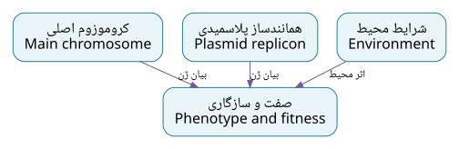
منابع این گام: [R12A1]؛ [R12A2]؛ [R12A3]
۱ — یک پلاسمید دارای مبدأ همانندسازی اختصاصی است. کدام استنباط معتبرتر است؟
۲ — در یک باکتری دو مولکول کروموزومی پایدار یافت شده است. کدام نتیجه درست است؟
۳ — از دستدادن پلاسمید همزمان با کاهش رشد دیده میشود. بهترین شاهد تکمیلی چیست؟
۱ — گزینه ۲. مبدأ جدا امکان کنترل مستقل را میدهد؛ وابستگی به میزبان و تعداد نسخه از این ویژگی بهتنهایی تعیین نمیشوند.
۲ — گزینه ۳. تعداد انواع کروموزوم با تعداد مجموعههای همولوگ فرق دارد؛ چندکروموزومی بودن الزاماً دیپلوئیدی نیست.
۳ — گزینه ۴. نجات کنترلشده نسبت به همبستگی اولیه شاهد علّی قویتری است؛ طول DNA یا نامگذاری علت را روشن نمیکند.
نوکلئوئید ناحیه سازمانیافته DNA باکتری است و غشای هستهای ندارد. فشردهشدن DNA با ابرپیچش، حلقهبندی، پروتئینهای وابسته به نوکلئوئید و ازدحام مولکولی ارتباط دارد. فشردگی به معنی خاموشبودن کامل ژنوم نیست؛ شکل موضعی DNA میتواند دسترسی ماشین رونویسی و همانندسازی را تغییر دهد. اصطلاح «پروتئین شبههیستونی» نباید باعث یکسانگرفتن سازمان باکتری و نوکلئوزوم یوکاریوتی شود. برخی آرکیها هیستون دارند، اما این ویژگی را نیز نباید بیاستثنا به همه آنها تعمیم داد.
در یک DNA حلقوی دورشتهای با ستون فقرات بسته، عدد پیوندی تعداد درهمپیچیدن دو رشته را بیان میکند. بدون بریدن و اتصال مجدد رشتهها این عدد تغییر نمیکند، هرچند سهم پیچش دورشته و پیچوتاب محور DNA میتواند جابهجا شود. بازشدن موضعی دورشته در جلوی چنگال، تنش توپولوژیک ایجاد میکند. هلیکاز پیوند هیدروژنی بازها را جدا میکند؛ توپوایزومراز با برش موقت و اتصال مجدد ستون فقرات این مسئله را مدیریت میکند. این دو فعالیت را نباید مترادف دانست.
در E. coli ژیراز میتواند ابرپیچش منفی وارد کند و تنش مثبت جلوی چنگال را کاهش دهد؛ توپوایزومراز IV در جداسازی مولکولهای دختر اهمیت ویژه دارد. اینها آنزیمهای نوع دوماند و با دروازه برشی دورشتهای عمل میکنند. ژل DNA پلاسمیدی ممکن است شکلهای ابرپیچیده، حلقه باز و خطی را جدا کند؛ مهاجرت متفاوت بهتنهایی اثبات اختلاف طول توالی نیست.
دو نمونه از یک پلاسمید همتوالی روی ژل در جای متفاوتاند. پس از خطیسازی هر دو با یک آنزیم برشی، یک باند هماندازه میدهند. تفسیر چیست؟
تفاوت اولیه با توپولوژی متفاوت سازگار است. هماندازهشدن پس از خطیسازی ادعای اختلاف طول را تضعیف میکند، هرچند برای همسانی کامل توالی باید توالییابی انجام شود.
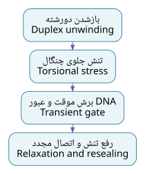
منابع این گام: [R12A2]؛ [R12A3]؛ [R12A4]؛ [R12A11]
۱ — تغییر شکل یک DNA حلقوی بسته بدون شکست رشته کدام کمیت را نمیتواند عوض کند؟
۲ — کدام مقایسه هلیکاز و ژیراز صحیح است؟
۳ — دو شکل پلاسمیدی پس از خطیسازی یک اندازه دارند. کدام نتیجه مستقیمتر است؟
۱ — گزینه ۲. عدد پیوندی در مولکول دورشتهای بسته یک کمیت توپولوژیک است؛ شکل و توزیع تنش میتوانند تغییر کنند.
۲ — گزینه ۳. هلیکاز بازشدن دورشته را پیش میبرد؛ ژیراز توپوایزومراز نوع دوم است و پرایماز آنزیم سازنده آغازگر است.
۳ — گزینه ۱. کنترل خطیسازی طول ظاهری را یکسان میکند؛ همطولی هنوز همتوالی بودن کامل را ثابت نمیکند.
در مدل کروموزومی E. coli، آغاز در oriC با شناسایی جایگاهها توسط آغازگر DnaA و بازشدن تنظیمشده ناحیهای از DNA همراه است. مبدأ یک توالی DNA است و آغازگر یک پروتئین؛ جهش در هرکدام میتواند آغاز را مختل کند، اما مکملسازی آنها یکسان نیست. افزایش پروتئین آغازگر معمولاً نقص حذف توالی مبدأ را جبران نمیکند. بارگذاری هلیکاز، ساخت آغازگر RNA توسط پرایماز و استقرار DNA پلیمراز، دو چنگال با حرکت مخالف روی کروموزوم ایجاد میکند. نام پروتئینها و سازوکار بارگذاری در همه باکتریها و آرکیها یکسان نیست.
DNA پلیمراز همانندساز به انتهای آزاد سهپرایم نیاز دارد و رشته جدید را فقط در جهت پنجپرایم به سهپرایم میسازد. در هر چنگال، رشته پیشرو نسبت به حرکت چنگال پیوستهتر ساخته میشود و رشته پسرو از قطعات اوکازاکی تشکیل میشود. ناپیوستگی رشته پسرو جهت شیمیایی سنتز را معکوس نمیکند. حذف آغازگر، پرکردن فاصله و اتصال نیکها مراحل متمایزند؛ لیگاز جای سنتز DNA یا ساخت آغازگر را نمیگیرد.
اگر یک مبدأ دو چنگال همسرعت بسازد، زمان ایدئال کپیشدن کروموزوم از تقسیم طول بر دو برابر سرعت هر چنگال به دست میآید. این محاسبه توقفها، زمان آغاز و جداسازی را حذف میکند. در رشد سریع، دورهای همانندسازی ممکن است همپوشان شوند؛ بنابراین کوتاهبودن زمان دوبرابرشدن جمعیت نسبت به زمان کپی یک کروموزوم، تناقض منطقی نیست و بهتنهایی افزایش سرعت آنزیم را اثبات نمیکند.
طول یک کروموزوم فرضی ۴٫۸ میلیون جفتباز و سرعت هر چنگال ۸۰۰ جفتباز بر ثانیه است. دو چنگال همزمان و همسرعت حرکت میکنند. زمان ایدئال کپی چقدر است؟
با فرض نبود توقف، زمان برابر 4,800,000/(2×800)=3,000 ثانیه، یعنی ۵۰ دقیقه است. این زمان شامل آغاز، پایان پردازش و تقسیم سلول نیست.
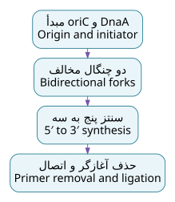
منابع این گام: [R12A1]؛ [R12A2]؛ [R12A3]
۱ — جهش حذف oriC در کروموزوم مدل رخ داده است. چرا افزودن DnaA سالم الزاماً کافی نیست؟
۲ — در رشته پسرو کدام عبارت درست است؟
۳ — کروموزوم ۳٫۶ میلیون جفتبازی با دو چنگال ۱۰۰۰ جفتباز بر ثانیه، بدون توقف، در چند دقیقه کپی میشود؟
۱ — گزینه ۲. عامل پروتئینی قابل انتشار با جایگاه DNA که باید روی همان مولکول باشد فرق دارد؛ حذف مبدأ صرفاً کمبود DnaA نیست.
۲ — گزینه ۱. جهت شیمیایی سنتز هر قطعه ثابت است؛ جهت پیشروی کلی چنگال را نباید با آن عوض کرد.
۳ — گزینه ۳. ۳۶۰۰۰۰۰ تقسیم بر۲۰۰۰ برابر۱۸۰۰ثانیه یا۳۰دقیقه است؛ دوچنگالی بودن باید در مخرج محاسبه لحاظ شود.
پایان کپیکردن توالی، جداسازی فیزیکی DNAهای دختر و تقسیم سلول سه مسئله مرتبط ولی متمایزند. در کروموزوم حلقوی E. coli دو چنگال در ناحیه پایان به هم میرسند. کمپلکس Tus متصل به جایگاه ter یک مانع قطبی برای چنگال است: جهت نزدیکشدن اهمیت دارد. این سامانه ناحیه برخورد را محدود میکند و به معنی توقف هر چنگال در یک نقطه ثابت برای همه دورها نیست. بسیاری از باکتریها چنین تله چنگالی ندارند؛ پایان آزاد در محل برخورد نیز امکانپذیر است. پس نام Tus نباید بهعنوان قانون عمومی پروکاریوتها حفظ شود.
کاتنان دو حلقه مستقل است که مانند حلقههای زنجیر درهمقفل شدهاند؛ دایمر کروموزومی یک مولکول پیوسته با دو واحد ژنومی است. توپوایزومراز IV با عبور یک دورشته از دروازه برشی دورشته دیگر، کاتناسیون را برطرف میکند. در مقابل، حل دایمر در E. coli به نوترکیبی اختصاصی جایگاه توسط XerC و XerD در dif و تنظیم توسط FtsK ارتباط دارد. یکسانگرفتن این دو ساختار باعث انتخاب آنزیم نادرست میشود.
فرایندهای جداسازی میتوانند پیش از پایان کامل کپی DNA نیز آغاز شوند؛ نمایش مرحلهبهمرحله کتاب برای تفکیک مفاهیم است، نه ادعای جدایی زمانی کامل در سلول. در آزمایش، افزایش مقدار DNA همراه با سلولهای رشتهای، نقص همانندسازی را از نقص جداسازی بهتنهایی جدا نمیکند. باید کاملبودن کروموزوم، اتصال توپولوژیک، دایمرهای پیوسته و جایگاه سپتوم مستقلاً بررسی شوند.
یک موتانت دو مولکول حلقوی کامل اما درهمقفلشده انباشته میکند. موتانت دیگر یک حلقه پیوسته با دو مجموعه ژنومی دارد. کدام نقصها محتملاند؟
در اولی نقص دکاتناسیون، مانند کاهش فعالیت توپوایزومراز IV، مطرح است؛ در دومی نقص حل دایمر در سامانه Xer/dif مطرح میشود. برای تعیین ژن، ساختار DNA و مکملسازی باید تأیید شوند.
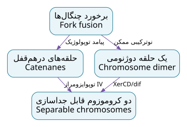
منابع این گام: [R12A2]؛ [R12A3]؛ [R12A4]؛ [R12A9]
۱ — کدام جفت ساختار و راهحل در E. coli درست است؟
۲ — اثر معکوسکردن جهت یک جایگاه ter در حضور Tus به کدام ویژگی وابسته است؟
۳ — پایان همانندسازی در باکتری فاقد Tus چگونه تفسیر میشود؟
۱ — گزینه ۳. توپوایزومراز IV اتصال توپولوژیک حلقههای مستقل را رفع میکند؛ دایمر پیوسته مسئله نوترکیبی اختصاصی جایگاه است.
۲ — گزینه ۱. سد Tus-ter جهتدار است؛ جهت نزدیکشدن چنگال تعیینکننده اثر مانع است و شیمی سنتز عوض نمیشود.
۳ — گزینه ۴. Tus سامانه تخصصیافته برخی باکتریهاست؛ همگرایی چنگالها اصل کلیتری است و نبود Tus وجود تلومراز را ایجاب نمیکند.
• نوع کروموزوم را از تعداد نسخههای همانندسازیشده جدا کنید.
• همه رشتههای جدید DNA در جهت پنج به سه ساخته میشوند.
• پایان کپی توالی، دکاتناسیون و حل دایمر یک فرایند واحد نیستند.
• الگوی E. coli را به همه آرکیها و باکتریها تعمیم ندهید.
| عنصر یا عامل | نقش در مدل E. coli | اشتباه رایج |
|---|---|---|
| oriC | جایگاه آغاز روی DNA | اشتباهگرفتن با پروتئین آغازگر |
| DnaA | سازماندهی آغاز | همساندانستن با DNA پلیمراز |
| ژیراز | کنترل ابرپیچش | همساندانستن با هلیکاز |
| توپوایزومراز IV | دکاتناسیون | انتساب حل دایمر پیوسته |
| XerCD/dif | حل دایمر با نوترکیبی اختصاصی | انتساب سنتز پرایمر |
جهش تغییر پایدار در توالی DNA است؛ آسیب شیمیایی DNA و جهش تثبیتشده یک چیز نیستند. یک باز آسیبدیده ممکن است پیش از همانندسازی ترمیم شود و هیچ تغییر وراثتی باقی نگذارد. جانشینی باز میتواند گذار، یعنی جابهجایی پورین با پورین یا پیریمیدین با پیریمیدین، یا تراگذر، یعنی جابهجایی میان این دو گروه باشد. این طبقهبندی شیمیایی مستقل از طبقهبندی اثر بر پروتئین است: یک گذار ممکن است هممعنی، دگرمعنی یا بیمعنی باشد. پس از نوع تغییر باز بهتنهایی نمیتوان شدت فنوتیپ را نتیجه گرفت.
در ناحیه کدکننده، حذف یا اضافهشدن تعداد بازی که مضرب سه نباشد معمولاً چارچوب خواندن را تغییر میدهد. حذف سه باز چارچوب پاییندست را حفظ میکند، ولی لزوماً کماثر نیست: ممکن است اسیدآمینه کلیدی حذف شود یا در مرز کدون، ترکیب کدونی تازه ایجاد شود. جهش هممعنی نیز فقط حفظ اسیدآمینه را میگوید؛ اثر بر پایداری RNA، ترجمه یا تنظیم هنوز ممکن است. تغییر پروموتر ممکن است مقدار پروتئین سالم را عوض کند، بدون اینکه توالی اسیدآمینه آن تغییر کند.
بازگشت فنوتیپ اولیه نیز همیشه بازگشت توالی اولیه نیست. جهش برگشتی واقعی و جهش سرکوبگر در محل دوم دو راه متفاوتاند. برای تفسیر باید توالی، مقدار و فعالیت محصول و شرایط سنجش را کنار هم دید. جهش شرطی، مانند حساسیت به دما، نشان میدهد که رابطه ژنوتیپ و فنوتیپ به محیط وابسته است؛ نمیتوان از زندهبودن در یک دما به سالمبودن ژن در همه شرایط رسید.
یک حذف سهبازی فعالیت آنزیم را تقریباً صفر کرده ولی طول بخش پاییندست پروتئین مانند قبل است. آیا داده ناسازگار است؟
خیر. مضرب سه بودن از تغییر چارچوب پاییندست جلوگیری میکند، اما حذف یک باقیمانده مهم یا تغییر کدون در مرز حذف میتواند فعالیت را از بین ببرد.
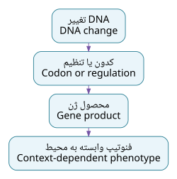
منابع این گام: [R12A5]
۱ — کدام عبارت درباره جهش هممعنی دقیقتر است؟
۲ — جانشینی A با G در DNA از نظر نوع باز چیست؟
۳ — فنوتیپ طبیعی پس از جهش دوم برگشته است. کدام نتیجه هنوز نیازمند توالییابی است؟
۱ — گزینه ۳. هممعنی درباره خروجی کدون است، نه تضمین بیاثری در تمام سطوح بیان.
۲ — گزینه ۲. هر دو پوریناند، پس گذار است؛ اثر اسیدآمینه بدون کدون مشخص نمیشود.
۳ — گزینه ۱. سرکوبگر محل دوم نیز میتواند فنوتیپ را برگرداند؛ بازگشت فنوتیپ اثبات برگشت دقیق DNA نیست.
آزمون نوسان زمان پیدایش مقاومت را از زمان آشکارشدن آن جدا میکند. چند کشت کوچک و مستقل، پیش از قرارگرفتن در محیط انتخابی، جداگانه رشد میکنند. اگر جهش در رشد پیش از انتخاب رخ دهد، زمان وقوع آن تعیین میکند چند نواده مقاوم در انتهای کشت وجود داشته باشد: جهش زودرس میتواند یک کشت با شمار بسیار بالای موتانت، یا جکپات، بسازد. بنابراین پراکندگی میان کشتهای مستقل از پراکندگی نمونههای هماندازه یک کشت بزرگ بیشتر میشود. انتخاب، موتانت موجود را آشکار و تکثیر میکند؛ این نتیجه به معنی ناممکنبودن اثر تنش بر نرخ جهش در هر شرایط دیگری نیست.
فراوانی موتانت نسبت سلولهای دارای فنوتیپ موردنظر به کل سلولها در یک زمان است؛ نرخ جهش احتمال رویداد جهشی بهازای تقسیم یا واحد تعریفشده دیگر است. یک رویداد زودرس ممکن است نوادگان زیادی ایجاد کند، پس تقسیم شمار کلنی مقاوم بر شمار سلولها، نرخ را مستقیماً نمیدهد. رشد متفاوت موتانت، تأخیر بیان فنوتیپ، بازده کشت روی پلیت و رشد پس از انتخاب میتوانند بر برآورد اثر بگذارند.
در روش ساده کشتهای صفر، اگر سهم کشتهای بدون موتانت p0 باشد، میانگین رویدادهای جهشی در هر کشت با m = −ln(p0) برآورد میشود. تبدیل m به نرخ، فرضهای رشد و تعداد تقسیمها را لازم دارد. این روش در دامنه مناسب و با کشت کامل معتبر است؛ نبود کلنی میتواند ناشی از ضعف بازیابی نیز باشد و الزاماً نبود جهش نیست. روشهای درستنمایی برای تحلیل دقیقتر از کل توزیع استفاده میکنند.
از ۴۰ کشت مستقل همحجم و همجمعیت، ۱۰ کشت بدون موتانتاند. با فرض بازیابی کامل و نبود موتانت اولیه، m چقدر است؟
p0=10/40=0.25 و m=−ln(0.25)=1.386 رویداد در هر کشت است. این عدد هنوز نرخ بهازای تقسیم نیست؛ تعداد تقسیمهای مؤثر و فرضهای رشد باید تعیین شوند.
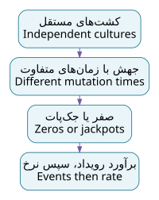
منابع این گام: [R12A6]
۱ — علت جکپات در طرح کلاسیک نوسان چیست؟
۲ — اگر بازده بازیابی موتانت کاهش یابد، روش p0 بدون اصلاح چه گرایشی دارد؟
۳ — از ۲۰ کشت، تقریباً ۷ کشت صفرند. کدام عدد به m نزدیکتر است؟
۱ — گزینه ۱. جهش زودرس پیش از انتخاب فرصت تکثیر بیشتری دارد؛ آلودگی باید کنترل شود ولی جکپات بهخودیخود اثبات آلودگی نیست.
۲ — گزینه ۳. از دسترفتن موتانتها کشتهای ظاهراً صفر را بیشتر میکند؛ منفی لگاریتم عدد بزرگتر، کوچکتر است.
۳ — گزینه ۴. m=−ln(7/20) تقریباً۱٫۰۵ رویداد در هر کشت است؛ تعداد کلنی یا شمار کشت مستقیماً m نیست.
ترمیم را بر اساس نوع مسئله دنبال کنید. تصحیح هنگام پلیمریزاسیون، نوکلئوتید نادرست تازهاضافهشده را حذف میکند؛ ترمیم عدمتطابق خطاهای باقیمانده پس از عبور چنگال را اصلاح میکند. در الگوی کلاسیک E. coli، MutS عدمتطابق را شناسایی میکند و سامانه MutL/MutH از تفاوت متیلاسیون رشتهها برای هدفگیری رشته تازه استفاده میکند. این روش تشخیص رشته را نباید قانون همه باکتریها دانست. افت تصحیح یا ترمیم میتواند فراوانی جهش را بالا ببرد، بیآنکه هر ضایعه به همان نوع جهش ختم شود.
در برداشت باز، یک گلیکوزیلاز باز نامناسب را جدا میکند و جایگاه بیباز برای پردازش بعدی باقی میماند. در برداشت نوکلئوتید، قطعهای شامل ضایعه حجیم یا برهمزننده دورشته حذف میشود و با استفاده از رشته سالم بازسازی میشود. ترمیم نوری با فوتولیاز، در موجود دارای این آنزیم، مسیر برگشت مستقیم برخی دیمرهای پیریمیدینی است و به برداشت یک قطعه DNA نیاز ندارد. وجود یک مسیر، مسیرهای دیگر را حذف نمیکند.
در پاسخ SOS مدل E. coli، انباشت DNA تکرشتهای موجب تشکیل شکل فعال RecA و تسهیل خودبرشی مهارگر LexA میشود؛ رفع مهار، بیان مجموعهای از ژنهای پاسخ به آسیب را تغییر میدهد. برخی اجزای پاسخ در تحمل ضایعه و سنتز عبوری نقش دارند و میتوانند خطاپذیری بیشتری داشته باشند. عبور از ضایعه لزوماً حذف ضایعه نیست. SOS را نه مترادف تمام ترمیمها بدانید و نه سازوکاری که هر بار دقیقاً توالی سالم را بازمیگرداند.
پس از UV، تعداد بازماندگان یک سویه بیشتر میشود ولی جهش در میان بازماندگان نیز افزایش دارد. آیا «زندهماندن بیشتر» صحت کامل ترمیم را نشان میدهد؟
خیر. تحمل ضایعه و سنتز عبوری میتوانند بقا را افزایش دهند و همزمان جهش بیشتری باقی بگذارند. باید حذف ضایعه، صحت توالی و بقا جدا سنجیده شوند.
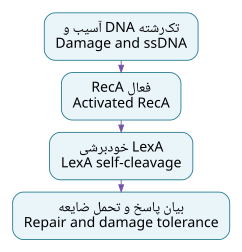
منابع این گام: [R12A5]؛ [R12A9]؛ [R12A10]؛ [R12A12]؛ [R12A13]
۱ — کدام رویداد ویژگی برداشت باز است؟
۲ — کدام تعبیر از SOS دقیق است؟
۳ — فوتولیاز فعال با نور، دیمر را برمیگرداند. این مسیر با کدام توضیح سازگارتر است؟
۱ — گزینه ۲. گلیکوزیلاز پیوند باز با قند را هدف میگیرد؛ مراحل برش و پرکردن پس از آن رخ میدهند.
۲ — گزینه ۳. SOS یک شبکه تنظیمی است؛ بقا و وفاداری توالی نتیجه یکسانی ندارند و همه مسیرهای ترمیم نیز SOS نیستند.
۳ — گزینه ۱. ترمیم نوری برخی ضایعات را مستقیم برمیگرداند؛ برداشت قطعه از DNA ویژگی ضروری این واکنش نیست.
در انتخاب، محیط امکان بقای گروهی از ژنوتیپها را بیشتر میکند؛ در غربال، جمعیت اجازه رشد دارد و افراد دارای ویژگی موردنظر میان کلنیها پیدا میشوند. رشد روی محیط حداقل برای یافتن سلول پروتوتروف یک انتخاب است. در مقابل، شناسایی کلنیهایی که روی محیط غنی زندهاند ولی روی محیط فاقد یک اسیدآمینه رشد نمیکنند، به مقایسه و غربال نیاز دارد. در کشت رپلیکا، جای کلنیها حفظ میشود تا از نمونه اصلی غیرانتخابی، کلنی دارای فنوتیپ منفی بازیابی شود. نبود رشد روی پلیت آزمایش به معنی مردهبودن کلنی روی پلیت اصلی نیست.
آزمون ایمز بازگشت توان رشد در سویه آزمون مناسب را بهعنوان شاخص جهشزایی بررسی میکند. افزایش کلنیهای برگشتی نسبت به کنترل حلال، در زمینه بقا و دوز، شاهدی برای جهشزایی در همان سامانه است. افزودن جزء فعالساز متابولیکی مانند S9 کمک میکند موادی که پس از متابولیسم فعال میشوند آشکار شوند. سویهها حساسیتهای متفاوتی دارند؛ یک نتیجه منفی در یک سویه و یک شرایط، بیخطر بودن همگانی ماده را ثابت نمیکند.
کنترل مثبت، کنترل حلال، بررسی سمیت و شمار زمینهای برگشت لازماند. ماده بسیار سمی ممکن است شمار کلنی را کم کند و اثر جهشزایی آن پنهان بماند. جهشزایی با سرطانزایی یک مفهوم واحد نیست؛ آزمون باکتریایی خطر سرطان در انسان را مستقیماً اندازه نمیگیرد. افزایش یک فنوتیپ مقاوم نیز ممکن است حاصل انتخاب زیرجمعیت موجود باشد؛ برای استنتاج افزایش نرخ جهش باید طرحی مانند نوسان و کنترل رشد به کار رود.
کنترل حلال ۲۰ کلنی برگشتی، دوز کم ماده ۸۰ کلنی و دوز بسیار زیاد ۲ کلنی با چمن رشد ضعیف میدهد. نتیجه چیست؟
دوز کم شاهد جهشزایی در سامانه آزمون است. افت کلنی در دوز بالا با سمیت سازگار است و شاهد رفع جهشزایی یا ایمنی ماده نیست. تکرار، کنترل مثبت و سنجش بقا لازماند.
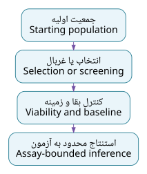
منابع این گام: [R12A5]؛ [R12A6]
۱ — برای یافتن موتانت نیازمند لوسین، بهترین راه بازیابی کدام است؟
۲ — افزایش برگشت فقط در حضور S9 چه چیزی را مطرح میکند؟
۳ — کاهش کلنی برگشتی همراه مرگ شدید باکتری چه محدودیتی دارد؟
۱ — گزینه ۳. فنوتیپ منفی روی محیط فاقد مکمل کلنی نمیسازد؛ بازیابی از محل متناظر پلیت غیرانتخابی انجام میشود.
۲ — گزینه ۱. S9 میتواند پیشجهشزا را فعال کند؛ این مشاهده هنوز معادل اثبات سرطانزایی در انسان نیست.
۳ — گزینه ۲. پلیت کمکلنی ممکن است سلول زنده کافی نداشته باشد؛ بقا باید کنار پاسخ جهشزایی تحلیل شود.
• جهش تثبیتشده را از آسیب اولیه جدا کنید.
• فراوانی موتانت، نرخ جهش نیست.
• انتخاب جهش موجود را آشکار میکند و زمان وقوع آن را بهتنهایی نمیگوید.
• بقای بیشتر پس از آسیب الزاماً حفظ دقیق توالی نیست.
| روش | آنچه میسنجد | محدودیت کلیدی |
|---|---|---|
| توالییابی | نوع تغییر DNA | اثر عملکردی را بهتنهایی تعیین نمیکند |
| آزمون نوسان | برآورد رویداد و نرخ با فرض مدل | زمان جهش و رشد بر توزیع اثر دارند |
| رپلیکا پلیتینگ | مقایسه رشد در دو محیط | کلنی منفی از پلیت اصلی بازیابی میشود |
| ایمز | جهشزایی در سویه و شرایط آزمون | نتیجه مستقیم سرطانزایی انسانی نیست |
نوترکیبی همولوگ بر اشتراک طولانی توالی میان DNAها تکیه دارد و در ترمیم شکست یا شکاف کروموزوم نیز به کار میرود. تنوع ژنتیکی یکی از پیامدهای آن است، نه تنها وظیفه آن. در E. coli، RecA روی DNA تکرشتهای فیلامان میسازد و جستوجوی توالی همولوگ و تبادل رشته را تسهیل میکند. رشته تکرشتهای میتواند به یک دورشته همولوگ وارد شود، با رشته مکمل جفت شود و رشته دیگر را جابهجا کند؛ ساختار اولیه را حلقه D مینامند. نوکلئوتید ATP و وضعیت فیلامان در این فرایند اهمیت دارند؛ RecA نه DNA پلیمراز است و نه آنزیمی که هر دو DNA نامرتبط را بهدلخواه متصل کند.
پس از ورود رشته، سنتز DNA و پردازش اتصالهای شاخهدار میتوانند اطلاعات از دسترفته را بازیابی کنند. اتصال هالیدی یک ساختار چهارشاخه است؛ در مسیر کلاسیک، مهاجرت شاخه و برش مناسب آن به محصولات مختلف میانجامد. RuvAB در مهاجرت شاخه و RuvC در برش اتصال نقش دارند. وجود اتصال هالیدی در یک مدل به این معنی نیست که تمام رویدادهای نوترکیبی دقیقاً از یک مسیر و محصول عبور میکنند. محصول ممکن است کراساور یا غیرکراساور باشد.
آزمون ژنتیکی باید ورود DNA به سلول را از ادغام آن جدا کند. اگر حذف recA فراوانی نوترکیب کروموزومی را کم کند، این نتیجه الزاماً کاهش ورود DNA را ثابت نمیکند. یک پلاسمید دارای مبدأ سازگار ممکن است بدون ادغام همولوگ باقی بماند. بنابراین سنجش مولکولی DNA ورودی و پایداری نشانگر در نسلهای بعد، همراه مکملسازی و کنترل رشد، برای محلیابی نقص لازم است.
در سویه فاقد recA، DNA دهنده وارد میشود ولی نشانگر کروموزومی آن پس از چند نسل ناپدید میشود. تفسیر مناسب چیست؟
ورود و ادغام دو مرحلهاند؛ داده با نقص تثبیت به کمک نوترکیبی همولوگ سازگار است. از بینرفتن نشانگر بهتنهایی نمیگوید کدام مرحله دیگر یا عامل تخریب نیز تغییر کرده است.
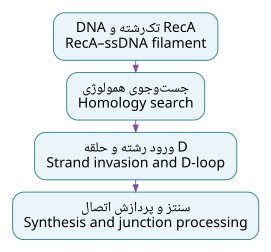
منابع این گام: [R12A8]؛ [R12A10]؛ [R12A9]
۱ — در یک آزمایش، مقدار DNA واردشده طبیعی ولی نوترکیب پایدار کم است. کدام مرحله بیشتر مطرح است؟
۲ — نقش اصلی RecA در نوترکیبی همولوگ کدام است؟
۳ — در مدل کلاسیک اتصال هالیدی، کدام جفت درست است؟
۱ — گزینه ۲. تفکیک سنجش ورود از ارثبری پایدار، مشکل را به مرحله پس از ورود نزدیک میکند؛ آزمایش مکمل هنوز لازم است.
۲ — گزینه ۳. RecA روی تکرشته فیلامان میسازد و تبادل همولوگ را پیش میبرد؛ نقشهای نامبرده دیگر به عوامل دیگری مربوطاند.
۳ — گزینه ۱. RuvAB حرکت شاخه را تسهیل و RuvC اتصال را برش میدهد؛ تعویض نقشها خطای رایج است.
در مسیر مهم ترمیم شکست دورشتهای E. coli، RecBCD از یک انتهای آزاد DNA دورشتهای وارد میشود. این مجموعه فعالیت هلیکازی و نوکلئازی دارد؛ بنابراین میتواند هم DNA را باز و هم آن را پردازش کند. وجود این دو فعالیت تناقض نیست: پردازش تنظیمشده، بستری مناسب برای بارگذاری RecA و نوترکیبی میسازد. در مقابل، تخریب DNA واردشده نیز یکی از سرنوشتهای ممکن است. مسیر RecFOR بیشتر با شکافهای تکرشتهای و کمک به بارگذاری RecA در آن زمینه ارتباط دارد؛ این تقسیم نقش را باید به مدل و زمینه ژنتیکی محدود کرد.
Chi در E. coli یک توالی نامتقارن DNA، با توالی معیار پنجپرایم GCTGGTGG سهپرایم، است. اثر آن به جهت ورود RecBCD و جهت قرارگیری توالی وابسته است. Chi یک پروتئین نوترکیبساز یا مبدأ همانندسازی نیست؛ برخورد مناسب با آن فعالیت مجموعه را تغییر میدهد و تشکیل انتهای تکرشتهای سهپرایم و بارگذاری RecA را تسهیل میکند. جزئیات شدت برش و تخریب در آزمایش برونتنی به شرایط یون و ATP وابستهاند؛ از یک شرایط لوله آزمایش نباید مکانیسم یگانه تمام سلولها را نتیجه گرفت.
در حل مسئله، محل ورود آنزیم، رشته و جهت Chi را روی نقشه مشخص کنید. صرف وجود واژه Chi در یک قطعه، تضمین افزایش نوترکیبی در هر دو جهت نیست. همچنین این سامانه و توالی را به همه پروکاریوتها تعمیم ندهید؛ آنزیمها و جایگاههای تنظیمی متناظر در دودمانهای دیگر ممکن است متفاوت باشند. آزمون جهش جایگاه و جهش عامل پروتئینی، دو نوع وابستگی متفاوت را بررسی میکند.
یک قطعه DNA شامل Chi نسبت به انتهای ورود RecBCD معکوس شده و اثر تحریک نوترکیبی کم شده است. آیا حذف پروتئین RecA ثابت شده است؟
خیر. تغییر جهت جایگاه cis میتواند شناسایی مؤثر توسط RecBCD را تغییر دهد، بدون تغییر ژن یا مقدار RecA. باید ورود آنزیم و جهت توالی کنترل شوند.
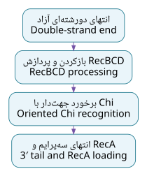
منابع این گام: [R12A8]؛ [R12A10]
۱ — Chi در مدل E. coli کدام است؟
۲ — کدام داده نشان میدهد اثر Chi جهتدار است؟
۳ — بهترین مقایسه RecBCD و RecFOR چیست؟
۱ — گزینه ۲. Chi یک جایگاه روی DNA است؛ اثر آن به جهت و مسیر RecBCD وابسته است.
۲ — گزینه ۳. وارونگی جهت نسبی جایگاه و ماشین واردشونده را تغییر میدهد؛ همین مقایسه آزمون قطبیت است.
۳ — گزینه ۲. این تقسیم کار در مدل E. coli مفید است؛ مسیرهای جانشین و زمینه موتانت از مطلقگویی جلوگیری میکنند.
در نوترکیبی اختصاصی جایگاه، ریکامبینازها توالیهای کوتاه معین را شناسایی و بازآرایی کنترلشدهای ایجاد میکنند. برخلاف نوترکیبی همولوگ، اشتراک طولانی توالی در سراسر دو مولکول شرط اصلی نیست. جایگاههای شناسایی و جهت آنها و اینکه روی یک مولکول یا دو مولکولاند، نتیجه را تعیین میکنند. اتصال یک مولکول حلقوی به مولکول دیگر میتواند ادغام بسازد؛ واکنش بین جایگاههای همجهت در یک مولکول میتواند قطعه میانی را جدا کند؛ جایگاههای خلافجهت میتوانند وارونگی قطعه میان خود را ایجاد کنند. نوع دقیق جایگاه و عاملهای کمکی، امکان و جهت واکنش را محدود میکنند.
سامانه XerC/XerD در جایگاه dif نمونه مهم نگهداری ژنوم E. coli است. یک دایمر کروموزومی، بهجای دو حلقه مستقل، یک مولکول پیوسته با دو واحد ژنومی دارد. نوترکیبی در جایگاههای dif میتواند دو مونومر قابل تفکیک بسازد؛ FtsK واکنش را با جداسازی و تقسیم هماهنگ میکند. این مسئله با کاتناسیون که درهمقفلشدن دو حلقه مستقل است تفاوت دارد. توپوایزومراز و ریکامبیناز را تنها به علت اینکه هر دو به جداسازی کمک میکنند یکی ندانید.
اختصاصیبودن جایگاه به معنی یکنواختی همه سامانهها نیست. بعضی گروهها ریکامبینازهای متفاوت یا یک عامل منفرد دارند و مکانیسمهای فاژی نیز عاملهای تنظیمی ویژه میخواهند. در تفسیر داده، کاهش ادغام در یک جایگاه موتانت با اثر cis آن جایگاه سازگار است؛ افزایش پروتئین سالم ممکن است جایگاه حذفشده را جایگزین نکند. بررسی مرز اتصال، جهت و شمار نسخهها برای اثبات محصول ضرورت دارد.
دو جایگاه شناسایی همسان در یک DNA در خلاف جهتاند. پس از فعالیت ریکامبیناز، مقدار DNA ثابت ولی جهت پروموتر میان آنها برعکس شده است. کدام محصول محتمل است؟
وارونگی قطعه میان جایگاهها با داده سازگار است. ثابتماندن مقدار DNA و تغییر جهت، با حذف ساده فرق دارد؛ توالییابی دو مرز محصول، استنتاج را میآزماید.
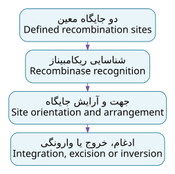
منابع این گام: [R12A9]؛ [R12A10]
۱ — نیاز اصلی نوترکیبی اختصاصی جایگاه با نوترکیبی همولوگ چه فرقی دارد؟
۲ — برای دایمر کروموزومی E. coli کدام مورد مستقیماً مناسبتر است؟
۳ — چرا جهت جایگاهها در طراحی یک وارونگی اهمیت دارد؟
۱ — گزینه ۳. توالیهای کوتاه اختصاصی و ریکامبیناز مناسب محور واکنشاند؛ گستره همولوژی مانند مسیر RecA شرط اصلی نیست.
۲ — گزینه ۱. XerCD/dif در حل دایمر نقش دارد؛ این نقش با دکاتناسیون دو حلقه مستقل فرق میکند.
۳ — گزینه ۲. جایگاههای مستقیم و وارونه محصولات متفاوتی میدهند؛ باید نوع سامانه و آرایش مولکولی هم مشخص باشند.
بازآرایی ژنوم را با دو پرسش بررسی کنید: ترتیب قطعهها چه تغییری کرده و تعداد نسخه هر قطعه چقدر است؟ در وارونگی، جهت قطعه تغییر میکند و معمولاً مقدار خالص DNA حفظ میشود. در حذف، یک قطعه از مولکول موردنظر کم میشود. در مضاعفشدن، تعداد نسخه افزایش مییابد. پیامد عملکردی فقط تابع مقدار DNA نیست؛ وارونگی پروموتر میتواند بیان را روشن یا خاموش کند، و جابهجایی ژن نسبت به مبدأ یا جهت همانندسازی ممکن است تعارض رونویسی و همانندسازی را تغییر دهد. وارونگی درون ژن نیز میتواند ژن را مختل کند.
توالیهای تکراری بستری برای نوترکیبی نابجا هستند. واکنش درونمولکولی بین تکرارهای مستقیم میتواند قطعه میان آنها را به شکل حلقه خارج کند و در مولکول اصلی حذف باقی بگذارد؛ تکرارهای معکوس میتوانند وارونگی بدهند. تبادل نابرابر بین مولکولهای خواهری ممکن است یک محصول دارای حذف و دیگری دارای مضاعفشدن ایجاد کند. اینها الگوهای هندسیاند؛ برای هر سامانه باید امکان بقای محصول، مبدأ همانندسازی و ژنهای ضروری را نیز دید.
توالییابی کوتاهخوان یا سنجش مقدار یک ژن بهتنهایی همه این رخدادها را از هم جدا نمیکند. ثابتبودن مقدار DNA وجود وارونگی را رد نمیکند؛ افزایش پوشش یک ناحیه نیز ممکن است از تعداد نسخه پلاسمید یا همانندسازی فعال ناشی شود. آزمون اتصال دو مرز جدید، خوانشهای عبوری و نقشه فیزیکی به تشخیص کمک میکنند. هنگام انتخاب موتانت، محصولی که زنده مانده دیده میشود؛ رخدادهای کشنده در شمارش کلنی حاضر نیستند و توزیع مشاهدهشده تمام رخدادهای اولیه نیست.
سنجش کمّی، دو نسخه از ناحیه B و یک نسخه از A و C نشان میدهد. آیا وارونگی خالصِ B این الگو را توضیح میدهد؟
وارونگی خالص تعداد نسخه B را افزایش نمیدهد؛ داده با مضاعفشدن یا افزایش نسخه ناحیهای سازگارتر است. برای تعیین آرایش باید مرزهای اتصال بررسی شوند.
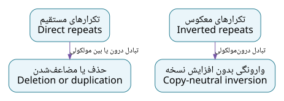
منابع این گام: [R12A10]
۱ — کدام مشاهده وارونگی خالص را رد نمیکند؟
۲ — تبادل نابرابر میان تکرارهای مستقیم دو مولکول خواهری ممکن است چه بدهد؟
۳ — بهترین شاهد برای تعیین آرایش دقیق بازآرایی چیست؟
۱ — گزینه ۴. وارونگی میتواند مقدار را حفظ و جهت مرز یا پروموتر را تغییر دهد؛ سنجش تعداد نسخه بهتنهایی کافی نیست.
۲ — گزینه ۲. جابهجایی محل همترازی، مقدار قطعه را در دو محصول نامتقارن میکند؛ نتیجه به آرایش تکرارها وابسته است.
۳ — گزینه ۳. مرزها ترتیب و جهت را روشن میکنند و تعداد نسخه، وارونگی خالص را از افزایش یا کاهش مقدار جدا میسازد.
• RecA تبادل همولوگ را تسهیل میکند؛ ورود DNA و ادغام آن مستقل سنجیده شوند.
• Chi یک جایگاه جهتدار روی DNA است.
• هندسه جایگاهها محصول نوترکیبی را محدود میکند.
• مقدار DNA، ترتیب و جهت آن سه شاخص مستقلاند.
| رخداد | الگوی متداول | شاهد تفکیککننده |
|---|---|---|
| نوترکیبی همولوگ | اشتراک طولانی توالی و عوامل Rec | تبادل آلل در ناحیه همولوگ |
| اختصاصی جایگاه | جایگاه کوتاه و ریکامبیناز معین | مرز دقیق و وابستگی به جایگاه |
| وارونگی | تغییر جهت قطعه | مرزهای وارونه با تعداد نسخه ثابت |
| مضاعفشدن | افزایش نسخه قطعه | مرز اتصال و پوشش بیشتر |
| حل دایمر | یک مولکول دوژنومی به دو مونومر | ساختار مولکولی و وابستگی Xer/dif |
ترانسفورماسیون طبیعی دریافت DNA آزاد محیط توسط سلول شایسته و باقیماندن اثر ژنتیکی آن است. شایستگی حالتی فیزیولوژیک و تنظیمشده است؛ هر باکتری و هر سلول در هر شرایطی توان یکسان ندارد. در بسیاری از سامانهها، DNA دورشتهای به سطح متصل میشود، یک رشته هنگام ورود تخریب میشود و رشته دیگر وارد سلول میشود. این توصیف را نباید با روشهای مصنوعی ورود پلاسمید، مانند الکتروپوریشن، یکسان گرفت؛ آنها میتوانند موانعی را دور بزنند که در شایستگی طبیعی مهماند.
ورود DNA کروموزومی معمولاً برای ارثبری پایدار به ادغام در ژنوم نیاز دارد؛ همولوژی و عوامل نوترکیبی در این مرحله اهمیت دارند. در مقابل، DNA دارای همانندساز سازگار میتواند بهصورت خارجکروموزومی پایدار شود. DNA فاقد همولوژی مناسب و فاقد مبدأ قابل استفاده ممکن است وارد شود ولی در نسلها باقی نماند. بنابراین سه سنجش اتصال سطحی، ورود و نوترکیب پایدار لزوماً نتایج همسان ندارند.
حساسیت انتقال به DNase پیش از ورود، شاهدی برای نقش DNA آزاد است؛ این شاهد فقط با زمان افزودن آنزیم معنا دارد. پس از ورود یا حفاظت DNA در ساختار مناسب، DNase بیرون سلول ممکن است دیگر آن را تخریب نکند. برای تشخیص سازوکار، کنترل زندهبودن سلول، فعالیت DNase و نبود فاژ یا تماس مستقیم لازم است. مشاهده انتقال یک نشانگر بهتنهایی ثابت نمیکند تمام DNA دهنده ادغام شده یا سلول گیرنده همه صفات دهنده را گرفته است. در طراحی آزمون، قطعه ورودی، انتخاب نشانگر و محل ادغام باید مشخص باشند.
DNase فعال پیش از تماس سلول با DNA، انتقال را متوقف میکند؛ افزودن همان آنزیم پس از زمان کافی ورود اثر اندکی دارد. چه نتیجهای مجاز است؟
انتقال با مرحلهای بیرونسلولی و حساس به DNase و سپس مرحله محافظتشده سازگار است. این داده نقش DNA آزاد را تقویت میکند؛ برای اثبات ادغام، باید پایداری و جایگاه نشانگر بررسی شود.
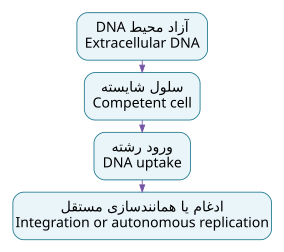
منابع این گام: [R12A7]؛ [R12A10]
۱ — در انتقال DNA کروموزومی، ورود طبیعی ولی ارثبری ضعیف است. کدام عامل را باید جدا آزمود؟
۲ — اثر DNase در تمایز ترانسفورماسیون چرا وابسته به زمان است؟
۳ — پایداری یک پلاسمید واردشده بدون نوترکیبی همولوگ با کدام ویژگی سازگار است؟
۱ — گزینه ۱. ورود برای پایداری کافی نیست؛ قطعه کروموزومی معمولاً باید ادغام شود یا سازوکار نگهداری دیگری داشته باشد.
۲ — گزینه ۲. آنزیم بیرون سلول به DNA آزاد دسترسی دارد؛ نبود اثر دیرهنگام، نبود DNA در فرایند را ثابت نمیکند.
۳ — گزینه ۳. همانندسازی و نگهداری مستقل میتواند جای ادغام را بگیرد؛ ورود هر پلاسمید در هر میزبان الزاماً پایداری ایجاد نمیکند.
کونژوگاسیون انتقال DNA وابسته به تماس و ماشین انتقال میان سلولهاست. در مدل F، سلول دهنده F مثبت ژنهای لازم برای برقراری تماس و انتقال را روی پلاسمید دارد. آغاز انتقال در oriT با پردازش یک رشته همراه است؛ همانندسازی در دهنده و ساخت رشته مکمل در گیرنده به بازسازی DNA دورشتهای کمک میکند. oriT مبدأ انتقال است و نباید با مبدأ همانندسازی پلاسمید یکی دانسته شود. وجود یک نشانگر مقاومت روی DNA نیز بهتنهایی نشان نمیدهد که آن DNA همه ژنهای انتقال را دارد.
در انتقال کامل و پایدار F از یک دهنده F مثبت به گیرنده F منفی مناسب، گیرنده میتواند F مثبت شود. دهنده لزوماً F را از دست نمیدهد، زیرا همانندسازی انتقال را همراهی میکند. این مدل را به انتقال اجباراً کامل در همه تماسها تعمیم ندهید؛ تماس ممکن است قطع شود، میزبان مانع استقرار شود یا پلاسمید ناسازگار باشد. همچنین همه پلاسمیدها کونژوگاتیو نیستند؛ بعضی با کمک ماشین انتقال عنصر دیگر بسیج میشوند و برخی در آن زمینه انتقال نمییابند.
آزمایش فیلتر یا جداسازی دو جمعیت با غشایی که سلول را جدا و مواد محلول را عبور میدهد، میتواند وابستگی به تماس را بیازماید. مقاومت به DNase بهتنهایی کونژوگاسیون را ثابت نمیکند، زیرا انتقال حفاظتشده با فاژ هم میتواند چنین باشد. حذف ژن انتقال و نجات کنترلشده آن، همراه رد نقش فاژ و سنجش تماس، شاهد قویتری است. شمار ترانسکونژوگانت باید به زمان، جمعیت دهنده و گیرنده و شرایط انتخاب ارجاع داده شود.
یک پلاسمید کوچک oriT دارد ولی ژنهای انتقال ندارد. در حضور پلاسمید کمکی منتقل میشود. آیا خودش کونژوگاتیو کامل است؟
خیر. داده با پلاسمید بسیجشونده سازگار است؛ توالی مورد شناسایی انتقال دارد ولی به ماشین کمکی وابسته است. oriT بهتنهایی سازنده ماشین انتقال نیست.
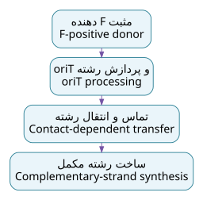
منابع این گام: [R12A7]
۱ — در انتقال کامل F، چرا دهنده میتواند همچنان F مثبت بماند؟
۲ — کدام تمایز صحیح است؟
۳ — مقاومت انتقال به DNase کدام نتیجه را بهتنهایی ثابت نمیکند؟
۱ — گزینه ۱. انتقال یک رشته با بازسازی DNA همراه است؛ انتقال F الزاماً دهنده را از پلاسمید خالی نمیکند.
۲ — گزینه ۲. انتقال و تکثیر دو کارکرد متمایزند؛ ممکن است کنترل و توالیهای متفاوت داشته باشند.
۳ — گزینه ۳. فاژ نیز DNA را حفاظت میکند؛ وابستگی به تماس و ژنهای انتقال برای تفکیک لازم است.
ادغام F در کروموزوم باکتری یک دهنده Hfr میسازد. آغاز انتقال همچنان از oriT عنصر ادغامشده است، ولی پس از بخش آغازین F، ژنهای مجاور کروموزوم بهصورت متوالی وارد گیرنده میشوند. جهت و محل ادغام، ترتیب ورود را تعیین میکنند. چون انتقال تمام کروموزوم و بخش انتهایی F زمانبر است و تماس اغلب زودتر قطع میشود، گیرنده دارای آللهای کروموزومی دهنده معمولاً F منفی باقی میماند. «فراوانی بالای نوترکیبی» به معنی انتقال کامل F به همه گیرندهها نیست.
DNA خطی واردشده برای باقیماندن روی کروموزوم حلقوی گیرنده باید با آرایش سازگار ادغام شود. در طرح ساده تعویض یک قطعه، دو مرز تبادل یا تعداد زوجی از تبادلها حلقویبودن مولکول را حفظ میکند؛ شمار دقیق مراحل مولکولی را نباید از یک شکل ژنتیکی ساده نتیجه گرفت. انتخاب یک آلل دهنده نیز وجود همه آللهای همراه را تضمین نمیکند. حذف دهنده از شمارش با نشانگر ضدانتخابی گیرنده ضروری است تا کلنی دهنده با نوترکیب اشتباه نشود.
اگر خروج F از کروموزوم دقیق نباشد، میتواند ژنهای کروموزومی مجاور را با خود ببرد و F-prime بسازد. ورود چنین پلاسمیدی به گیرنده میتواند برای همان ناحیه دو نسخه ژنی ایجاد کند؛ این حالت مریدیپلوئیدی برای آزمونهای مکملسازی مفید است. F-prime حاوی همه ژنوم دهنده نیست و دو نسخه فقط به ناحیه حملشده مربوطاند. تعداد نسخه، تنظیم و احتمال نوترکیبی بین نسخهها باید هنگام تفسیر غالببودن یا مکملشدن کنترل شوند.
پس از جفتگیری Hfr با گیرنده F منفی، گیرنده leu مثبت شده ولی F منفی است. آیا انتقال کروموزومی رد میشود؟
خیر. ورود و ادغام leu میتواند پیش از انتقال بخش انتهایی F رخ دهد. قطع تماس قبل از تکمیل کل انتقال، باقیماندن حالت F منفی را توضیح میدهد.
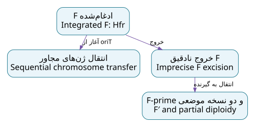
منابع این گام: [R12A7]؛ [R12A10]
۱ — چرا گیرنده در جفتگیری معمول Hfr اغلب F منفی میماند؟
۲ — F-prime چگونه در مدل کلاسیک ایجاد میشود؟
۳ — گیرنده دارای F-prime-lac برای کدام بخش مریدیپلوئید است؟
۱ — گزینه ۳. آللهای زودرس میتوانند وارد و ادغام شوند، درحالیکه بخش لازم برای F کامل هنوز منتقل نشده است.
۲ — گزینه ۱. خروج نادقیق قطعه کروموزومی همسایه را به پلاسمید میافزاید؛ این با Hfr ادغامشده متفاوت است.
ترانسداکشن انتقال اطلاعات باکتریایی با واسطه ذرات فاژی است. در نوع عمومی، هنگام بستهبندی، قطعه DNA باکتریایی میتواند بهاشتباه در سر فاژ قرار گیرد. دامنه بالقوه ژنها گسترده است، اما «عمومی» به معنی فراوانی کاملاً برابر بستهبندی همه نقاط یا انتقال کل ژنوم در یک ذره نیست. ظرفیت سر فاژ و سازوکار بستهبندی، طول قطعه و سوگیریها را محدود میکنند. پس از ورود قطعه کروموزومی به گیرنده، نوترکیبی میتواند نشانگر را پایدار کند؛ هر ذره ترانسداکتکننده الزاماً فاژ کامل تولید نمیکند.
در نوع اختصاصی کلاسیک، خروج نادقیق یک پروفاژ ادغامشده بخشی از ژنهای مجاور جایگاه اتصال را همراه میبرد. بنابراین مجموعه ژنهای قابل انتقال با موقعیت اتصال محدود میشود. فاژ لیزوژن و ایجاد صفت بهعلت ژن خود فاژ را باید از حمل اشتباهی ژن باکتریایی جدا کرد. تبدیل لیزوژنیک یعنی تغییر صفت میزبان به واسطه ژنهای پروفاژ؛ این مفهوم را نباید بهطور خودکار مترادف هر ترانسداکشن اختصاصی دانست.
برای تمایز از ترانسفورماسیون، DNase فقط DNA آزاد در دسترس را تخریب میکند و DNA درون کپسید میتواند حفاظت شود. برای تمایز از کونژوگاسیون، انتقال در مایع صافشده فاقد سلول و وابستگی به گیرنده فاژ بررسی میشود. با این حال صافشدن بهتنهایی کافی نیست؛ وزیکولها یا آلودگی باکتریایی نیز باید کنترل شوند. در نقشهبرداری همترانسداکشن، انتخاب یک نشانگر و بررسی نشانگر دوم، فاصله نسبی و احتمال قرارگرفتن آنها در یک قطعه را میآزماید، نه اینکه الزاماً دو ژن یک عملکرد دارند.
فاژ فقط ژنهای نزدیک محل ادغام خود را منتقل میکند و تغییر آن محل، ژنهای قابل انتقال را عوض میکند. کدام نوع انتقال مطرح است؟
این الگو با ترانسداکشن اختصاصی ناشی از خروج نادقیق پروفاژ سازگار است. عمومیبودن توزیع ژنها انتظار نمیرود؛ باید مرز DNA فاژ و میزبان در ذره بررسی شود.
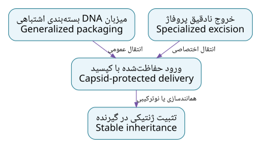
منابع این گام: [R12A7]؛ [R12A10]
۱ — محدودشدن ژنهای منتقلشده به مجاورت محل ادغام پروفاژ بیشتر به کدام اشاره دارد؟
۲ — کدام عبارت درباره تبدیل لیزوژنیک دقیقتر است؟
۳ — چرا دو ژن بسیار دور ممکن است همترانسداکت نشوند؟
۱ — گزینه ۲. خروج نادقیق ژنهای همسایه جایگاه پروفاژ را حمل میکند؛ در نوع عمومی محدودیت ثابت به همان محل وجود ندارد.
۲ — گزینه ۳. منشأ ژن تعیینکننده است: ژن خود فاژ میتواند فنوتیپ تازه ایجاد کند، بیآنکه ژن باکتریایی اشتباهی بستهبندی شده باشد.
۳ — گزینه ۱. دو جایگاه باید در محدوده یک قطعه مناسب حمل و تثبیت شوند؛ دوری میتواند از ظرفیت بستهبندی فراتر رود.
• عامل انتقال، مسیر ورود و سرنوشت پایدار DNA را جدا تعیین کنید.
• oriT مبدأ انتقال است و ori مبدأ همانندسازی.
• Hfr معمولاً آلل کروموزومی را پیش از F کامل منتقل میکند.
• تبدیل لیزوژنیک و حمل ژن باکتریایی دو مفهوم متمایزند.
| مسیر | واسطه | کنترل تفکیککننده |
|---|---|---|
| ترانسفورماسیون | DNA آزاد و سلول شایسته | DNase پیش از ورود و کنترل شایستگی |
| کونژوگاسیون | تماس و ماشین انتقال | جداکردن سلولها و بررسی ژنهای انتقال |
| ترانسداکشن عمومی | DNA میزبان بستهبندیشده | ذره فاژی و محدودیت اندازه قطعه |
| ترانسداکشن اختصاصی | خروج نادقیق پروفاژ | وابستگی ژن منتقلشده به محل ادغام |
| تبدیل لیزوژنیک | بیان ژن پروفاژ | تعیین منشأ ژن ایجادکننده صفت |
در نقشهبرداری با جفتگیری قطعشونده، یک دهنده Hfr با گیرنده مناسب مخلوط میشود و در زمانهای مشخص تماسها متوقف میشوند. سپس با انتخاب نشانگر دهنده در زمینه ژنتیکی گیرنده، زمان نخستین آشکارشدن هر نشانگر به دست میآید. نزدیکتر بودن یک ژن به آغاز انتقال، در جهت انتقال همان دهنده، معمولاً به ورود زودتر آن میانجامد. این ترتیب، از جهت مبدأ انتقال خوانده میشود و با ترتیب الفبایی نام ژنها ارتباطی ندارد. محل و جهت ادغام F در دهنده دیگر میتواند ترتیب مشاهدهشده را تغییر دهد.
اختلاف زمانهای ورود، فاصله نقشهای بر حسب دقیقه است. دقیقه در اینجا واحد یک روش انتقال است؛ تبدیل آن به جفتباز، سرعت انتقال مؤثر و فرض ثبات آن را لازم دارد. زمان ورود به ژنوتیپ، محیط، قطع تماس و آشکارسازی فنوتیپ وابسته است و از همانندسازی کروموزوم مستقل تعریف میشود. سرعت چنگال همانندسازی را نباید خودکار به سرعت انتقال کونژوگاتیو تبدیل کرد. همچنین دیرآشکارشدن یک فنوتیپ ممکن است از تأخیر بیان ناشی شود؛ کنترل مناسب نشانگرها اهمیت دارد.
ضدانتخاب دهنده ضروری است. اگر دهنده خود قادر به رشد روی محیط انتخابی باشد، کلنیهای آن میتوانند بهاشتباه نوترکیب شمرده شوند. یک نشانگر قابل انتخاب گیرنده یا حساسیت اختصاصی دهنده به حذف آن کمک میکند. داده چند Hfr برای ساخت نقشه حلقوی با بخشهای همپوشان ترکیب میشود؛ هر داده فقط یک قطعه جهتدار از نقشه را مشخص میکند. اگر ترتیبها ناسازگارند، پیش از تغییر نتیجه باید تفاوت جهت انتقال، اشتباه نامگذاری، انتخاب و خطای زمانگیری بررسی شوند.
در یک Hfr، نخستین ورود A در دقیقه۵، B در دقیقه۱۱ و C در دقیقه۱۹ دیده شده است. ترتیب و فاصلهها چیست؟
در جهت انتقال همین دهنده ترتیب A سپس B سپس C است؛ فاصله A تا B حدود۶ دقیقه و B تا C حدود۸ دقیقه است. فاصله A تا C حدود۱۴ دقیقه است؛ جفتباز دقیق بدون سرعت انتقال معلوم نیست.
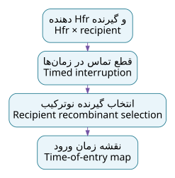
منابع این گام: [R12A7]؛ [R12A10]
۱ — ورود ژنها در دقایق۴،۹ و۱۷ بهترتیب X،Y وZ است. فاصله Y تا Z چیست؟
۲ — چرا در نقشه قطع جفتگیری باید دهنده ضدانتخاب شود؟
۳ — جهت ادغام F معکوس شده است. کدام انتظار منطقیتر است؟
۱ — گزینه ۲. اختلاف زمانها ۱۷−۹ برابر۸ دقیقه است؛ زمان مطلق ورود، فاصله دو ژن نیست.
۲ — گزینه ۳. پلیت باید نوترکیب در زمینه گیرنده را بشمارد؛ رشد دهنده میتواند شمارش را آلوده کند.
۳ — گزینه ۱. جهت آغاز انتقال مسیر خواندن نقشه را عوض میکند؛ جای ژنها لزوماً حذف یا هممکان نمیشود.
در همترانسداکشن یا همترانسفورماسیون، دو نشانگر زمانی با هم بازیابی میشوند که DNA مناسب حاوی آنها وارد و بهطور پایدار حفظ شود. هرچه دو جایگاه، در شرایط قابل مقایسه، نزدیکتر باشند، احتمال قرارگرفتن آنها در یک قطعه محدود بیشتر است. این رابطه در بسیاری از نقشهبرداریهای باکتریایی جهت معکوس درصد نوترکیبی رایج در نقشه میوزی دارد: همانتقالی بیشتر معمولاً نزدیکی بیشتر را نشان میدهد. با این حال نوع فاژ، طول قطعه، انتخاب و بازده نوترکیبی نیز بر عدد اثر میگذارند؛ رابطه صرفاً هندسی و بیقید نیست.
اگر A مثبت انتخاب شده و سپس B بررسی شود، فراوانی همانتقالی برابر شمار کلنیهای A مثبت و B مثبت تقسیم بر تمام کلنیهای A مثبت است. مخرج همه سلولهای کشت یا همه ذرات فاژ نیست. این یک احتمال شرطی است؛ تغییر نشانگر انتخابی میتواند مخرج و نتیجه عددی را تغییر دهد. تفاوت مقدار شرطی در دو جهت الزاماً به معنی دو فاصله فیزیکی متفاوت نیست. بازده انتخاب و بقای ژنوتیپهای مختلف باید مقایسه شوند.
برای استنتاج ترتیب سه ژن، مجموعهای از همانتقالیهای جفتی یا داده سهنشانگری لازم است. نزدیکترین جفت را با دورترین جفت اشتباه نگیرید و صفر همانتقالی را به نبود مطلق هر مسیر انتقال تعبیر نکنید. ژنهای دور ممکن است هرکدام جدا انتقال یابند اما در یک ذره جا نشوند. مقایسه اعداد دو فاژ با ظرفیت متفاوت یا دو آزمایش با مخرجهای متفاوت، بدون مدل و کنترل قابل جمع مستقیم نیست. فاصله نقشهای برآوردی از داده زیستی است، نه جانشین بدونخطای توالی ژنوم.
از ۲۰۰ کلنی A مثبت انتخابشده، ۸۰ کلنی B مثبتاند. شمار کل سلولهای اولیه یک میلیون بوده است. همترانسداکشن B با انتخاب A چقدر است؟
۸۰/۲۰۰ برابر۰٫۴ یا۴۰ درصد است. تقسیم۸۰ بر یک میلیون، فراوانی متفاوتی میسازد و پاسخ این پرسش شرطی نیست.
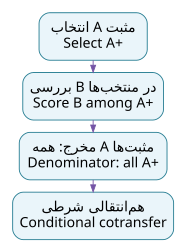
منابع این گام: [R12A7]؛ [R12A10]
۱ — از ۱۲۰ ترانسداکتانت A مثبت،۳۰ مورد B مثبتاند. فراوانی شرطی چیست؟
۲ — در یک سامانه و انتخاب قابل مقایسه، همترانسداکشن بیشتر اغلب چه میگوید؟
۳ — چرا P(B+|A+) لزوماً با P(A+|B+) برابر نیست؟
۱ — گزینه ۳. ۳۰ تقسیم بر۱۲۰ برابر۲۵درصد است؛ مخرج همان جمعیت انتخابشده برای A است.
۲ — گزینه ۱. محدودیت طول قطعه باعث میشود نزدیکی احتمال حمل مشترک را بیشتر کند؛ اشتراک عملکرد از آن نتیجه نمیشود.
۳ — گزینه ۲. احتمال شرطی به جمعیت شرطشده وابسته است؛ نامتقارنی عددی الزاماً نامتقارنی فاصله فیزیکی نیست.
نقشه سهنشانگری امکان میدهد فقط به نزدیکی جفتها اکتفا نکنیم. در یک طرح ساده، دهنده سه آلل مثبت و گیرنده سه آلل منفی دارد و DNA خطی دهنده در کروموزوم حلقوی گیرنده با نوترکیبی تثبیت میشود. اگر دو مرز تبادل یک قطعه پیوسته دهنده را وارد کنند، آللهای میان آن مرزها نیز معمولاً از دهنده خواهند بود. ژنوتیپی که دو نشانگر بیرونی دهنده را دارد ولی نشانگر میانی را از گیرنده نگه داشته، در این مدل به تبادلهای بیشتری نیاز دارد و میتواند نادرتر باشد. این منطق بر توالی ژنها تکیه دارد، نه صرفاً بزرگی عدد هر ستون.
فرضها را روشن کنید: نشانگرها بر بقا و انتخاب اثر نامتقارن شدید ندارند، قطعه دهنده مناسب است، جهش یا تبدیل ژنی پیچیده نادیده گرفته میشود و شمار کلنی کافی است. کمفراوانترین رده همیشه بدون بررسی «کراساور مضاعف» نیست؛ در ادغام باکتریایی باید ابتدا شکل مولکولها و شمار مرزهای لازم را ترسیم کرد. اصطلاحهای نقشه سهنقطهای میوز را بدون تطبیق هندسه نباید منتقل کرد.
دادههای جفتی و سهنشانگری بهتر است یکدیگر را کنترل کنند. اگر در انتخاب A مثبت، رده A مثبت B منفی C مثبت بسیار نادر باشد، قرارگرفتن B میان A و C یک فرض قابلآزمون است. آزمون متقابل با انتخاب دیگر یا تعیین توالی، استنتاج را تقویت میکند. تعداد ردهها، کل شمارش و ژنوتیپ اولیه هر دو والد باید در صورت سؤال مشخص باشند؛ حذف این اطلاعات ممکن است بیش از یک ترتیب را با داده سازگار کند.
دهنده A+B+C+ و گیرنده A−B−C− است. میان A+های منتخب، ردههای B+C+ برابر۶۰، B+C− برابر۳۰، B−C− برابر۹ و B−C+ برابر۱ موردند. در مدل تعویض قطعه پیوسته، کدام ژن میانی محتمل است؟
B میانی محتمل است: داشتن A و C دهنده با حفظ B گیرنده، نسبت به آوردن یک قطعه پیوسته A–B–C به مرزهای بیشتری نیاز دارد. فراوانی کم فقط با فرضهای انتخاب و بقای مشابه قابل تفسیر است.
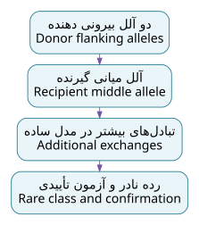
منابع این گام: [R12A10]
۱ — در مدل ساده A–B–C، کدام ژنوتیپ در گیرنده منفی با دو آلل بیرونی دهنده و آلل میانی گیرنده سازگار است؟
۲ — چرا کمتعدادترین رده را بدون کنترل نمیتوان قطعاً به ترتیب ژن نسبت داد؟
۳ — کدام اطلاعات برای تحلیل سهنشانگری ضروریتر است؟
۱ — گزینه ۲. A و C بیرونی مثبت و B میانی منفی است؛ این الگو برای استنتاج نیازمند دانستن والدها و مدل ادغام است.
۲ — گزینه ۳. فراوانی مشاهدهشده علاوه بر هندسه تبادل، به بقای محصول و بازده آشکارسازی وابسته است.
۳ — گزینه ۴. بدون والد و شرط انتخاب، معنای مثبت و منفی و مخرج ردهها روشن نیست و ترتیب یکتا ممکن است به دست نیاید.
حل مسئله نقشهبرداری را با خواندن سازوکار آغاز کنید: آیا زمان ورود در Hfr سنجیده شده، همترانسداکشن یک فاژ اندازهگیری شده یا پایداری قطعه ترانسفورمشده بررسی شده است؟ این دادهها واحد و مخرج یکسان ندارند. زمان ورود جهت یک مسیر انتقال را میدهد؛ همانتقالی احتمال بازیابی مشترک در یک جمعیت انتخابشده را میدهد؛ توالییابی طول فیزیکی را میدهد. تبدیل هرکدام به دیگری به فرضها و کالیبراسیون نیاز دارد. عدد دقیق با روش نامناسب، استنتاج دقیق نمیسازد.
سپس والدها و ضدانتخاب را بنویسید، ژنوتیپهای قابل رشد را مشخص کنید و داده خام را به درصد شرطی تبدیل کنید. در تفسیر جفتهای ژن، مقایسه باید در سامانه و شرایط همسان باشد. اگر در یک فاژ A–B همانتقالی زیادی و A–C همانتقالی کمی دارد، نزدیکی نسبی A و B مطرح است؛ برای تعیین همه ترتیب سه ژن، داده B–C یا آزمایش سهنشانگری هم لازم است. هیچ درصد منفردی بهتنهایی نقشه کامل را تعیین نمیکند.
سرانجام تبیینهای رقیب را بررسی کنید: پلاسمیدیبودن نشانگر، جهش برگشتی، آلودگی دهنده، تفاوت رشد، نقص نوترکیبی، سوگیری بستهبندی و تأخیر فنوتیپی. تکرار زیستی و فاصله اطمینان برای داده کمشمار مهماند؛ یک صفر از ده کلنی با صفر از دههزار کلنی قدرت شاهد یکسان ندارد. نتیجه مطلوب معمولاً یک نقشه کاری با دامنه اعتبار مشخص است. تأیید مستقل با مرزهای توالی و آزمایش متقابل از حفظکردن یک الگوی عددی ارزشمندتر است و پیوند این فصل با روش و استنباط جلد را میسازد.
در انتخاب A، از۱۰ کلنی هیچ C مثبتی دیده نشده؛ پژوهشگر میگوید «انتقال C ناممکن است». اشکال چیست؟
مشاهده صفر در نمونه کوچک فقط فراوانی قابلآشکارسازی را محدود میکند. C شاید جدا منتقل شود یا فراوانی همانتقالی کمتر از توان این نمونه باشد. افزایش نمونه، انتخاب متقابل و کنترل C لازم است.
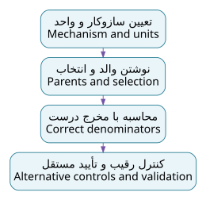
منابع این گام: [R12A7]؛ [R12A10]؛ [R12A6]
۱ — کدام مقایسه بدون فرض اضافی نادرست است؟
۲ — صفر مورد از۱۰ کلنی چه چیزی را ثابت نمیکند؟
۳ — برای رد آلودگی دهنده در شمار نوترکیب، کدام کنترل مستقیمتر است؟
۱ — گزینه ۳. تبدیل دقیقه به جفتباز سرعت انتقال مؤثر را لازم دارد؛ سرعت همانندسازی نیز جایگزین خودکار آن نیست.
۲ — گزینه ۲. صفر مشاهدهشده با فراوانی کم و توان نمونه محدود سازگار است؛ ادعای ناممکنبودن مطلق فراتر از داده است.
۳ — گزینه ۴. کلنی باید هم آلل دهنده و هم زمینه گیرنده را داشته باشد؛ این دو شرط دهنده رشدکرده را جدا میکنند.
• زمان، درصد شرطی و طول فیزیکی را بدون مدل تبدیل نکنید.
• همانتقالی بیشتر در سامانه مقایسهپذیر معمولاً نشان نزدیکی است.
• رده نادر با فرضهای هندسی و بقای محصول تفسیر میشود.
• صفر مشاهدهشده ناممکنبودن مطلق را ثابت نمیکند.
| داده | محاسبه یا تفسیر | فرض لازم |
|---|---|---|
| زمان ورود | اختلاف دو زمان بر حسب دقیقه | دهنده و جهت مشخص؛ آشکارسازی قابل مقایسه |
| همترانسداکشن | دومثبتها تقسیم بر همه منتخبهای نشانگر اول | فاژ، انتخاب و بازیابی یکسان |
| رده سهنشانگری | ترسیم مرزهای تبادل لازم | ژنوتیپ والدها و بقای ردهها مشخص |
| توالی فیزیکی | فاصله بر حسب جفتباز | مرجع و آرایش ژنوم درست |
| عدم مشاهده | محدودیت با توجه به اندازه نمونه | توان نمونه و کنترل بازیابی |
اپرون، واحدی از رونویسی مشترک است؛ یک RNA چندسیسترونی میتواند چند پروتئین بسازد، اما مقدار نهایی هر پروتئین الزاماً برابر نیست. در مدل کلاسیک اشریشیا کلی، LacI به اپراتور متصل میشود و رونویسی lacZYA را محدود میکند. آلولاکتوز القاگر طبیعی است و با تغییر ساختار مهارگر، میل آن به اپراتور را کاهش میدهد. حضور لاکتوز بهتنهایی شرط بیان بیشینه نیست: در کمبود گلوکز، کمپلکس CAP–cAMP جذب پلیمراز را تقویت میکند. پس «رفع مهار» و «فعالسازی» دو ورودی مستقلاند و بیان پایه را نباید با بیان بیشینه یکی دانست.
برای تحلیل نیمهدیپلوئید، ابتدا هر نسخه DNA را جدا بنویسید. جهش lacI منفی، پروتئین مهارگر کارا نمیسازد؛ نسخه سالم lacI میتواند محصول قابل انتشار فراهم کند و اپراتورهای سالم هر دو نسخه را مهار کند. جهش اپراتور lacOᶜ، اتصال مؤثر مهارگر را مختل میکند و فقط ژنهای ساختاری متصل به همان DNA را از این مهار رها میسازد. افزودن lacI سالم، توالی اپراتور جهشیافته را ترمیم نمیکند. جهش پروموتر نیز معمولاً سیساثر است و نباید با نقص مهارگر اشتباه شود.
در پاسخ آزمون، مشخص کنید کدام نسخه lacZ کارا دارد و کدام نسخه فقط مهارگر تولید میکند. ابرمهارگر lacIˢ به القاگر پاسخ مناسب نمیدهد و در حضور اپراتور سالم میتواند در ترانس غالب باشد؛ اما اپراتور مقاوم به اتصال مهارگر، از این مسیر تبعیت نمیکند. این روابط به مدل عملکرد آللها وابستهاند و نام هر جهش جای توصیف دقیق اثر مولکولی آن را نمیگیرد.
در مدل ساده، سلول lacI⁻ O⁺ Z⁺ / lacI⁺ Oᶜ Z⁻ دارد. آیا تولید بتاگالاکتوزیداز در نبود القاگر از نسخه Z⁺ پیوسته است؟
خیر. lacI⁺ مهارگر قابل انتشار میسازد و O⁺ متصل به Z⁺ را مهار میکند. Oᶜ فقط روی همان نسخه Z⁻ اثر دارد و محصول کارای LacZ از آن ساخته نمیشود. پاسخ به ژنوتیپ هر دو نسخه و پیوند اپراتور با ژن کارا وابسته است.
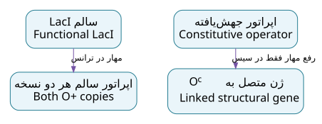
منابع این گام: [R12B1]
۱ — نسخه سالم lacI فنوتیپ lacI⁻ را در نیمهدیپلوئید اصلاح میکند؛ بهترین تفسیر چیست؟
۲ — در سلول دارای Oᶜ متصل به Z⁺، افزایش مهارگر سالم چه اثری بر همان نسخه دارد؟
۳ — در مدل lac سالم با لاکتوز موجود و گلوکز فراوان، چرا بیان معمولاً از حالت کمبود گلوکز کمتر است؟
۱ — گزینه ۱. محصول سالم LacI در محیط سلول منتشر میشود و میتواند اپراتور سالم نسخه دیگر را هم مهار کند؛ پروموتر سیساثر است و آلل ابرمهارگر مانع تعمیم مغلوببودن همه آللهاست.
۲ — گزینه ۲. Oᶜ نقص سیس در اتصال مهارگر است؛ افزودن مهارگر سالم توالی جایگاه را اصلاح نمیکند. این رهایی از مهار، جای فعالسازی CAP را نمیگیرد و مقدار نهایی به زمینه وابسته میماند.
۳ — گزینه ۳. رفع مهار LacI با فعالسازی CAP–cAMP جداست؛ لاکتوز میتواند مهار را کم کند ولی فعالسازی در گلوکز فراوان کمتر باشد. تغییر خروجی به جهش پروموتر نیاز ندارد.
در اپرون ساخت تریپتوفان اشریشیا کلی، دو سطح تنظیم باید جدا تحلیل شوند. تریپتوفان آزاد، هممهارگر TrpR است و اتصال مؤثر آن به ناحیه تنظیمی، آغاز رونویسی را کاهش میدهد. تضعیف یا attenuation بر RNA رهبر عمل میکند و با آغاز رونویسی یکی نیست. این سازوکار از همزمانی رونویسی و ترجمه و از رقابت ساختارهای ثانویه RNA استفاده میکند؛ وضعیت شارژ tRNA تریپتوفان را از راه سرعت ترجمه کدونهای رهبر حس میکند، نه با اتصال مستقیم همان مولکول به یک ریبوسوئیچ متابولیتی.
در کمبود tRNA شارژشده تریپتوفان، ریبوزوم روی کدونهای تریپتوفان ناحیه رهبر مکث میکند. در مدل چهارناحیهای، امکان تشکیل ضدپایاندهنده ۲–۳ افزایش مییابد و تشکیل پایاندهنده ۳–۴ محدود میشود؛ رونویسی ژنهای ساختاری ادامه مییابد. هنگام وفور tRNA شارژشده، ترجمه رهبر پیش میرود و آرایش RNA به سود پایان زودرس تغییر میکند. تشکیل ساختار ۱–۲ در تنظیم مکث اولیه و همگامسازی دو ماشین نیز مهم است؛ نمایش ساده ۲–۳ در برابر ۳–۴، کل پویایی تاخوردن RNA را شرح نمیدهد.
جهش رهبر، جایگاه ریبوزوم یا ساختار ساقه RNA میتواند تضعیف را تغییر دهد، حتی اگر مهارگر سالم باشد. برعکس، حذف TrpR ضرورتاً تنظیم رهبر را حذف نمیکند. این الگو را به همه باکتریها تعمیم ندهید: باسیلوس سوبتیلیس از تنظیم وابسته به TRAP و اجزای متفاوت استفاده میکند. در سؤالهای ترکیبی، سیگنال، سطح اثر و گونه مدل را پیش از انتخاب گزینه مشخص کنید تا اثر هممهارگر با اثر tRNA یا پایاندهنده اشتباه نشود.
در موتانتی که TrpR کارا ندارد ولی RNA رهبر سالم است، افزایش شارژ tRNA تریپتوفان چه اثری میتواند داشته باشد؟
هنوز میتواند فراوانی پایان زودرس در رهبر را افزایش دهد. حذف مهار آغاز، بهتنهایی تضعیف را حذف نمیکند؛ دو لایه ورودی و سازوکار متفاوت دارند. مقدار واقعی RNA پاییندست به هر دو لایه و شرایط رشد وابسته است.
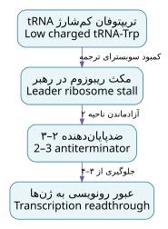
منابع این گام: [R12B1]؛ [R12B2]
۱ — در مدل trp اشریشیا کلی، تشکیل پایدار ساقه ۲–۳ معمولاً کدام پیامد را دارد؟
۲ — کاهش شارژ tRNA تریپتوفان در حالی رخ میدهد که غلظت تریپتوفان آزاد ثابت نگه داشته شده است. کدام لایه مستقیمتر تغییر میکند؟
۳ — کدام گزاره درباره تضعیف trp دقیقتر است؟
۱ — گزینه ۴. ناحیه۳ میان ساختارهای رقیب مشترک است؛ پایداری۲–۳ تشکیل۳–۴ را محدود میکند. این کنترل عبور رونویسی است و با تنظیم آغاز توسط TrpR یکی نیست.
۲ — گزینه ۱. رهبر سرعت ترجمه کدونهای Trp را میخواند و کاهش شارژ tRNA بر آن مستقیمتر اثر دارد. TrpR تریپتوفان آزاد را حس میکند؛ تغییر توالی DNA از داده نتیجه نمیشود.
۳ — گزینه ۲. اشریشیا کلی از ترجمه رهبر و آرایش RNA استفاده میکند؛ باسیلوس سازوکار TRAP دارد. مهار آغاز و پایان زودرس، حتی در یک گونه نیز دو لایه قابل تفکیکاند.
در باکتریها، هسته RNA پلیمراز توان کاتالیز ساخت RNA را دارد، اما انتخاب بسیاری از پروموترها به فاکتور سیگما وابسته است. اتصال سیگما به هسته، هولوآنزیمی میسازد که عناصر پروموتر مناسب را میشناسد. در پروموترهای متعارف وابسته به خانواده σ۷۰، نواحی حدود منفی ده و منفی سیوپنج اهمیت دارند؛ این الگو را نباید قانون همه خانوادههای سیگما دانست. سیگما، سوبسترای نوکلئوتیدی یا آنزیم مستقل ساخت RNA نیست؛ نقش آن در شناسایی و شروع را باید از ادامه کاتالیز جدا کرد.
وجود سیگماهای جایگزین امکان بازتوزیع فعالیت پلیمراز میان گروهی از ژنها را فراهم میکند. یک محرک تنش ممکن است مقدار، پایداری یا دسترسی یک سیگما را تغییر دهد. ضدسیگما با محدودکردن دسترسی به سیگما میتواند همین شبکه را بدون تغییر توالی پروموتر تنظیم کند. رقابت برای هسته پلیمراز نیز مهم است؛ افزایش یک سیگما الزاماً همه رونویسی را افزایش نمیدهد و ممکن است بیان بعضی ژنها را بهطور غیرمستقیم کاهش دهد. مقدار RNA اندازهگیریشده همچنان حاصل تولید و تجزیه است، نه فقط قدرت آغاز.
برای استنباط اختصاصیت، پاسخ پروموترهای مختلف را در زمینه ژنتیکی و شرایط قابل مقایسه بسنجید. کاهش بیان یک ژن پس از حذف سیگما، بهتنهایی اتصال مستقیم سیگما به همان پروموتر را اثبات نمیکند؛ ژن ممکن است پاییندست یک تنظیمکننده دیگر باشد. شناسایی جایگاه آغاز و وابستگی پروموتر شاهد مکملاند. الگوی آرکی متفاوت است و به TBP و TFB وابسته است؛ بیهستهبودن هر دو گروه دلیل یکسانی ماشین آغاز رونویسی نیست.
پس از افزایش سیگمای تنش، RNA ژن A بالا و ژن B پایین میرود. آیا این نتیجه با استفاده از یک هسته مشترک پلیمراز ناسازگار است؟
خیر. تغییر اختصاصیت پروموتر و رقابت برای هسته میتواند بیان گروهها را متفاوت کند. نتیجه بهتنهایی اتصال مستقیم به هر دو پروموتر را ثابت نمیکند؛ پایداری RNA و واسطههای تنظیمی نیز باید بررسی شوند.
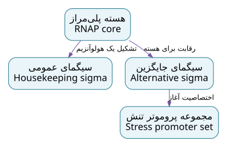
منابع این گام: [R12B3]؛ [R12B9]
۱ — هسته پلیمراز سالم است ولی یک سیگما حذف میشود. کدام پیامد مستقیم محتملتر است؟
۲ — جهش در ناحیه منفی ده یک پروموتر، پاسخ همان ژن را تغییر میدهد. کدام استنباط مجازتر است؟
۳ — پس از حذف سیگما، RNA ژنی کم شده است. کدام ادعا هنوز به شاهد جداگانه نیاز دارد؟
۱ — گزینه ۳. سیگما اختصاصیت آغاز را تعیین میکند؛ حذف یک سیگما میتواند زیرمجموعهای از پروموترها را متاثر کند، بدون اینکه هسته کاتالیزی یا سیگماهای دیگر حذف شده باشند.
۲ — گزینه ۴. تغییر ناحیه پروموتر میتواند آغاز را در سیس عوض کند؛ یک توالی پروموتر جدا، جایگاه معیوب را ترمیم نمیکند. یک نمونه نیز قاعده عمومی همه سیگماها را ثابت نمیکند.
۳ — گزینه ۱. فقط ادعای هدف مستقیم بودن به شواهد پروموتر و آغاز اختصاصی نیاز دارد. تغییر RNA مشاهده شده است، اما مسیر واسطه و تغییر پایداری هنوز توضیحهای مجازند.
سامانه دوجزئی متعارف از یک هیستیدینکیناز حسگر و یک تنظیمکننده پاسخ ساخته میشود. کیناز با دریافت ورودی، از ATP برای خودفسفریلاسیون روی هیستیدین استفاده میکند؛ سپس گروه فسفریل به آسپارتات بخش گیرنده تنظیمکننده پاسخ منتقل میشود. تغییر ساختار پروتئین پاسخ میتواند اتصال به DNA یا خروجی دیگری را عوض کند. بنابراین «دو جزء» تعداد پروتئینهای هسته مدل را بیان میکند، نه اینکه در هر شبکه واقعی فقط دو مولکول یا دو ژن حضور داشته باشد. فسفورلهشدن نیز در همه مثالها به معنی افزایش رونویسی نیست.
بسیاری از حسگرها هم فعالیت کینازی و هم فعالیت فسفاتازی نسبت به شریک خود دارند. خروجی شبکه به موازنه ورود و خروج فسفات بستگی دارد. ازاینرو حذف حسگر میتواند رفتاری متفاوت از جهش صرفاً فاقد فعالیت کینازی ایجاد کند؛ در حالت اول فعالیت فسفاتازی آن نیز حذف میشود. برخی تنظیمکنندهها از دهندههای فسفات دیگر اثر میپذیرند و «حسگر حذف شده» مساوی «تنظیمکننده کاملاً بدون فسفات» نیست. در فسفورلهگردانیهای چندمرحلهای، دامنه گیرنده و پروتئین واسطه نیز به مسیر اضافه میشوند.
جفتشدن اختصاصی پروتئینها به کاهش تداخل شبکهها کمک میکند، ولی صرف شباهت توالی یا مجاورت ژنها، شریک فیزیولوژیک را قطعی نمیکند. برای تحلیل داده، ورودی محرک، وضعیت فسفریلاسیون و خروجی گزارشگر را جدا بنویسید و اثر رشد را کنترل کنید. اگر حذف یک تنظیمکننده خروجی را کاهش دهد، مسیر مستقیم اتصال آن به DNA هنوز نیازمند شاهد است. این رویکرد، سؤالهای حذف ژن را از حفظکردن پیکانهای یک نمودار به استنباط آزمونپذیر تبدیل میکند.
حذف حسگر خروجی گزارشگر را بالا میبرد، اما جهش فاقد فعالیت کینازیِ حسگر خروجی را پایین میآورد. آیا دو نتیجه الزاماً متناقضاند؟
خیر. پروتئین جهشیافته ممکن است هنوز تنظیمکننده پاسخ را دفسفریله کند، درحالیکه حذف کامل این فعالیت را هم از بین میبرد. دریافت فسفات از منبع دیگر و زمینه ژنتیکی باید بررسی شود؛ این تبیین یک فرضیه است و از گزارشگر بهتنهایی اثبات نمیشود.
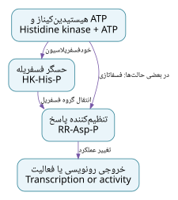
منابع این گام: [R12B4]
۱ — در مسیر دوجزئی متعارف، انتقال فسفریل معمولاً میان کدام دو باقیمانده رخ میدهد؟
۲ — چرا حذف کامل حسگر با حذف فقط فعالیت کینازی آن میتواند متفاوت باشد؟
۳ — دو ژن کنار هم یک هیستیدینکیناز و یک تنظیمکننده را کد میکنند. کدام نتیجه هنوز قطعی نیست؟
۱ — گزینه ۲. مدل متعارف شامل خودفسفریلاسیون His حسگر و انتقال به Asp تنظیمکننده است. مسیرهای چندمرحلهای وجود دارند، اما ترتیب عمومی دادهشده را با الگوی کینازهای سرین/تیروزین نباید عوض کرد.
۲ — گزینه ۳. بسیاری از حسگرها دوکارکردیاند؛ موتانت کینازی ممکن است فسفاتاز را نگه دارد ولی حذف کامل هر دو را بردارد. دهندههای دیگر فسفات هم میتوانند تفاوت فنوتیپ را آشکار کنند.
۳ — گزینه ۴. مجاورت برای نامزدی مفید است و امکان آزمون را فراهم میکند، ولی فعالیت و اختصاصیت جفت در شرایط فیزیولوژیک هنوز از داده ژنومی بهتنهایی قطعی نیست.
• پروموتر و اپراتور جایگاه DNA و سیساثرند؛ مهارگر قابل انتشار میتواند ترانساثر باشد.
• رفع مهار lac با فعالسازی CAP یکسان نیست؛ بیان زیاد معمولاً به هر دو شرط نیاز دارد.
• مهار آغاز trp مقدار تریپتوفان و تضعیف آن وضعیت ترجمه رهبر را میسنجد.
• سیگما انتخاب پروموتر و تنظیم دوجزئی انتقال پیام را به شبکه بیان پیوند میدهند.
| سازوکار | ورودی غالب در مدل | اثر مستقیم |
|---|---|---|
| lacI–lacO | آلولاکتوز | کاهش اتصال مهارگر به اپراتور |
| CAP–cAMP | وضعیت کربن و cAMP | تقویت جذب پلیمراز |
| تضعیف trp در E. coli | دسترسی tRNA شارژشده تریپتوفان | انتخاب ساختار RNA رهبر |
| تنظیم دوجزئی متعارف | محرک و نسبت فعالیت کیناز/فسفاتاز | تغییر فسفریلاسیون تنظیمکننده پاسخ |
RNA کوچک تنظیمی یا sRNA معمولاً بدون نیاز به ترجمه یک پروتئین جدید، پیام تنظیمی را به RNA یا پروتئین هدف منتقل میکند. یک گروه با جفتشدن بازها در نزدیکی جایگاه اتصال ریبوزوم، شروع ترجمه را محدود میکنند؛ گروهی دیگر ساختار مهارکننده RNA را باز میکنند و ترجمه افزایش مییابد. این تغییر ممکن است با تغییر پایداری RNA همراه باشد. بنابراین کاهش پروتئین را نباید همیشه به کاهش رونویسی نسبت داد و وجود sRNA نیز بهتنهایی جهت اثر را مشخص نمیکند. برخی RNAها علاوه بر نقش تنظیمی، پپتید هم کد میکنند.
آنتیسنس سیس از رشته مقابل همان جایگاه ژنی منشأ میگیرد و اغلب مکملبودن گستردهای با هدف دارد. sRNA ترانساثر در جایگاهی جدا ساخته میشود و معمولاً با ناحیه کوتاهتری از یک یا چند هدف جفت میشود. این تمایز درباره منشأ و نحوه عمل است؛ «ترانساثر» بودن به معنی پروتئینی بودن عامل نیست. در بسیاری از سامانههای مطالعهشده، Hfq یا ProQ جفتشدن و پایداری را تسهیل میکنند، ولی هیچکدام شرط عمومی همه RNAهای تنظیمی همه باکتریها نیستند.
برای آزمودن مدل تماس مستقیم، تغییر یک باز در sRNA یا هدف و سپس تغییر جبرانی در شریک مقابل، از تغییر بیان تنها قویتر است. بازیابی تنظیم با احیای مکملبودن، مدل جفتشدن را تقویت میکند، مشروط بر اینکه مقدار و ساختار هر RNA کنترل شده باشد. حذف Hfq ممکن است چندین مسیر را تغییر دهد؛ از چنین فنوتیپی نمیتوان یک برهمکنش اختصاصی واحد را نتیجه گرفت. این منطق به تحلیل شبکههای تنظیمی و به نقد نمودارهایی که تنها همبستگی RNAها را نشان میدهند کمک میکند.
تغییر یک باز در ناحیه تماس sRNA تنظیم را از بین میبرد؛ تغییر مکمل در RNA هدف تنظیم را بازمیگرداند. چه نتیجهای تقویت میشود؟
وابستگی تنظیم به جفتشدن دو RNA تقویت میشود. تغییر جبرانی از مشاهده همزمانی بیان قویتر است، اما برای حذف توضیحهای جایگزین باید مقدار RNAها، ساختار و اثر تغییر هدف بر ترجمه پایه هم بررسی شود.
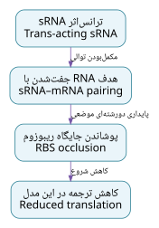
منابع این گام: [R12B5]
۱ — افزایش sRNA با افزایش پروتئین هدف همراه است. کدام مدل مولکولی ممکن است؟
۲ — کدام داده از مدل جفتشدن اختصاصی دو RNA بیشترین پشتیبانی را میکند؟
۳ — sRNA از جایگاه ژنی جدا با سه RNA هدف جفت میشود. کدام توصیف مناسبتر است؟
۱ — گزینه ۱. sRNA میتواند با بازکردن ساختار پوشاننده جایگاه ریبوزوم فعالکننده باشد. جهت اثر از نام sRNA معلوم نمیشود؛ نقش شاپرون نیز با کاتالیز ترجمه یا ضرورت عمومی یکسان نیست.
۲ — گزینه ۲. الگوی تخریب تماس و بازیابی با تغییر جبرانی، اختصاصیتر از همبستگی یا فنوتیپ یک شاپرون جهانی است؛ بااینحال مقدار و تاخوردن RNAها باید کنترل شوند.
۳ — گزینه ۳. منشأ جدا و عمل روی چند RNA با sRNA ترانساثر سازگار است. ترانساثر بودن محدود به پروتئین نیست؛ آنتیسنس سیس به منشأ مقابل همان جایگاه مربوط است.
ریبوسوئیچ متابولیتی، قطعهای از RNA تنظیمی است که دامنه آپتامر آن به لیگاند مشخص متصل میشود. این اتصال میتواند تعادل یا مسیر تاخوردن RNA را تغییر دهد و از راه سکوی بیان، بر پایان رونویسی یا دسترسی ریبوزوم اثر بگذارد. در نمونههای باکتریایی، جایگاه آن اغلب در بخش ترجمهنشده انتهای پنجپرایم است. لیگاند لزوماً محصول مستقیم ژن پاییندست نیست و همه ریبوسوئیچها در حضور لیگاند خاموش نمیشوند؛ جهت پاسخ باید از ساختار و داده همان سامانه معلوم شود. وجود یک ساقه RNA بهتنهایی شناسایی ریبوسوئیچ نیست.
آپتامر و سکوی بیان دو نقش متفاوت دارند. جهشی که اتصال لیگاند را مختل میکند ممکن است پاسخ به غلظت را حذف کند، درحالیکه جهش دیگری بدون تغییر اتصال، حالت سکوی بیان را قفل کند. به همین دلیل نبود پاسخ، فقط یک توضیح ندارد. در برخی سامانهها، سرعت رونویسی و فرصت تاخوردن همزمان با ساخت RNA اهمیت دارند؛ ثابت اتصال اندازهگیریشده در تعادل همیشه آستانه پاسخ داخل سلول را بهتنهایی پیشبینی نمیکند. غلظت آزاد لیگاند نیز با مقدار کل آن یکسان نیست.
ریبوسوئیچِ حسکننده مستقیم متابولیت را از تضعیف trp اشریشیا کلی، که به ترجمه رهبر وابسته است، جدا کنید. همچنین در تنظیم T-box، وضعیت tRNA میتواند ورودی باشد و حسگر همان متابولیت آزاد نیست. برای استناد مستقیم، اتصال RNA به لیگاند و پیامد آن بر خروجی باید جداگانه پشتیبانی شوند. این تفکیک کمک میکند تغییر بیان ناشی از تغییر متابولیسم عمومی را اشتباهاً شاهد اتصال مستقیم لیگاند به RNA ننامیم.
جهش A اتصال لیگاند را از بین میبرد؛ جهش B اتصال را حفظ میکند ولی جایگاه اتصال ریبوزوم را همیشه بسته نگه میدارد. تفاوت دو نقص چیست؟
نقص A با حسگری آپتامر سازگار است و نقص B با انتقال پیام یا ساختار سکوی بیان. یکسانشدن خروجی نهایی نمیگوید دو جهش در یک مرحله اثر کردهاند؛ مقدار RNA و سلامت کلی تاخوردن باید کنترل شود.
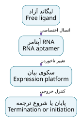
منابع این گام: [R12B5]
۱ — ریبوسوئیچ با اتصال مستقیم لیگاند از کدام سازوکار متمایز است؟
۲ — آپتامر سالم است ولی جهش سکوی بیان پاسخ خروجی را ثابت کرده است. کدام نتیجه دقیقتر است؟
۳ — در یک RNA، اتصال لیگاند در لوله آزمایش دیده میشود. کدام ادعا هنوز نیازمند شاهد است؟
۱ — گزینه ۴. تمایز کلیدی، اتصال مستقیم RNA به متابولیت در برابر خواندن وضعیت tRNA از راه ترجمه رهبر است؛ تغییر ساختار و پایان زودرس میتوانند در هر دو سازوکار دیده شوند.
۲ — گزینه ۱. آپتامر میتواند لیگاند را بشناسد ولی سکوی بیان قفلشده نتواند خروجی را عوض کند. بنابراین حسگری و اجرای پاسخ دو مرحلهاند و نبود پاسخ، نبود اتصال را اثبات نمیکند.
۳ — گزینه ۲. فقط تنظیم فیزیولوژیک ژن پاییندست هنوز از اتصال لولهآزمایشی نتیجه نمیشود؛ مقدار آزاد لیگاند، سلامت سازه و تغییر واقعی خروجی باید بررسی شوند.
فراوانی RNA پیامرسان تصویری از موازنه است، نه اندازه مستقیم سرعت رونویسی. در مدل ساده، اگر نرخ ساخت s و ثابت تجزیه مرتبه اول k باشد، تغییر مقدار RNA با رابطه dM/dt = s − kM توصیف میشود. در حالت پایا و بدون سهم رقیقشدن ناشی از رشد، M = s/k است. بنابراین دو برابر شدن RNA ممکن است از افزایش ساخت، کاهش تجزیه یا ترکیبی از آن دو پدید آید. در سلول در حال رشد، حذف مؤثر سهم رقیقشدن را هم دارد و فرض حذف این سهم باید صریح باشد.
RNaseها، ساختار ثانویه، اشغال RNA با ریبوزوم و پروتئینهای همراه میتوانند دسترسی به محلهای برش را تغییر دهند. جفتشدن sRNA گاهی تجزیه را تسریع و گاهی هدف را پایدار میکند. یک عدد ثابت برای نیمهعمر همه RNAهای پروکاریوتی وجود ندارد. مقایسه گونه، شرایط تنش یا مراحل رشد بدون توجه به این تفاوتها گمراهکننده است. برای یک تجزیه نمایی ساده، نیمهعمر برابر ln2/k است؛ این رابطه فقط وقتی درست است که ثابت سرعت در بازه بررسی تقریباً ثابت بماند.
در تحلیل زمانمند، شکل منحنی کاهش را بررسی کنید. چند جمعیت RNA، پردازش واسطهای یا تغییر رشد میتواند افت چندمرحلهای ایجاد کند و مدل یکنمایی را نامناسب سازد. همچنین آزمونی که فقط قطعهای کوتاه از RNA را میشناسد ممکن است قطعه تخریبشده را هم بشمارد؛ حضور سیگنال همیشه به معنی RNA کامل قابل ترجمه نیست. پیوند اندازهگیری RNA با سنجش پروتئین و گزارشگر مناسب، تفسیر تنظیم پسارونویسی را استوارتر میکند.
در مدل پایا بدون رقیقشدن رشد، s = ۴۰ مولکول در دقیقه و k = ۰٫۲ بر دقیقه است. اگر k نصف شود و s ثابت بماند، M چه میشود؟
M آغازین ۴۰/۰٫۲ = ۲۰۰ مولکول و M جدید ۴۰/۰٫۱ = ۴۰۰ مولکول است. افزایش دوبرابری الزاماً افزایش آغاز رونویسی نیست. این حساب فرض میکند جمعیت همگن، تجزیه مرتبه اول و حالت پایا برقرار است.
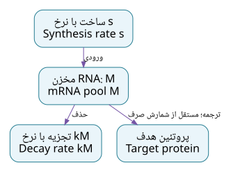
منابع این گام: [R12B5]؛ [R12B14]
۱ — مقدار پایای RNA دو برابر شده ولی نرخ ساخت ثابت است؛ در مدل تکنمایی بدون رشد کدام تغییر کافی است؟
۲ — نیمهعمر یک RNA در مدل مرتبه اول ۲ دقیقه است. پس از ۶ دقیقه بدون ساخت جدید، چه سهمی میماند؟
۳ — آزمون یک قطعه کوتاه RNA را آشکار کرده است. کدام نتیجه بهتنهایی مجاز نیست؟
۱ — گزینه ۳. در مدل M=s/k، نصفشدن k با s ثابت مقدار پایا را دو برابر میکند. افزایش k یا کاهش s جهت مخالف دارد؛ تغییر متناسب هر دو میتواند M را ثابت نگه دارد.
۲ — گزینه ۴. سه نیمهعمر طی شده است، پس سهم باقیمانده (۱/۲)³ یعنی یکهشتم است. یکچهارم برای دو نیمهعمر و یکشانزدهم برای چهار نیمهعمر خواهد بود.
۳ — گزینه ۱. آزمون موضعی تنها حضور ناحیه هدف را پشتیبانی میکند؛ همه سیگنال الزاماً از RNA کامل قابل ترجمه نیست. بررسی اندازه و پیوستگی برای ادعای کاملبودن لازم است.
پاسخ سختگیرانه، بازآرایی هماهنگ فیزیولوژی باکتری در برابر کمبود منابع و تنش است. آلارمونهای ppGpp و pppGpp را بهطور جمعی (p)ppGpp مینامند؛ این نام شامل دو نوکلئوتید مرتبط است، نه یک پروتئین یا یک RNA کوچک. در مدل اشریشیا کلی، RelA با وضعیت ریبوزوم و tRNA بدون اسیدآمینه در شرایط کمبود پیوند دارد و ساخت آلارمون را افزایش میدهد. SpoT در کنترل موازنه ساخت و هیدرولیز آن نقش دارد. اعضای خانواده RelA/SpoT و تعداد آنها میان باکتریها متفاوتاند؛ نامهای دو پروتئین این مدل، فهرست عمومی همه گونهها نیست.
انباشت آلارمون میتواند تولید rRNA و سرمایهگذاری در ساخت ریبوزوم را کاهش دهد و بیان مسیرهای سازگار با کمبود را بازتنظیم کند. در اشریشیا کلی، اثر بر RNA پلیمراز و همکاری با عوامل تنظیمی از جمله DksA اهمیت دارد. در باکتریهایی مانند باسیلوس سوبتیلیس، تغییر مخزن GTP و متابولیسم نوکلئوتیدها مسیر عمده دیگری است؛ پس خروجی مشابه لزوماً به معنی هدف مولکولی مستقیم یکسان نیست. کاهش رشد پیامد شبکهای است و نباید تمام اثرها را با خاموشی عمومی سلول توضیح داد.
وجود مقدار پایه آلارمون در رشد عادی نیز مهم است؛ پاسخ، کلیدی کاملاً صفر و یک نیست. برای تحلیل داده، مقدار آلارمون، رشد و تغییر ژنها را از هم جدا کنید. کاهش RNA ریبوزومی پس از تنش، بهتنهایی افزایش (p)ppGpp را اثبات نمیکند و بهتنهایی مقاومت ژنتیکی به دارو را هم نشان نمیدهد. تحمل گذرا و حالتهای کمرشد باید از مقاومت ارثی و تغییر هدف دارویی تفکیک شوند؛ این تفاوت در سؤالهای ترکیبی تنظیم، فیزیولوژی و تکامل تعیینکننده است.
دو گونه پس از تنش، rRNA کمتری میسازند. در اولی اتصال آلارمون به پلیمراز و در دومی کاهش GTP غالب است. آیا لازم است یکی از دو مشاهده غلط باشد؟
خیر. بازتخصیص منابع میتواند از مسیرهای مولکولی متفاوت حاصل شود. باید ادعا را به همان گونه و شرایط محدود کرد؛ شباهت خروجی، یگانگی هدف مستقیم را ثابت نمیکند.
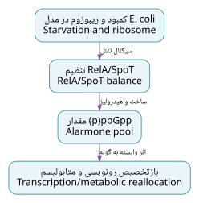
منابع این گام: [R12B6]
۱ — کدام توصیف (p)ppGpp درستتر است؟
۲ — چرا کاهش rRNA در دو گونه لزوماً هدف مستقیم یکسانی را نشان نمیدهد؟
۳ — پس از تنش، رشد و rRNA کاهش یافتهاند. کدام نتیجه هنوز نیازمند داده است؟
۱ — گزینه ۲. ppGpp و pppGpp پیامرسان نوکلئوتیدیاند؛ RelA/SpoT پروتئینهای تنظیمکننده مقدار آنها هستند. آلارمون را نباید با عامل پروتئینی یا جایگاه DNA اشتباه گرفت.
۲ — گزینه ۳. مسیر مستقیم پلیمراز و مسیر غیرمستقیم مخزن GTP در گونهها سهم متفاوت دارند. شباهت خروجی، یکسانی هدف مستقیم یا آرایش ژنهای پاسخ را ثابت نمیکند.
۳ — گزینه ۴. افزایش آلارمون باید با داده مربوط به خود واسطه پشتیبانی شود؛ کاهش rRNA و رشد خروجیهای عمومیتری هستند و بهتنهایی مسیر خاص یا مقاومت ژنتیکی را ثابت نمیکنند.
• RNA تنظیمی میتواند ترجمه یا پایداری هدف را افزایش یا کاهش دهد؛ sRNA همیشه مهارگر نیست.
• ریبوسوئیچ متابولیتی، لیگاند را با دامنه آپتامر RNA حس میکند؛ تضعیف ریبوزومی سازوکار دیگری است.
• فراوانی RNA حاصل موازنه ساخت و حذف است؛ اندازهگیری یک نقطه زمانی نرخ آغاز را تعیین نمیکند.
• پاسخ سختگیرانه بازتخصیص منابع است و جزئیات مولکولی آن بین گونهها تفاوت دارد.
| لایه تنظیم | جزء حسگر یا واسطه | خوانش مناسب |
|---|---|---|
| sRNA | جفتشدن با هدف یا اتصال به پروتئین | ترجمه و طول عمر RNA هدف |
| ریبوسوئیچ | آپتامر RNA | عبور رونویسی یا دسترسی جایگاه ریبوزوم |
| تجزیه RNA | RNase و ساختار/پروتئین همراه | کاهش RNA در زمان |
| پاسخ سختگیرانه | (p)ppGpp و شبکه وابسته به گونه | بیان rRNA، متابولیسم و رشد |
توالی درجشونده یا IS، در مدل ساده یک عنصر DNA حامل اطلاعات لازم برای جابهجایی خود، از جمله ترانسپوزاز و انتهای شناساییشونده، است. ترانسپوزونها میتوانند ژنهای همراهی فراتر از ماشین جابهجایی داشته باشند. در ترانسپوزون مرکب، دو IS ممکن است قطعه میان خود را همراه جابهجا کنند. واژه «متحرک» در این بحث نخست به جابهجایی جایگاه DNA اشاره میکند؛ عبور از یک سلول به سلول دیگر ضرورتاً با همان ترانسپوزاز انجام نمیشود. اتصال عنصر به پلاسمید انتقالپذیر میتواند دو مقیاس حرکت را به هم پیوند دهد.
در مسیرهای غیرتکثیری، یک نسخه از محل قبلی به محل جدید میرود؛ در مسیرهای تکثیری، نسخهای جدید در مقصد حاصل میشود و شمار نسخه میتواند افزایش یابد. جزئیات این مسیرها و حل واسطهها به خانواده عنصر وابسته است. انتهای تکرار معکوس عنصر را با تکرار مستقیم کوتاه محل هدف اشتباه نگیرید: اولی بخشی از معماری عنصر است؛ دومی در بسیاری از رخدادها از برش پلکانی و پرشدن فاصله در DNA میزبان حاصل میشود. هر تکرار مستقیم بهتنهایی اثباتکننده یک عنصر خاص نیست.
درج عنصر ممکن است ژن را قطع کند، پروموتر تازه بیاورد یا بیان پاییندست اپرون را تغییر دهد. بنابراین فنوتیپ درج همیشه فقط فقدان پروتئین ژن محل درج نیست. اگر چند موتانت مستقل در نواحی متفاوت یک مسیر یافت شوند، جایگاهها و اثر قطبی را مقایسه کنید. صرف وجود نسخههای فراوان یک عنصر، نرخ حرکت کنونی را نشان نمیدهد؛ فراوانی حاصل تاریخ تکثیر، انتخاب و حذف نیز هست. این تمایز برای تعبیر نقشه ژنوم و آزمایش غربال ضروری است.
عنصری با تکرار معکوس در دو انتها، پس از درج با یک تکرار مستقیم پنججفتبازی از DNA هدف احاطه شده است. منشأ دو نوع تکرار چه تفاوتی دارد؟
تکرارهای معکوس، انتهای خود عنصر و محل شناسایی ماشین جابهجاییاند؛ تکرار مستقیم هدف میتواند از فرایند درج پلکانی و ترمیم فاصله حاصل شده باشد. طول پنج جفتباز ویژگی صورت مسئله است و نباید برای همه خانوادهها تعمیم یابد.
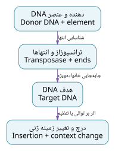
منابع این گام: [R12B7]؛ [R12B12]
۱ — کدام داده بهتنهایی انتقال عنصر میان دو سلول را ثابت نمیکند؟
۲ — تکرار مستقیم کوتاه دو سوی یک درج معمولاً با کدام فرایند سازگار است؟
۳ — درج ترانسپوزون در ژن اول اپرون، پروتئین ژن سوم را نیز کم میکند. کدام احتمال باید بررسی شود؟
۱ — گزینه ۱. تغییر جایگاه در یک دودمان فقط حرکت در DNA را نشان میدهد؛ شواهد گیرنده و حامل میتوانند سطح انتقال بین سلولها را پشتیبانی کنند. دو مقیاس حرکت باید جدا شوند.
۲ — گزینه ۲. تکرار مستقیم هدف در بسیاری از مسیرها از پرشدن فاصله درج پلکانی پدید میآید؛ با تکرار معکوس انتهای عنصر متفاوت است و مبدأ یا پروموتر را بهتنهایی تعیین نمیکند.
۳ — گزینه ۳. درج میتواند رونویسی یا ترجمه پاییندست را عوض کند. اثر قطبی باید پیش از نسبتدادن فنوتیپ به برهمکنش مستقیم دو محصول یا محتوای عنصر بررسی شود.
اینتگرون، سکویی برای گرفتن، آرایش و بیان کاستهای ژنی است. سه جزء محوری آن، ژن اینتگراز intI، جایگاه بازترکیبی attI و پروموتر کاستها Pc هستند. کاست ورودی معمولاً یک ناحیه کدکننده و جایگاه attC دارد؛ وجود شکل حلقوی کاست به معنی داشتن مبدأ همانندسازی مستقل نیست. اینتگراز، نوترکیبی اختصاصی جایگاه میان اجزای مناسب را کاتالیز میکند. در نتیجه، کاستی که پروموتر مؤثر مستقل ندارد میتواند پس از قرارگرفتن در آرایه، از پروموتر سکو بیان شود. بعضی کاستها پروموتر داخلی یا معماری متفاوت دارند.
جابهجایی و ترتیب کاستها میتواند مقدار بیان را تغییر دهد، زیرا فاصله و زمینه نسبت به پروموتر، پایاندهندهها و ساختار RNA اهمیت دارند. بااینحال «نزدیکترین کاست همیشه قویترین است» قانون مطلق نیست؛ جزئیات توالی و معماری را باید سنجید. کاست مقاومت فقط یکی از انواع محتوای اینتگرون است و وجود intI بهخودیخود مقاومت فنوتیپی را اثبات نمیکند. تحلیل توالی باید همراه با اطلاعات بیان و کارکرد ژن انجام شود تا ظرفیت ژنتیکی با صفت مشاهدهشده اشتباه نشود.
اینتگرون بهخودیخود عنصر خودمتحرک یا دستگاه کونژوگاسیون نیست. حضور آن روی ترانسپوزون یا پلاسمید میتواند جابهجایی بزرگتر و انتشار بین سلولها را ممکن کند. بنابراین هنگام ردیابی یک ژن، سه لایه «کاست»، «سکوی اینتگرون» و «حامل متحرک» را جدا نام ببرید. حذف intI ممکن است گرفتن و بازآرایی تازه را کم کند، بدون اینکه لزوماً بیان همه کاستهای از قبل مستقر را خاموش کند؛ این دو کارکرد به اجزای متفاوت وابستهاند و محل جهش باید دقیق مشخص شود.
پس از ازکارافتادن intI، کاستِ از قبل مستقر هنوز بیان میشود، ولی گرفتن کاست جدید کاهش یافته است. آیا تناقضی وجود دارد؟
خیر. IntI بازترکیبی و گرفتن کاست را میانجیگری میکند، درحالیکه بیان کاست مستقر میتواند از Pc ادامه یابد. این استنباط فرض میکند جهش intI پروموتر Pc یا ساختار آرایه را مختل نکرده باشد.
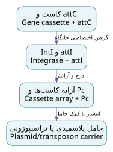
منابع این گام: [R12B8]
۱ — کدام جزء اینتگرون مستقیماً بازترکیبی گرفتن کاست را میانجیگری میکند؟
۲ — وجود اینتگرون در یک کروموزوم کدام ویژگی را بهتنهایی ثابت نمیکند؟
۳ — کاستی حلقوی فاقد مبدأ همانندسازی مشخص شناسایی شده است. کدام نتیجه درستتر است؟
۱ — گزینه ۴. IntI آنزیم کاتالیز نوترکیبی است؛ Pc و attI توالیهای دارای کارکرد متفاوتاند. ماشین کونژوگاسیون از اجزای الزامی هسته اینتگرون نیست.
۲ — گزینه ۱. اینتگرون خود دستگاه انتقال سلولی ندارد؛ تعیین خودانتقالپذیری به حامل و ماشین انتقال وابسته است. وجود سکوی کاست، آن ویژگی را بهتنهایی ثابت نمیکند.
۳ — گزینه ۲. حلقویبودن شکل مولکول است؛ استقلال همانندسازی به اجزای رپلیکون نیاز دارد. attC جایگاه بازترکیبی است و بسیاری از کاستها برای بیان به پروموتر سکو متکیاند.
پلاسمید یک رپلیکون است که میتواند مجموعهای از ژنهای سازگاری را در یک حامل نگه دارد. «پلاسمید مقاومت» بر اساس ژنهای همراه نامیده میشود، اما همه این پلاسمیدها الزاماً ماشین کامل انتقال کونژوگاتیو ندارند. بعضی خودانتقالپذیرند، بعضی با کمک عنصر دیگر بسیج میشوند و بعضی در شرایط بررسیشده انتقالپذیر نیستند. پس یافتن ژن مقاومت روی DNA خارجکروموزومی بهتنهایی نرخ انتقال، دامنه میزبان یا پایداری آن را تعیین نمیکند. هرکدام از این ویژگیها پرسش ژنتیکی و شاهد مستقل خود را دارد.
قرارگرفتن چند ژن روی یک پلاسمید میتواند همانتخابی ایجاد کند: انتخاب برای یک صفت، حامل و در نتیجه ژن همراه را نیز نگه میدارد. این پیوند با مقاومت متقاطع فرق دارد؛ در مقاومت متقاطع، یک سازوکار ممکن است بر چند عامل اثر کند، ولی در همانتخابی، حتی ژنهای با کارکرد متفاوت میتوانند بهسبب پیوند فیزیکی همراه حفظ شوند. پیوند میتواند با بازآرایی یا ترانسپوزیسیون تغییر کند و نباید از همزمانی دو صفت در چند جدایه، همحاملی روی یک مولکول را قطعی دانست.
بیان مقاومت به توالی کارا، پروموتر، دوز ژن و زمینه میزبان وابسته است. انتقال موفق DNA، نگهداری در نسلهای بعد و بروز فنوتیپ سه مرحله جدا هستند. همچنین وجود یک توالی مشابه ژن مقاومت، بدون بررسی عملکرد، همیشه آستانه مقاومت فنوتیپی را پیشبینی نمیکند. برای تفسیر ردیابی ژنتیکی، از داده توالی تا بیان و صفت پیش بروید و سطح هر ادعا را روشن نگه دارید. این چارچوب از تبدیل یک مشاهده ژنومی به نتیجه قطعی درباره رفتار جمعیت جلوگیری میکند.
ژنهای صفت A و صفت B روی یک پلاسمید واحد قرار دارند. انتخاب فقط برای A، فراوانی B را نیز بالا میبرد. چه تبیینی پیش از ادعای اثر مستقیم A بر B مطرح است؟
همانتخابی ناشی از پیوند ژنتیکی: حفظ پلاسمید بهدلیل A، ژن B را نیز همراه نگه میدارد. این نتیجه اثر مولکولی مستقیم محصول A بر صفت B یا مقاومت متقاطع را ثابت نمیکند.
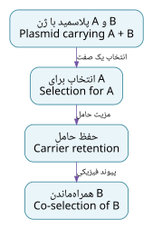
منابع این گام: [R12B7]؛ [R12B13]
۱ — پلاسمیدی ژن مقاومت دارد ولی ژنهای کامل انتقال در آن دیده نمیشود. کدام نتیجه مناسبتر است؟
۲ — انتخاب برای صفت فلزی، ژن مقاومت داروییِ مجاور را حفظ میکند. این پدیده بیشتر نمونه چیست؟
۳ — ژن وارد گیرنده شده ولی در نسلهای بعد از دست میرود. کدام دو مرحله را باید تفکیک کرد؟
۱ — گزینه ۳. حمل ژن مقاومت، دستگاه کامل انتقال را ایجاب نمیکند. برخی حاملها بسیجپذیر یا در شرایط خاص انتقالناپذیرند؛ بیان نیز پرسشی جدا از انتقال است.
۲ — گزینه ۴. پیوند روی حامل میتواند صفات متفاوت را با هم نگه دارد؛ این همانتخابی، یکسانی سازوکار یا پروموتر دو ژن و ایجاد هدفمند آنها را ثابت نمیکند.
۳ — گزینه ۱. ورود موفق DNA با تکثیر، تفکیک و نگهداری در نسلهای بعد یکسان نیست؛ همچنین دریافت ژن بهتنهایی بروز صفت را تضمین نمیکند.
سازگاری نسبی، موفقیت تولیدمثل یک ژنوتیپ را در مقایسه با مرجع و در محیط مشخص بیان میکند. حمل پلاسمید یا ژن مقاومت ممکن است هزینه داشته باشد، اما اندازه و حتی جهت اثر به میزبان، محیط و محتوای حامل وابسته است. انرژی همانندسازی DNA تنها منبع هزینه نیست؛ بیان ژنها، برهمکنش پروتئینها و تداخل تنظیمی میتوانند سهم داشته باشند. بنابراین شمار جفتباز یا تعداد نسخه پلاسمید بهتنهایی برای پیشبینی هزینه همه ترکیبها کافی نیست. مقایسه باید بر زمینههای ژنتیکی قابل مقایسه و تعریف روشن کمیت تکیه کند.
جهش جبرانی میتواند هزینه را کاهش دهد، درحالیکه ژن مقاومت و فنوتیپ آن حفظ شده است. این حالت با برگشت جهش مقاومت به حالت حساس تفاوت دارد. انتخاب برای صفات دیگر، انتقال افقی، تفکیک پایدار و جبران هزینه میتوانند پس از برداشتن فشار انتخاب اولیه به حفظ حامل کمک کنند. هیچیک به معنی پایداری همیشگی همه پلاسمیدها نیست. همچنین افزایش فراوانی پلاسمید در جمعیت لزوماً افزایش سازگاری عمودی میزبان را نشان نمیدهد؛ انتشار افقی خودِ عنصر میتواند سهم داشته باشد.
در داده رقابت، نسبت اولیه و نهایی، مدت و تعداد نسلها را ثبت کنید. مقایسه خام فراوانیها بدون توجه به شروع آزمایش میتواند اشتباه باشد. اگر فقط نسبت نهایی حامل به بدون حامل کمتر است، برای کمیسازی هزینه در هر نسل باید مدل و مقیاس زمانی روشن شود. تکرار مستقل، اثر نشانگر و شرایط محیطی نیز اهمیت دارند. هدف آزمونی، شناخت این است که «کاهش مصرف دارو»، «کاهش هزینه» و «حذف ژن مقاومت» سه ادعای متفاوتاند و از یک مشاهده واحد بهطور خودکار نتیجه نمیشوند.
در یک مدل بدون انتقال افقی، نسبت حامل به بدون حامل از ۱ به ۰٫۸ طی یک بازه یکسان میرسد؛ پس از تکامل جبرانی از ۱ به ۰٫۹۸ میرسد و ژن مقاومت باقی است. چه میتوان گفت؟
افت نسبی حامل در همان بازه و محیط کمتر شده و با کاهش هزینه سازگار است. این نسبتها بهتنهایی هزینه بهازای هر نسل را نمیدهند؛ تعداد نسلها و مدل رشد لازم است. حفظ ژن مقاومت نشان میدهد جبران الزاماً برگشت به حساسیت نیست.
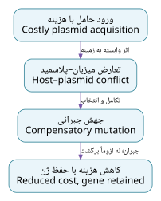
منابع این گام: [R12B13]
۱ — موتانت جبرانی سریعتر رشد میکند ولی مقاومت حفظ شده است. کدام نتیجه درستتر است؟
۲ — چرا فراوانی یک پلاسمید پرهزینه میتواند در جمعیت افزایش یابد؟
۳ — برای مقایسه هزینه دو پلاسمید، کدام طراحی تفسیرپذیرتر است؟
۱ — گزینه ۲. جهش جبرانی میتواند تعارض جانبی را کاهش دهد و مقاومت باقی بماند. برای ادعای برگشت ژن یا خروج حامل باید داده مستقیم داشت؛ هزینه نیز به زمینه وابسته است.
۲ — گزینه ۳. افزایش گیرندگان تازه میتواند افت عمودی حامل را جبران کند. بنابراین سازگاری میزبان و موفقیت انتشار عنصر یک کمیت واحد نیستند و به مدل جمعیتی نیاز دارند.
۳ — گزینه ۴. کنترل میزبان، محیط و نشانگر، توضیحهای جایگزین را محدود میکند. طول DNA یا نسبت نهایی تنها، اندازه هزینه را تعیین نمیکند و زمینه باید یکسان باشد.
• ترانسپوزیسیون جابهجایی میان جایگاههای DNA است؛ انتقال میان سلولها مسیر جدا میخواهد.
• اینتگرون سامانه گرفتن و بیان کاست است و بهخودیخود دستگاه انتقال سلولی ندارد.
• قرارگرفتن ژن روی پلاسمید با خودانتقالپذیری یا بیان کارای آن یکسان نیست.
• هزینه سازشی به ترکیب میزبان–پلاسمید و محیط وابسته است؛ جبران هزینه با برگشت جهش یکی نیست.
| عنصر | کارکرد شاخص | حد تعمیم |
|---|---|---|
| توالی درجشونده IS | ترانسپوزاز و جابهجایی قطعه | لزوم حمل ژن مقاومت ندارد |
| ترانسپوزون | جابهجایی DNA و گاه ژن همراه | همه از نوع برشوچسباندن نیستند |
| اینتگرون | گرفتن و آرایش کاست با IntI/attI/attC | خودبهخود خودانتقالپذیر نیست |
| پلاسمید | نگهداری یک رپلیکون و ژنهای همراه | همه پلاسمیدها کونژوگاتیو نیستند |
سامانه محدودسازی–اصلاح متعارف، اختصاصیت توالی را با وضعیت شیمیایی DNA پیوند میدهد. در یک مدل ساده، اندونوکلئاز محدودکننده توالی مشخصی را در DNA فاقد اصلاح محافظ میبُرد و متیلترانسفراز متناظر همان جایگاه را در DNA میزبان اصلاح میکند. «خودی» در این مدل برچسب گونهشناختی نیست؛ یک DNA بیگانه با الگوی اصلاح مناسب ممکن است از محدودسازی بگریزد و DNA خود سلول در صورت اختلال حفاظت آسیب ببیند. پس نام میزبان مبدأ بهتنهایی نتیجه را تعیین نمیکند؛ توالی و وضعیت اصلاح لازماند.
سامانهها از نظر ترکیب پروتئینی، نیاز انرژی، محل برش و نوع شناسایی متنوعاند. بسیاری از ابزارهای شناختهشده آزمایشگاهی از نوع دو هستند، ولی الگوی برش نزدیک یا درون جایگاه را نباید به همه انواع تعمیم داد. همچنین متیلاسیون همیشه محافظ نیست: بعضی آنزیمهای محدودکننده، DNA اصلاحشده را ترجیح میدهند. از مشاهده مقاومت یک مولکول به یک آنزیم نمیتوان مصونیت در برابر همه نوکلئازها را نتیجه گرفت. یک تغییر کوچک در شناسایی نیز ممکن است بدون تغییر منشأ DNA، سرنوشت آن را عوض کند.
محدودسازی میتواند مانع ورود ژنهای تازه شود، اما سد مطلق انتقال افقی نیست. تغییرات ژنومی، وضعیت اصلاح و عوامل گریز، بر نتیجه اثر میگذارند. برخی سامانههای اصلاح نقشهای تنظیمی دیگری نیز دارند؛ وجود ژن متیلترانسفراز لزوماً وجود یک جفت محدودکننده فعال را نشان نمیدهد. در سؤالهای تفسیری، نبود انتقال ممکن است از تخریب DNA، ناتوانی نگهداری یا نقص بیان ناشی شود. هر مرحله را جدا بررسی کنید تا اثر یک سامانه دفاعی به تمام فرایندهای ورود و استقرار نسبت داده نشود.
DNA یکسان از دو میزبان با الگوی متیلاسیون متفاوت دریافت شده و فقط یکی در میزبان سوم پایدار میشود. نخستین فرضیه قابل بررسی چیست؟
تفاوت الگوی اصلاح ممکن است حساسیت به سامانه محدودسازی میزبان سوم را عوض کرده باشد. یکسانی توالی، یکسانی اصلاح شیمیایی را تضمین نمیکند. برای نسبتدادن قطعی نتیجه به محدودسازی، سلامت DNA و مراحل نگهداری و بیان نیز باید کنترل شوند.
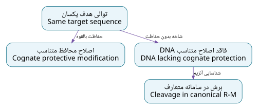
منابع این گام: [R12B10]
۱ — DNA بیگانه با اصلاح محافظ متناسب از برش میگریزد. کدام مفهوم را نشان میدهد؟
۲ — کدام گزاره درباره متیلاسیون و محدودسازی دقیقتر است؟
۳ — در ژنوم یک متیلترانسفراز دیده شده است. کدام نتیجه هنوز نیازمند داده است؟
۱ — گزینه ۱. در مدل متعارف، توالی شناسایی و اصلاح محافظ متناسب تعیینکنندهاند؛ نام گونه یا هر اصلاح نامرتبط بهتنهایی سرنوشت مولکول را پیشبینی نمیکند.
۲ — گزینه ۲. بعضی آنزیمها DNA اصلاحشده را ترجیح میدهند؛ حتی حفاظت متعارف به جایگاه و نوع اصلاح وابسته است. تعمیم مصونیت عمومی نادرست است.
۳ — گزینه ۳. وجود متیلترانسفراز، جفت محدودکننده فعال را تضمین نمیکند؛ متیلاسیون نقشهای تنظیمی هم دارد و فعالیت مجموعه باید جدا تأیید شود.
آرایه CRISPR از تکرارها و فاصلهگذارهای میان آنها تشکیل میشود. بعضی فاصلهگذارها از عناصر ژنتیکی مهاجم منشأ میگیرند و اختصاصیت بالقوه دفاع بعدی را فراهم میکنند. سه مرحله را جدا کنید: سازگاری یا گرفتن فاصلهگذار تازه، بیان و پردازش RNA راهنما، و تداخل با هدف. نقص یکی از این مراحل لزوماً بقیه را حذف نمیکند؛ مثلاً سلولی ممکن است فاصلهگذار قدیمی را برای تداخل به کار ببرد ولی توان افزودن فاصلهگذار جدید کم شده باشد. وجود آرایه در توالی ژنوم نیز بهتنهایی فعالبودن دفاع را ثابت نمیکند.
RNA راهنما، ماشین پروتئینی Cas را به توالی سازگار هدایت میکند، اما نوع هدف و قواعد شناسایی میان سامانهها متفاوت است. بسیاری از سامانههای DNAهدف به توالی مجاور هدف وابستهاند؛ نام عمومی PAM را نباید بدون تعیین نوع به همه مسیرهای CRISPR تعمیم داد. کاملبودن نسبی جفتشدن، موقعیت عدم تطابق و زمینه توالی بر نتیجه اثر دارند. همه سامانهها نیز یک پروتئین برشدهنده واحد ندارند و مدل Cas9 نماینده تمام CRISPRها نیست. برخی مسیرها RNA را هدف میگیرند و منطق تمایز خودی آنها متفاوت است.
حافظه توالی به معنی حفاظت مطلق و همیشگی نیست. تغییر هدف، تغییر قواعد شناسایی یا عوامل مقابلهای مهاجم میتواند اثر دفاع را عوض کند. از سوی دیگر، محدودشدن ورود پلاسمید بالقوه سودمند میتواند هزینه فرصت دفاع باشد. در تحلیل تکاملی، سود حفاظت و محدودیت دریافت ژن تازه را همزمان ببینید. وقتی یک فاصلهگذار با توالی مهاجم مشابه است، نتیجه دقیق این است که فرضیه رابطه و اختصاصیت مطرح میشود؛ زمان تماس، شدت حفاظت کنونی و سرنوشت قطعی عفونت به شواهد بیشتری نیاز دارند.
در یک موتانت، فاصلهگذارهای قدیمی هنوز از مهاجم متناظر محافظت میکنند ولی فاصلهگذار تازه اضافه نمیشود. کدام مرحله احتمالاً آسیب بیشتری دیده است؟
سازگاری و گرفتن فاصلهگذار تازه. بقای تداخل علیه هدف قدیمی نشان میدهد نقص را نباید به خاموشی کل سامانه تعبیر کرد. این فرضیه نیازمند تأیید بیان و پردازش راهنما و سلامت اهداف کنترل است.
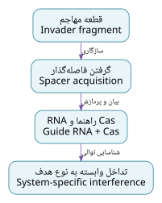
منابع این گام: [R12B11]؛ [R12B5]؛ [R12B15]
۱ — آرایه CRISPR در توالی ژنوم یافت شده است. کدام ادعا هنوز قطعی نیست؟
۲ — نقص گرفتن فاصلهگذار تازه با بقای دفاع علیه هدف قدیمی همراه است. چه چیزی را نشان میدهد؟
۳ — کدام تعمیم درباره CRISPR نادرست است؟
۱ — گزینه ۴. ادعای دفاع فعال علیه هدف مشخص، به بیان، پردازش، ماشین Cas و قواعد شناسایی نیاز دارد؛ اطلاعات توالی بهتنهایی فعالیت کنونی را ثابت نمیکند.
۲ — گزینه ۱. بقای تداخل با فاصلهگذار قدیمی و نقص افزودن فاصلهگذار، جدایی کارکردی مراحل را نشان میدهد؛ سلامت یکی، سلامت خودکار همه مراحل نیست.
۳ — گزینه ۲. گزاره همسانی تمام CRISPRها با Cas9 و PAM واحد نادرست است؛ تنوع ماشین و هدف DNA یا RNA شناخته شده و قواعد باید به نوع مشخص محدود شوند.
تغییر فاز یا phase variation، جابهجایی نسبتاً پربسامد و برگشتپذیر میان حالتهای بیان است که میتواند در دودمان سلولی به ارث برسد. این تعریف با هر نوسان کوتاهمدت RNA یا هر جهش غیرقابل برگشت یکسان نیست. وارونگی یک قطعه دارای پروموتر، تغییر تعداد تکرارهای کوتاه و برخی تغییرات اپیژنتیکی میتوانند حالتهای متفاوت ایجاد کنند. سازوکار را باید برای هر سامانه مشخص کرد؛ برگشتپذیری حالت، الزاماً به معنی تغییرنکردن توالی DNA نیست. در مدل وارونگی، توالی همان قطعه حفظ میشود ولی جهت آن تغییر میکند.
این فرایند میتواند جمعیتی از حالتهای متفاوت بسازد که پس از تغییر محیط، انتخاب میان آنها عمل کند. نباید فرض کرد محرک محیطی حتماً جهش درست و هدفمند را تولید کرده است. افزایش فراوانی یک حالت ممکن است از انتخاب پیشموجودها، تغییر نرخ تعویض یا هر دو حاصل شود. تغییر فاز در ساختارهای سطحی یا سامانههای متیلاسیون میتواند پیامدهای چندژنی داشته باشد؛ تغییر الگوی اصلاح DNA ممکن است یک مجموعه ژن را بازتنظیم کند. ازاینرو یک نشانگر سطحی همیشه تمام حالت تنظیمی سلول را توصیف نمیکند.
برای تحلیل، میان نرخ رفت، نرخ برگشت و سازگاری هر حالت تفاوت بگذارید. اگر حالت روشن در محیط خاص فراوانتر شود، تنها از فراوانی نهایی نمیتوان نرخ تعویض را محاسبه کرد. همچنین خاموشبودن یک صفت در یک کلنی، از دسترفتن دائمی ژن آن صفت را ثابت نمیکند. مشاهده بازگشت حالت و بررسی سازوکار مولکولی، تفسیر را قویتر میکند. این چارچوب، تنوع جمعیت را به تنظیم، انتخاب طبیعی و محدودیت استنباط از یک نمونه پیوند میدهد.
پس از تغییر محیط، سهم حالت روشن از ۱۰ به ۸۰ درصد میرسد. آیا میتوان نتیجه گرفت نرخ خاموشبهروشن هشت برابر شده است؟
خیر. افزایش فراوانی میتواند ناشی از رشد یا بقای بیشتر حالت روشن، تغییر نرخهای رفتوبرگشت یا ترکیبی از اینها باشد. فراوانی نهایی با نرخ تعویض یکی نیست و برای تفکیک، داده زمانمند و مدل جمعیتی لازم است.
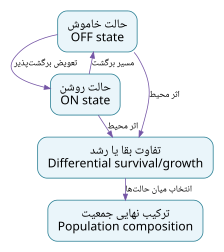
منابع این گام: [R12B10]
۱ — کدام مشاهده با تغییر فاز سازگارتر است؟
۲ — فراوانی حالت ON پس از تنش زیاد شده است. کدام توضیح هنوز باید از تغییر نرخ تعویض تفکیک شود؟
۳ — وارونگی قطعه دارای پروموتر، بیان ژن را روشن و خاموش میکند. کدام توصیف مناسب است؟
۱ — گزینه ۳. تعویض برگشتپذیر و وراثت حالت با تغییر فاز سازگار است؛ حذف دائمی و نوسان بیحافظه متفاوتاند و انتخاب تنها، بدون شاهد تعویض، سازوکار تغییر فاز را تعیین نمیکند.
۲ — گزینه ۴. انتخاب به سود ON پیشموجود میتواند سهم آن را زیاد کند، حتی اگر نرخ تعویض ثابت باشد. نرخ تولید حالت و موفقیت رشد آن باید جدا برآورد شوند.
۳ — گزینه ۱. جهتگیری پروموتر نسبت به ژن تعیینکننده است؛ وارونگی میتواند بدون حذف ژن اتصال تنظیمی را تغییر دهد. حضور توالی با بیان فعال برابر نیست.
اصطلاح پروکاریوت نبود هسته غشادار را توصیف میکند، اما باکتری و آرکی را به یک نوع ماشین مولکولی فرو نمیکاهد. در آغاز رونویسی باکتریایی، سیگما همراه هسته پلیمراز بسیاری از پروموترها را شناسایی میکند. در آرکی، ماشین پایه از نظر ساختار پلیمراز و عوامل عمومی آغاز، به سامانه RNA پلیمراز دو یوکاریوتی نزدیکتر است. TBP و TFB در شناسایی عناصر پروموتر و جذب پلیمراز نقش دارند و TFE میتواند بازشدن کمپلکس را تسهیل کند. این نزدیکی به معنی وجود هسته یا یکسانی کامل تنظیم آرکی و یوکاریوت نیست.
در هر دو گروه، اپرون و RNA چندسیسترونی میتواند وجود داشته باشد، ولی جزئیات ترجمه و تنظیم باید از داده همان دودمان شناخته شود. آرکیها از نظر اجزای رونویسی و بستهبندی DNA نیز متنوعاند؛ یک ویژگی شناختهشده در یک آرکی را به همه آنها تعمیم ندهید. حتی حضور عامل همولوگ، الزاماً به معنی وابستگی یکسان همه پروموترها به آن عامل نیست. تنوع آغازگرها و پروموترها میتواند پاسخهای اختصاصی به محیط ایجاد کند و مطالعه مقایسهای را ضروری سازد.
در تفسیر آزمون، ابتدا سطح شباهت را مشخص کنید: معماری سلولی، شباهت تکاملی یک پروتئین یا کارکرد تنظیمی. آنالوگهای کارکردی الزاماً همولوگ نزدیک نیستند؛ سیگمای باکتریایی و مجموعه عوامل آغاز آرکی میتوانند در انتخاب آغاز نقش داشته باشند ولی ماشین یکسانی نیستند. برعکس، شباهت پلیمراز آرکی به پلیمراز یوکاریوتی به معنی انتقال بیقید همه قواعد پردازش RNA نیست. این تفکیک از پاسخهای افراطی مانند «همه پروکاریوتها یک سیگما دارند» یا «آرکی همان یوکاریوت کوچک است» جلوگیری میکند.
در یک آرکی، شروع رونویسی با TBP و TFB و یک پلیمراز آرکی بازسازی میشود. آیا نبود سیگمای باکتریایی با پروکاریوت بودن آن ناسازگار است؟
خیر. پروکاریوت بودن به سازمان سلول مربوط است؛ ماشین پایه رونویسی آرکی از سیگمای باکتریایی استفاده نمیکند و از نظر اجزا به دستگاه یوکاریوتی نزدیکتر است. از این آزمایش وجود هسته یا همه ویژگیهای پردازش یوکاریوتی نتیجه نمیشود.
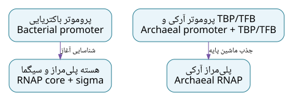
منابع این گام: [R12B3]؛ [R12B9]
۱ — کدام جفت برای آغاز رونویسی آرکی مناسبتر است؟
۲ — شباهت پلیمراز آرکی به پلیمراز دو یوکاریوتی کدام نتیجه را بهتنهایی نمیدهد؟
۳ — چرا وجود RNA چندسیسترونی برای تشخیص باکتری از آرکی کافی نیست؟
۱ — گزینه ۲. TBP و TFB در ماشین آغاز آرکی نقش پایه دارند؛ وجود اپرون یا نبود هسته موجب استفاده عمومی از سیگمای باکتریایی یا تنظیمکنندههای اختصاصی lac/trp نمیشود.
۲ — گزینه ۳. شباهت پلیمراز، وجود هسته یا انتقال همه قواعد پردازش را نتیجه نمیدهد. همولوژی ماشین با معماری کامل سلول یکسان نیست.
۳ — گزینه ۴. سازمان اپرونی میان دو گروه دیده میشود؛ تعداد سیسترون نوع ماشین آغاز را تعیین نمیکند و برای تمایز به شواهد مولکولی مناسب نیاز است.
• محدودسازی متعارف به توالی و وضعیت اصلاح DNA وابسته است؛ خودی/بیگانه تعریف مولکولی دارد.
• در CRISPR، گرفتن فاصلهگذار، تولید RNA راهنما و تداخل سه مرحله جدا هستند.
• تغییر فاز، تغییر برگشتپذیر و قابل وراثت حالت بیان است و همیشه نیازمند محرک هدایتکننده نیست.
• پروکاریوت بودن به معنی یکسانی ماشین رونویسی، بستهبندی و تنظیم در باکتری و آرکی نیست.
| پدیده | اطلاعات تعیینکننده | اشتباه رایج |
|---|---|---|
| محدودسازی–اصلاح متعارف | توالی هدف و الگوی اصلاح متناسب | همه DNAهای متیله همیشه مصوناند |
| CRISPR | فاصلهگذار، ماشین Cas و سازگاری هدف | وجود آرایه مساوی ایمنی فعال است |
| تغییر فاز | حالت برگشتپذیر بیان در دودمان | هر تغییر بیان ناشی از جهش غیرقابل برگشت است |
| آغاز رونویسی آرکی | TBP، TFB و پلیمراز آرکی | سیگمای باکتریایی در همه پروکاریوتها وجود دارد |
وقتی حذف یک ژن صفتی را عوض میکند، نخستین نتیجه ارتباط مداخله ژنتیکی با فنوتیپ در همان زمینه است. این مشاهده هنوز نمیگوید محصول ژن مستقیماً عامل صفت بوده است. در یک اپرون، حذف ممکن است پروموتر داخلی، پایداری RNA یا ترجمه پاییندست را تغییر دهد و اثر قطبی ایجاد کند. تغییر رشد عمومی نیز میتواند بسیاری از خروجیها را ثانویه جابهجا کند. بنابراین نام «حذف ژن» بهتنهایی تضمین نمیکند که فقط یک متغیر مولکولی تغییر کرده باشد؛ مرزهای حذف و نواحی مجاور اهمیت دارند.
مکملسازی، تأمین یک نسخه کارا برای آزمودن امکان بازیابی صفت است. اگر ژن سالم در ترانس فنوتیپ را برگرداند، فرضیه نقش محصول قابل انتشار تقویت میشود. اما نسخههای زیاد یا پروموتر قوی میتوانند از مسیر جبرانیِ غیرطبیعی صفت را بازیابی کنند؛ این حالت با بازگردانی دقیق آلل طبیعی همارز نیست. نتیجه منفی مکملسازی هم الزاماً نقش ژن را رد نمیکند، زیرا مقدار بیان، پایداری، جایگاه و زمان عمل ممکن است مناسب نباشند. کنترل حامل خالی و مقایسه با زمینه سالم، بخشی از منطق تفسیر است.
برای تمایز نقش اختصاصی از اثر قطبی، بیان ژنهای پاییندست و بازسازیهای مستقل را بررسی کنید. یک آلل متفاوت که همان کارکرد را مختل میکند ولی معماری اپرون را حفظ میکند میتواند شاهد مکمل باشد. بازگشت صفت پس از بازگردانی دقیق ناحیه طبیعی، توضیح جهش همراه را محدود میکند. در پاسخ آزمون، از عبارت «با نقش ژن سازگار است» تا «هدف مستقیم اثبات شده» پلههای شواهد را رعایت کنید؛ هر دو تعبیر ارزش یکسانی ندارند و داده کمتر نباید ادعای بزرگتر بسازد.
حذف ژن A در اپرون A–B–C فعالیت C را کاهش میدهد. تأمین A از حامل جدا، C را بازیابی نمیکند ولی بازگردانی ناحیه طبیعی بازیابی میکند. چه تبیینی قابل بررسی است؟
اثر سیس حذف بر بیان پاییندست، از جمله اثر قطبی، مطرح است. نتیجه منفی A در ترانس بهتنهایی این تبیین را ثابت نمیکند؛ بیان مناسب A در سازه و وضعیت RNA و پروتئینهای B و C باید بررسی شود.
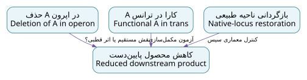
منابع این گام: [R12B12]؛ [R12B14]
۱ — حذف ژن اول اپرون، بیان ژن سوم را کم کرده است. چه چیزی برای استناد اختصاصی به پروتئین اول مهم است؟
۲ — حامل پُرنسخه ژن X، فنوتیپ موتانت Y را بازیابی کرده است. کدام احتمال باید از مکملسازی آلل طبیعی تفکیک شود؟
۳ — مکملسازی نتیجه منفی داده است. کدام نتیجهگیری زودهنگام است؟
۱ — گزینه ۱. برای نقش اختصاصی محصول اول باید اثر سیس بر بیان پاییندست کنترل شود. مکملسازی بدون بررسی مقدار محصول و معماری اپرون، همه توضیحهای جایگزین را حذف نمیکند.
۲ — گزینه ۲. بیشبیان X میتواند نقص مسیر دیگری را سرکوب کند؛ بازیابی با دوز زیاد، هویت ژن جهشیافته یا ترمیم دقیق ناحیه سیس را بهتنهایی ثابت نمیکند.
۳ — گزینه ۳. منفیشدن مکملسازی با سازهای که کاراییاش روشن نیست، برای رد نقش ژن کافی نیست؛ دوز، پایداری و زمینه سیس توضیحهای جایگزیناند.
گزارشگر، خروجی مولکولی قابل سنجشی است که به یک ناحیه تنظیمی یا محصول متصل میشود. در اتصال رونویسی، پروموتر موردنظر معمولاً بیان گزارشگر را با ابزار ترجمه مستقل آن هدایت میکند؛ در اتصال ترجمه، بخشهایی مانند ناحیه شروع ترجمه و گاه ابتدای توالی کدکننده نیز وارد سازه میشوند. بنابراین اختلاف رفتار این دو اتصال میتواند لایهای پس از آغاز رونویسی را مطرح کند. اما خود گزارشگر هم ویژگیهایی مانند سرعت بلوغ، پایداری و زمینه بیان دارد؛ خروجی آن آیینه بیخطای لحظهای ژن طبیعی نیست.
افزایش فلورسانس ممکن است از افزایش ساخت، کاهش تجزیه پروتئین گزارشگر، تغییر تعداد سلول یا تغییر شرایط فیزیکی ناشی شود. برای مقایسه، نرمالسازی متناسب با پرسش و کنترل رشد اهمیت دارد. اگر مقدار گزارشگر را بر زیستتوده تقسیم میکنید، باید فرض کنید آن سنجه واقعاً برای مقایسه تعداد یا مقدار سلول مناسب است. تغییر شکل سلول یا پراکندگی نور میتواند این فرض را محدود کند. اندازهگیری همزمان RNA و پروتئین طبیعی، تفسیر گزارشگر را استوارتر میکند.
بخش سیس موردنیاز ممکن است در سازه حذف شده باشد. یک پروموتر روی حامل پُرنسخه میتواند پاسخ متفاوتی از همان توالی در جایگاه کروموزومی نشان دهد، زیرا دوز، توپولوژی و دسترسی تنظیمکننده تغییر میکنند. نبود پاسخ گزارشگر به معنی نبود تنظیم ژن طبیعی نیست. همچنین تغییر پاسخ یک اتصال ترجمه الزاماً تماس مستقیم عامل با ریبوزوم را ثابت نمیکند؛ پایداری RNA و ساختار ناحیه رهبر نیز میتوانند مؤثر باشند. گزارشگر ابزاری برای تفکیک فرضیههاست و تفسیر آن به طراحی و کنترل وابسته میماند.
حذف یک sRNA، اتصال رونویسی را ثابت نگه میدارد ولی اتصال ترجمه با همان پروموتر را دو برابر میکند. نخستین لایه پیشنهادی چیست؟
تنظیم پسارونویسی در بخشهایی که فقط در اتصال ترجمه حضور دارند مطرح است. این داده با اثر بر شروع ترجمه یا پایداری RNA سازگار است، اما تماس مستقیم sRNA با هدف را ثابت نمیکند؛ مقدار RNA و ساختار سازه باید کنترل شوند.
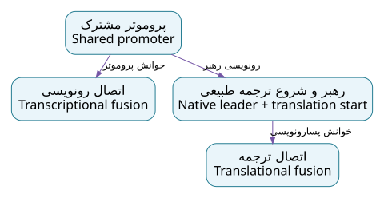
منابع این گام: [R12B5]؛ [R12B12]؛ [R12B14]
۱ — فقط اتصال ترجمه به حذف sRNA پاسخ میدهد و اتصال رونویسی ثابت است. کدام فرضیه مستقیمتر مطرح میشود؟
۲ — افزایش فلورسانس کل کشت، بدون سنجش تعداد سلول، کدام ادعا را ثابت نمیکند؟
۳ — گزارشگر پُرنسخه پاسخ نمیدهد ولی ژن طبیعی پاسخ دارد. کدام توضیح محتمل است؟
۱ — گزینه ۴. پاسخ اختصاصی اتصال ترجمه، بخش پسارونویسی را نامزد میکند؛ برای جداکردن شروع ترجمه از پایداری RNA و تماس مستقیم، داده مکمل لازم است.
۲ — گزینه ۱. افزایش سیگنال کل لزوماً افزایش بهازای هر سلول نیست؛ تعداد سلول، مقدار گزارشگر و ویژگی سنجش همگی سهم دارند و باید تفکیک شوند.
۳ — گزینه ۲. دوز، توپولوژی و حذف عناصر سیس میتوانند رفتار سازه را عوض کنند؛ نباید اختلاف با ژن طبیعی را فقط به یک علت محدود یا نبود پاسخ را نفی تنظیم دانست.
در انتخاب ژنتیکی، شرایط به شکلی تعریف میشوند که بعضی ژنوتیپها امکان بقا یا رشد بیشتری داشته باشند؛ در غربال، مجموعهای از نمونهها باقی میماند و بر اساس یک خوانش، موارد مطلوب شناسایی میشوند. این دو مفهوم ممکن است در یک طرح کنار هم به کار روند، ولی یکسان نیستند. زندهماندن یک کلنی زیر انتخاب، همه ویژگیهای موردنظر را اثبات نمیکند؛ ممکن است صفت جایگزین، تغییر رشد یا تغییر دیگری نتیجه مشابه بدهد. به همین دلیل نامزد انتخابشده باید با سنجه مستقل و زمینه کنترل بازبینی شود.
اگر در یک ژن موتانت درجشونده پیدا نشود، ضروریبودن آن ژن تنها یکی از توضیحهاست. پوشش ناکافی مجموعه، ترجیح جایگاه درج، اندازه کوتاه ژن، دشواری آشکارسازی یا گلوگاه جمعیتی نیز میتوانند غیبت ایجاد کنند. در مقابل، وجود درج در انتهای ژن لزوماً حذف کامل کارکرد را نشان نمیدهد؛ دامنه اصلی ممکن است سالم مانده باشد. ضروریبودن هم به شرط وابسته است: ژنی برای رشد در محیطی خاص ضروری و در محیط مکمل غیرضروری میشود. پس برچسب «ضروری» باید همراه شرایط و معیار باشد.
مقایسه موتانتهای مستقل، بازگردانی آلل و حذف توضیح رشد عمومی، نامزد را از رابطه اتفاقی جدا میکند. در مجموعههای مخلوط، محصول قابل انتشار یک سلول ممکن است نقص دیگری را بپوشاند و نتیجه با کشت منفرد فرق کند. فراوانی پایین پس از رقابت نیز میتواند حاصل نقص بقا، رشد یا ورود به مرحله آزمون باشد؛ مرحله اثر را باید مشخص کرد. هدف غربال، ساخت فهرست نامزدهای آزمونپذیر است و شمار زیاد نامزدها جای تأیید مکانیکی هر ژن را نمیگیرد.
در مجموعهای با پوشش نامعلوم، هیچ درج در ژن کوتاه X دیده نشده است. آیا میتوان X را ضروری اعلام کرد؟
خیر. غیبت درج با ضروریبودن سازگار است، اما اندازه ژن، ترجیح درج و پوشش مجموعه توضیحهای جایگزیناند. لازم است قدرت آشکارسازی و شرایط رشد روشن و نامزد با شاهد مستقل بررسی شود.
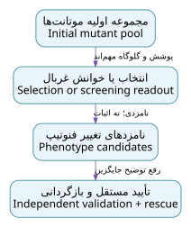
منابع این گام: [R12B12]؛ [R12B14]
۱ — در انتخاب، یک کلنی باقی مانده است. کدام گام برای نسبتدادن صفت به ژن نامزد مهمتر است؟
۲ — نبود درج در یک ژن در مجموعه کمپوشش کدام نتیجه را بهتنهایی نمیدهد؟
۳ — موتانت در کشت منفرد نقص دارد ولی در مخلوط با سالم بازیابی میشود. کدام احتمال مطرح است؟
۱ — گزینه ۳. انتخاب خروجی رشد یا بقا را میخواند و راههای مختلف میتوانند آن را ایجاد کنند. تأیید مستقل و کنترل رشد و جهش همراه برای تفسیر ژن لازم است.
۲ — گزینه ۴. نبود درج در مجموعه کمپوشش، ضروریبودن را قطعی نمیکند؛ طول، ترجیح جایگاه و گلوگاه جمعیتی نیز میتوانند غیبت ایجاد کنند.
۳ — گزینه ۱. محصول قابل انتشار سلول سالم میتواند نقص موتانت را در مخلوط بپوشاند؛ این با بازگشت آلل یا تأمین ژن درون همان سلول یکسان نیست.
ژنومیک میتواند ژنها، آللها و همزمانی صفات را در نمونههای فراوان نشان دهد، اما ارتباط آماری بهتنهایی رابطه علّی نیست. یک ژن همراه صفت ممکن است فقط با دودمان دارای آن صفت پیوند داشته باشد یا همراه عامل واقعی منتقل شده باشد. کنترل ساختار جمعیت، پیوند ژنتیکی و کیفیت داده برای تفسیر لازم است. نبود یک ژن در مونتاژ ناقص نیز با نبود واقعی آن در سلول یکی نیست. در تحلیل، میان مشاهده توالی، پیشبینی کارکرد، بیان و فعالیت واقعی محصول چهار سطح جدا وجود دارد.
رونویسیسنجی، تغییر فراوانی RNA را میخواند و از آن نمیتوان بهتنهایی تغییر پروتئین یا شار عملکردی را نتیجه گرفت. پروتئین ممکن است پایدار بماند، ترجمه تغییر کند یا فعالیتش با اصلاح پساترجمگی تنظیم شود. نتیجه قویتر از همگرایی سنجههای مستقل و مداخله کنترلشده حاصل میشود: دستکاری مشخص، مشاهده فنوتیپ، بازیابی با بازگردانی مناسب و بررسی توضیحهای جایگزین. حتی مکملسازی موفق، اگر با دوز غیرطبیعی باشد، باید در حد همان شاهد تفسیر شود و شاهد مستقیم اتصال یا کاتالیز نامیده نشود.
یک طرح عاملی میتواند اثر ژن و محیط و برهمکنش آنها را تفکیک کند. اگر حذف ژن فقط در یک محیط اثر داشته باشد، ژن بیاثر نیست؛ نقش آن شرطی است. تکرار زیستی مستقل و اندازه اثر از شمار خوانشها مهمتر از ادعای اطمینان صرفاً بر پایه حجم دادهاند. در سؤال نهایی این جلد، همواره بپرسید کدام نتیجه مستقیماً اندازهگیری شده، کدام فرضیه است و کدام آزمایش محدودکننده بعدی میتواند میان تبیینها فرق بگذارد. این عادت، دانش سازوکار را به توان تحلیل صورت تازه سؤال تبدیل میکند.
در محیط A، حذف ژن رشد را از ۱۰۰ به ۹۵ واحد و در محیط B از ۱۰۰ به ۴۰ واحد کاهش میدهد؛ سنجه و مقیاس در همه گروهها یکسان است. چه استنباطی مناسب است؟
اثر حذف به محیط وابسته است و با برهمکنش ژن–محیط سازگار است: افت ۵ واحدی در A و ۶۰ واحدی در B برابر نیستند. این داده بهتنهایی هدف مستقیم پروتئین یا سازوکار آن را تعیین نمیکند؛ بازگردانی و کنترل رشد/سنجش لازماند.
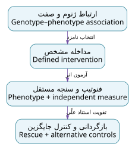
منابع این گام: [R12B12]؛ [R12B14]
۱ — ژن X در همه جدایههای دارای صفت دیده میشود ولی همه آنها یک دودماناند. کدام عامل مخدوشکننده مهم است؟
۲ — RNA یک آنزیم چهار برابر شده است. کدام نتیجه هنوز قطعی نیست؟
۳ — حذف ژن فقط در محیط B رشد را کاهش میدهد. کدام توصیف دقیقتر است؟
۱ — گزینه ۲. همراهی با دودمان میتواند ژن را با صفت همبسته کند، بدون نقش علّی مستقیم؛ کنترل ساختار جمعیت، پیوند و مداخله در زمینه مستقل لازم است.
۲ — گزینه ۳. RNA بیشتر، چهاربرابرشدن فعالیت را ثابت نمیکند؛ ترجمه، مقدار پروتئین و وضعیت فعالیت سه لایه اضافیاند که اندازهگیری نشدهاند.
۳ — گزینه ۴. اندازه اثر میتواند به محیط وابسته باشد؛ برهمکنش ژن–محیط با نقش شرطی سازگار است و به جهش تازه در هر مقایسه نیاز ندارد.
• فنوتیپ حذف ژن میتواند از اثر قطبی، تغییر رشد یا جهش همراه اثر بپذیرد.
• مکملسازی، مهار با دوز زیاد و بازگردانی دقیق آلل، شواهد همارز نیستند.
• گزارشگر رونویسی و گزارشگر ترجمه، لایههای متفاوت تنظیم را میخوانند.
• ژنومیک نامزد و رابطه میسازد؛ دستکاری کنترلشده، بازگردانی و سنجش مستقل برای استناد علّی لازماند.
| روش یا شاهد | آنچه مستقیماً پشتیبانی میکند | آنچه بهتنهایی ثابت نمیکند |
|---|---|---|
| حذف ژن و تغییر صفت | ارتباط مداخله با صفت در آن زمینه | نقش مستقیم پروتئین بدون اثر قطبی |
| مکملسازی | امکان بازیابی فنوتیپ با سازه مشخص | یکسانی دوز و تنظیم با آلل طبیعی |
| گزارشگر رونویسی | خروجی ناحیه تنظیمی در سازه | فراوانی پروتئین طبیعی بهطور کامل |
| توالییابی یا بیانسنجی | توالی یا فراوانی مولکولی | کارکرد فعال و رابطه علّی قطعی |
۱ — دو سویه همژنوم از نظر رشد پایه برابرند، اما یکی پلاسمید تجزیه یک ترکیب محیطی را دارد. در حضور همان ترکیب چه نتیجهای محتاطانهتر است؟
۲ — در DNA حلقوی بسته، آنزیمی بدون شکستن ستون فقرات فقط DNA را خم میکند. کدام ادعای پژوهشگر محل اشکال است؟
۳ — یک ژنوم۶میلیون جفتبازی در۵۰دقیقه با دو چنگال همسرعت و بدون توقف کپی میشود. سرعت هر چنگال تقریباً چقدر است؟
۴ — یک موتانت پس از تکمیل سنتز، مولکولهای حلقوی دختر درهمقفل دارد؛ مقدار کل DNA نزدیک طبیعی است. چه آزمایشی مسئله را مستقیمتر میآزماید؟
۵ — یک باکتری کروموزوم خطی دارد. کدام کار علمی درستتر است؟
۶ — یک جانشینی در پروموتر مقدار RNA را نصف کرده، ولی پروتئین باقیمانده توالی طبیعی دارد. کدام تعبیر مناسبتر است؟
۷ — دو کشت شمار موتانت برابر دارند، ولی یکی از یک موتانت اولیه و دیگری از چند رویداد دیرهنگام به وجود آمده است. کدام کمیت لزوماً برابر نیست؟
۸ — در مدل p0، با دیگر شرایط برابر، سهم کشتهای صفر از۰٫۵ به۰٫۲ میرسد. برآورد m چگونه تغییر میکند؟
۹ — در سویه موتانت، دیمرهای پیریمیدین باقی میمانند ولی سنتز DNA از مقابل ضایعه عبور میکند. این پدیده کدام تمایز را نشان میدهد؟
۱۰ — در ایمز، کنترل مثبت پاسخ مناسب میدهد ولی نمونه فقط در دوز کشنده کلنی کمی دارد. کدام نتیجه ناموجه است؟
۱۱ — یک پلاسمید خودتکثیرشونده در موتانت recA باقی میماند ولی ادغام قطعه همولوگ کروموزومی کاهش دارد. بهترین تفسیر چیست؟
۱۲ — در آزمایش Chi، هم جهت توالی و هم انتهای ورود RecBCD عوض شدهاند. چرا نتیجه برای نسبتدادن اثر فقط به جهت توالی کافی نیست؟
۱۳ — در یک نوترکیبی، توالی طولانی دو DNA تقریباً متفاوت است اما دو جایگاه شناسایی کوتاه و ریکامبیناز ویژه لازماند. کدام سازوکار مطرح است؟
۱۴ — خوانشهای توالی نشان میدهند مرزهای یک قطعه معکوس شدهاند و پوشش آن با نواحی مجاور برابر است. کدام تبیین سادهتر است؟
۱۵ — حذف recA هم بقا پس از شکست DNA و هم فراوانی نوترکیب را کم میکند. چرا این نتیجه الزاماً دو عملکرد کاملاً نامرتبط نیست؟
۱۶ — DNA آزاد دهنده وارد گیرنده میشود، اما در نبود همولوژی و همانندساز سازگار پایدار نمیماند. کدام مرحله انجام شده ولی کافی نبوده است؟
۱۷ — انتقال در تماس مستقیم و با ماشین انتقال سالم رخ میدهد، اما با جدایی سلولها متوقف میشود. کدام کنترل، استدلال کونژوگاسیون را تقویت میکند؟
۱۸ — دو دهنده Hfr یک ژن را در زمانهای متفاوت وارد میکنند. کدام توضیح ممکن است بدون تغییر جای واقعی ژن باشد؟
۱۹ — در گیرنده دارای F-prime، ژن lac هم روی کروموزوم و هم روی پلاسمید است. برای تفسیر مکملسازی کدام کنترل مهمتر است؟
۲۰ — DNA ژن مقاومت در کپسید بستهبندی شده است. DNase بیرونی انتقال را متوقف نمیکند. کدام نتیجه محتاطانهتر است؟
۲۱ — ورود ژنهای M,N,P در دقایق۳،۸ و۲۰ دیده میشود. در جهت همان دهنده کدام رابطه درست است؟
۲۲ — همترانسداکشن B با انتخاب A برابر۶۰درصد و C با انتخاب A برابر۱۰درصد است. بدون داده B–C کدام نتیجه مجازتر است؟
۲۳ — در تلاقی سهنشانگری، یک رده بهعلت رشد بسیار ضعیف کمشمار است. کدام کار از نتیجهگیری هندسی شتابزده جلوگیری میکند؟
۲۴ — از۵۰۰ کلنی X مثبت،۱۵۰ مورد Y مثبتاند. کدام گزارش درست است؟
۲۵ — دو فاژ ظرفیت بستهبندی متفاوت دارند و درصد همترانسداکشن متفاوتی میدهند. نخستین نکته در مقایسه چیست؟
۲۶ — در مدل ساده lac، ژنوتیپ Iˢ O⁺ Z⁻ / I⁺ Oᶜ Z⁺ است. در حضور القاگر، کدام عامل علت اصلی رهایی Z⁺ از مهار LacI است؟
۲۷ — دو نسخه سالم lacO وجود دارند؛ تأمین LacI سالم در یک نقطه سلول، هر دو را مهار میکند. کدام جزء لازم نیست میان دو جایگاه جابهجا شود؟
۲۸ — در جهش رهبر trp، ناحیه۳ دیگر با ناحیه۴ جفت نمیشود، ولی پروموتر و TrpR سالماند. کدام لایه مستقیماً آسیب میبیند؟
۲۹ — افزایش یک سیگمای جایگزین، RNA بعضی ژنهای وابسته به سیگمای عمومی را کم کرده است. کدام فرضیه با هسته مشترک پلیمراز سازگار است؟
۳۰ — در حسگر دوکارکردی، فقط فعالیت فسفاتازی کم شده و ورود فسفات ثابت است. در مدل ساده چه انتظار میرود؟
۳۱ — حذف Hfq بیان دهها ژن را تغییر داده است. چرا نمیتوان همه را هدف مستقیم یک sRNA خاص نامید؟
۳۲ — دو ریبوسوئیچ یک لیگاند را میبندند ولی یکی بیان را زیاد و دیگری کم میکند. کدام تفسیر مناسب است؟
۳۳ — در مدل پایا بدون رشد، نرخ ساخت RNA از۳۰ به۶۰ مولکول در دقیقه و ثابت تجزیه از۰٫۱ به۰٫۲ بر دقیقه میرود. مقدار پایا چه میشود؟
۳۴ — در تجزیه نمایی، پس از دو نیمهعمر۲۵ درصد RNA باقی است. کدام فرض پنهان برای این حساب ضروری است؟
۳۵ — جهشی فقط هیدرولیز SpoT را کاهش داده و سایر ورودیها ثابتاند. چه تغییری در مخزن آلارمون محتملتر است؟
۳۶ — یک IS بدون ژن مقاومت، پس از درج بیان ژن مجاور را بالا برده است. کدام مدل ممکن است؟
۳۷ — پس از جابهجایی، نسخه عنصر در دهنده باقی مانده و یک نسخه تازه در مقصد دیده میشود. این داده با کدام مدل سازگارتر است؟
۳۸ — جابجایی کاست در آرایه اینتگرون، مقاومت را تغییر داده ولی توالی کدکننده ثابت است. کدام عامل باید بررسی شود؟
۳۹ — دو صفت اغلب با هم دیده میشوند. برای ادعای اینکه هر دو روی یک پلاسمیدند، کدام شاهد لازمتر است؟
۴۰ — همان پلاسمید در میزبان A پرهزینه و در میزبان B کمهزینه است. کدام تعمیم رد میشود؟
۴۱ — DNA میزبان از حفاظت اصلاحی افتاده ولی آنزیم محدودکننده فعال است. کدام خطر با مدل متعارف سازگار است؟
۴۲ — در سامانهای که دفاع آن به پردازش پیشساز crRNA و تشکیل راهنمای بالغ وابسته است، رونویسی آرایه برقرار ولی پردازش مناسب مختل است. چرا حضور رونویسی آرایه، دفاع را تضمین نمیکند؟
۴۳ — توالی هدف مهاجم تغییر کرده ولی فاصلهگذار میزبان ثابت است. کدام نتیجه ممکن است؟
۴۴ — سلول خاموش، در نسلهای بعد دوباره روشن شده و ژن سطحی حفظ شده است. کدام گزینه از داده پشتیبانی میگیرد؟
۴۵ — دو ماشین آغاز، یکی با سیگما و دیگری با TBP/TFB کار میکنند. کدام سطح مقایسه مناسبتر است؟
۴۶ — دو حذف مستقل یک ژن، همان فنوتیپ را دارند و بازگردانی دقیق هر دو صفت را برمیگرداند. این ترکیب چه مزیتی دارد؟
۴۷ — پروتئین گزارشگر پایدار است ولی رونویسی سریع خاموش میشود. کدام رفتار خروجی قابل انتظار است؟
۴۸ — موتانت در محیط کامل رشد میکند ولی در محیط فاقد یک مکمل رشد نمیکند. کدام بیان دقیقتر است؟
۴۹ — ژن در مونتاژ کوتاهخوان دیده نشده و ناحیه مربوط شکاف دارد. کدام تفسیر مناسبتر است؟
۵۰ — کنترل و موتانت تعداد خوانش فراوان ولی فقط یک کشت مستقل برای هر گروه دارند. کدام محدودیت پابرجاست؟
۱ — گزینه ۱. برابری در یک محیط به همه محیطها تعمیم نمییابد. نقش سازشی پلاسمید باید در محیط دارای سوبسترای مربوط آزموده شود؛ ضروریبودن همگانی نتیجه نمیشود.
۲ — گزینه ۳. خمکردن و بازتوزیع پیچوتاب با تغییر عدد پیوندی فرق دارد. در دورشته بسته، تغییر عدد پیوندی به عبور رشته با شکست و اتصال یا بازشدن مرز توپولوژیک نیاز دارد.
۳ — گزینه ۲. ۵۰دقیقه برابر۳۰۰۰ثانیه است. سرعت هر چنگال۶۰۰۰۰۰۰/(۲×۳۰۰۰)=۱۰۰۰جفتباز برثانیه میشود.۲۰۰۰ سرعت مجموع دو چنگال است، نه سرعت هرکدام.
۴ — گزینه ۴. مقدار کل DNA کاملبودن جداسازی را نمیگوید. ساختار حلقهها و فعالیت توپوایزومراز IV به فرض نقص توپولوژیک مرتبطترند؛ دایمر پیوسته باید جدا بررسی شود.
۵ — گزینه ۳. معماری خطی در برخی باکتریها دیده میشود. از آن نمیتوان نوع تمام ماشینهای انتهایی یا رده زیستی را بهتنهایی تعیین کرد؛ سامانه گونه باید بررسی شود.
۶ — گزینه ۲. جهش ناحیه تنظیمی میتواند مقدار بیان را تغییر دهد. اصطلاح بیمعنی به ایجاد کدون توقف مربوط است و بدون تغییر کدون قابل انتساب نیست.
۷ — گزینه ۴. نوادگان یک رویداد زودرس میتوانند همان تعداد نهایی حاصل از چند رویداد دیررس را بسازند. شمار سلول موتانت و شمار رویداد جهشی دو کمیت متفاوتاند.
۸ — گزینه ۱. m=−ln(p0) است؛ کاهش p0 برآورد شمار رویدادها را بیشتر میکند. این مقایسه به بازیابی مشابه و نبود موتانت اولیه متکی است و هنوز نرخ بهازای تقسیم نیست.
۹ — گزینه ۱. عبور از ضایعه میتواند همانندسازی را ادامه دهد بدون حذف شیمیایی ضایعه. وفاداری، بقا و حذف ضایعه باید جدا سنجیده شوند؛ هر مسیر عبوری الزاماً بیخطا نیست.
۱۰ — گزینه ۳. سمیت میتواند سلولهای قابل تشکیل کلنی را حذف کند و پاسخ را پنهان سازد. آزمون منفی در دوز نامناسب، ایمنی همگانی یا نبود هر نوع آسیب را ثابت نمیکند.
۱۱ — گزینه ۱. همانندساز سازگار میتواند بدون ادغام باقی بماند؛ قطعه خطی کروموزومی برای وراثت پایدار غالباً به تثبیت نوترکیبی وابسته است. داده، تمام نقشهای RecA را نفی نمیکند.
۱۲ — گزینه ۲. اثر Chi نسبت به جهت حرکت ماشین معنا دارد. تغییر همزمان ورودی و جایگاه مانع جداسازی علت میشود؛ باید مقایسههای تکمتغیره و کنترل فعالیت انجام شوند.
۱۳ — گزینه ۳. وابستگی به جایگاه کوتاه و عامل اختصاصی با SSR سازگار است. همولوژی گسترده مانند مسیر RecA شرط اصلی این توصیف نیست، هرچند جزئیات محصول به آرایش جایگاهها وابسته است.
۱۴ — گزینه ۴. تغییر مرز جهتدار با پوشش مشابه، وارونگی خالص را مطرح میکند. مضاعفشدن انتظار افزایش نسخه دارد و حذف کامل با وجود خوانشهای قطعه سازگار نیست.
۱۵ — گزینه ۱. تبادل رشته میتواند اطلاعات را از الگوی همولوگ برای ترمیم بازیابی کند. نقص یک فرایند مشترک میتواند بر بقا و نوترکیبی اثر بگذارد؛ کنترل رشد پایه هنوز ضروری است.
۱۶ — گزینه ۲. دریافت با وراثت پایدار فرق دارد. نبود مبدأ و نبود ادغام مناسب میتواند باعث رقیقشدن یا تخریب DNA واردشده شود؛ این مشاهده ورود را نفی نمیکند.
۱۷ — گزینه ۳. وابستگی ژنتیکی به ماشین انتقال همراه شاهد تماس از مشاهده DNaseمقاوم قویتر است. نجات کنترلشده کمک میکند اثر ثانویه بر بقا یا تماس جدا شود.
۱۸ — گزینه ۴. آغاز و جهت انتقال نسبت به ژن میتواند عوض شود؛ زمان ورود یک ژن بهتنهایی جای مطلق آن را مستقل از دهنده تعریف نمیکند.
۱۹ — گزینه ۱. دو نسخه بودن ابزار تحلیل است، اما مقدار بیان یا نوترکیبی بین نسخهها میتواند پاسخ را تغییر دهد. مکملشدن بدون کنترل نسخه، همه ادعاهای تنظیمی را ثابت نمیکند.
۲۰ — گزینه ۲. DNase به DNA حفاظتشده دسترسی ندارد؛ نبود اثر آن مسیر فاژی را رد نمیکند و ظرفیت کپسید نیز انتقال کل ژنوم را تضمین نمیکند.
۲۱ — گزینه ۲. اختلاف۲۰−۸ برابر۱۲ دقیقه است. نقشه در جهت همان Hfr تعریف میشود و تبدیل به جفتباز به سرعت انتقال مؤثر نیاز دارد.
۲۲ — گزینه ۳. مقایسه نزدیکی نسبت به A ممکن است، ولی جهت قرارگرفتن C نسبت به B و ترتیب کامل به اطلاعات بیشتر نیاز دارد؛ احتمالها شرطیاند.
۲۳ — گزینه ۱. کمشماری میتواند ناشی از انتخاب پس از تشکیل محصول باشد. کنترل بقا و انتخاب دیگر کمک میکند اثر هندسه تبادل از سوگیری بازیابی جدا شود.
۲۴ — گزینه ۴. ۱۵۰/۵۰۰=۰٫۳۰ است. این عدد احتمال بازیابی مشترک در منتخبهای X است؛ نه نرخ جهش و نه فاصله فیزیکی مستقیم.
۲۵ — گزینه ۲. اندازه قطعه بر احتمال حمل مشترک اثر دارد. اختلاف درصد با سامانه متفاوت الزاماً به معنی تغییر فاصله واقعی ژنها نیست.
۲۶ — گزینه ۱. Oᶜ سیساثر است و اتصال مؤثر مهارگر را در همان نسخه مختل میکند. از این داده بیان بیشینه مستقل از CAP نتیجه نمیشود.
۲۷ — گزینه ۲. محصول LacI میتواند منتشر شود؛ توالیهای سیس در DNA خود باقی میمانند. این تفکیک پایه تحلیل نیمهدیپلوئید است.
۲۸ — گزینه ۳. تغییر صورت مسئله ساختار پایاندهنده RNA را مختل میکند؛ مهار آغاز با TrpR لایهای دیگر است.
۲۹ — گزینه ۴. بازتوزیع هسته میتواند پاسخهای مخالف ایجاد کند؛ داده بهتنهایی تماس مستقیم سیگمای جایگزین با ژنهای کاهشیافته را نشان نمیدهد.
۳۰ — گزینه ۱. با ورودی ثابت، کاهش خروج فسفات میتواند مخزن فسفریله را بالا ببرد. جهت اثر بر بیان به عملکرد تنظیمکننده وابسته است.
۳۱ — گزینه ۲. اثر یک شاپرون جهانی، شبکهای است. برای هدف مستقیم به شواهد اختصاصی تماس و کنترل مقدار RNA نیاز است.
۳۲ — گزینه ۳. حسگر مشترک، جهت خروجی مشترک را ایجاب نمیکند؛ معماری سکوی بیان و مسیر تاخوردن تعیینکنندهاند.
۳۳ — گزینه ۴. در هر دو حالت s/k=۳۰۰ است؛ مقدار ثابت RNA میتواند تغییر همزمان ساخت و تجزیه را پنهان کند.
۳۴ — گزینه ۱. حساب کسری به مدل زمانی وابسته است؛ از آن ویژگی عمومی همه RNAها یا ترجمه نتیجه نمیشود.
۳۵ — گزینه ۲. کاهش حذف با ساخت ثابت، انباشت را تسهیل میکند. SpoT دوکارکردی است؛ جهش صورت مسئله فقط یکی از فعالیتها را تغییر داده است.
۳۶ — گزینه ۳. اثر درج به قطع توالی کدکننده محدود نیست؛ تغییر تنظیم سیس میتواند فنوتیپ بدهد.
۳۷ — گزینه ۴. بقای نسخه اولیه همراه افزایش نسخه با مدل تکثیری سازگار است؛ برای تعیین سازوکار دقیق، واسطهها و خانواده عنصر هم مهماند.
۳۸ — گزینه ۱. آرایش میتواند بیان را عوض کند، بدون اینکه توالی پروتئین تغییر کرده باشد؛ قدرت دقیق بیان باید سنجیده شود.
۳۹ — گزینه ۲. همزمانی میتواند از ساختار جمعیت ناشی شود؛ ادعای همحاملی به شاهد اتصال فیزیکی نیاز دارد.
۴۰ — گزینه ۳. تفاوت زمینه میزبان میتواند تعارضهای مولکولی را عوض کند؛ اندازه DNA بهتنهایی پیشبینی عمومی نمیدهد.
۴۱ — گزینه ۴. خودیبودن در این مدل به وضعیت مولکولی وابسته است؛ از دسترفتن اصلاح میتواند DNA میزبان را هم حساس کند.
۴۲ — گزینه ۱. در سامانه مفروض، بیان آرایه، تشکیل راهنمای کارا و تداخل مراحل متمایزند؛ شمار پیشساز کیفیت یا کارکرد راهنما را تعیین نمیکند. این الزام پردازش نباید به همه انواع CRISPR تعمیم داده شود؛ بعضی سامانهها از پیشساز نیز استفاده میکنند.
۴۳ — گزینه ۲. اثر عدم تطابق به نوع سامانه، موقعیت و زمینه وابسته است؛ نه بیاثری عمومی و نه اثر ثابت عمومی قابل دفاع است.
۴۴ — گزینه ۳. بقای ژن و بازگشت حالت با تغییر فاز سازگار است؛ سازوکار دقیق و نقش انتخاب همچنان باید بررسی شوند.
۴۵ — گزینه ۴. شباهت کارکرد، یگانگی ساختار یا همولوژی کامل را ایجاب نمیکند؛ معماری سلول و ماشین مولکولی دو سطح جدا هستند.
۴۶ — گزینه ۱. بازسازیهای مستقل و بازگردانی دقیق استناد به جایگاه را تقویت میکنند، اما سازوکار مستقیم همچنان شاهد اختصاصی میخواهد.
۴۷ — گزینه ۲. پایداری پروتئین، حافظه زمانی به گزارشگر میدهد؛ بنابراین سیگنال لحظهای الزاماً آغاز رونویسی همان لحظه را نشان نمیدهد.
۴۸ — گزینه ۳. یک ماده محیطی میتواند نیاز به مسیر زیستساخت را جبران کند؛ نقش شرطی با ضروریبودن مطلق فرق دارد.
۴۹ — گزینه ۴. پوشش و کیفیت مونتاژ بر آشکارسازی اثر دارند؛ فقدان داده باید از فقدان زیستی جدا ثبت شود.
۵۰ — گزینه ۱. تکثیر فنی اطلاعات همان نمونه را زیاد میکند؛ تغییرپذیری میان جمعیتهای مستقل همچنان برآورد نشده است.
برای خودسنجی، هر آزمون را پیش از دیدن کلید حل کنید. زمان تمرین پیشنهادی ۳۵ دقیقه است و زمان رسمی آزمون نیست. نمره تمرینی با فرض یک نمره صحیح و یکسوم نمره منفی برای هر پاسخ غلط محاسبه میشود؛ بیپاسخ صفر است. این فرض را با مقررات آزمون مقصد تطبیق دهید.
۱ — یک ژن روی پلاسمید در محیط آزمایش ضروری است، اما همان ژن روی کروموزوم وجود ندارد. کدام نتیجه از این داده بهتنهایی به دست نمیآید؟
۲ — دو چنگال همسرعت۷۰۰جفتباز برثانیه، از یک مبدأِ کروموزوم۴٫۲میلیون جفتبازی آغاز میکنند. پس از۱۲۰۰ثانیه و پیش از برخورد، چه درصدی از طول ژنوم کپی شده است؟
۳ — در نمونه پلاسمید، یک شکست تکرشتهای باعث تغییر شدید مهاجرت ژل شده ولی طول توالی ثابت مانده است. کدام تفسیر مناسبتر است؟
۴ — یک جهش حذف دوبازی در ابتدای ناحیه کدکننده و حذف سهبازی در بخش دیگری مقایسه میشوند. کدام حکم کلی دقیقتر است؟
۵ — در۴۸کشت مستقل،۱۲کشت هیچ موتانت قابلبازیابی ندارند. با فرضهای روش صفر، برآورد m به کدام نزدیکتر است؟
۶ — کدام طرح شاهد قویتری برای نقش RecA در ادغام قطعه کروموزومی میدهد؟
۷ — یک توالی Chi در جهت نامناسب قرار دارد. افزودن پروتئین بیشتر بدون تغییر جهت توالی لزوماً چرا اثر مطلوب نمیدهد؟
۸ — تکرارهای مستقیم درون یک مولکول، قطعهای غیرضروری را احاطه کردهاند. نوترکیبی میان آنها در مدل ساده چه محصولی میتواند بسازد؟
۹ — DNA آزاد همولوگ به دو سویه داده میشود؛ در یکی شایستگی فعال نیست. کدام مرحله ممکن است پیش از نوترکیبی محدود شده باشد؟
۱۰ — در یک انتقال کامل F به گیرنده سازگار، کدام ترکیب پیامد متداولتر است؟
۱۱ — در Hfr، نخستین ورود A,B,C در دقایق۶،۱۴،۲۹ دیده میشود. کدام فاصله درست است؟
۱۲ — از۲۴۰منتخب A مثبت،۷۲مورد B مثبتاند. پژوهشگر فراوانی همانتقالی را۷۲/۱۰۰۰۰۰سلول اولیه گزارش کرده است. اصلاح چیست؟
۱۳ — در دادههای قابل مقایسه، همانتقالی A–B برابر۷۰درصد،B–C برابر۴۰درصد وA–C برابر۵درصد است. کدام ترتیب کاری سازگارتر است؟
۱۴ — در نسخه lacZ⁺، پروموتر از کار افتاده است ولی اپراتور سالم است. افزودن lacI⁺ در ترانس بهتنهایی کدام مشکل را اصلاح نمیکند؟
۱۵ — در دو شرایط، اتصال مهارگر lac به اپراتور به یک اندازه کم است، ولی فقط در یکی CAP–cAMP فراوان است. با سایر عوامل برابر چه تفاوتی محتمل است؟
۱۶ — تغییر sRNA مقدار RNA هدف را ثابت میگذارد ولی پروتئین هدف کم میشود. کدام مدل کمترین فرض اضافه را دارد؟
۱۷ — sRNA به پروتئین تنظیمکننده متصل میشود و دسترسی آن به RNAهای هدف را کم میکند. کدام گزاره درباره sRNA رد میشود؟
۱۸ — sRNA و هدف هر دو جهش یافتهاند؛ تنظیم بازگشته ولی مقدار sRNA نیز ده برابر شده است. کدام احتیاط لازم است؟
۱۹ — پس از درج یک عنصر، ژنهای دو سوی آن روی همان کروموزوم باقیاند ولی فاصله و تنظیم عوض شده است. کدام ادعا بیپشتوانهتر است؟
۲۰ — دو IS یک قطعه حامل ژن X را دربرگرفتهاند. برای نسبتدادن حرکت مشترک X به ترانسپوزون مرکب، کدام شاهد مناسبتر است؟
۲۱ — در دو DNA با توالی یکسان، فقط جایگاههای اصلاحی متفاوتاند. حساسیت متفاوت به یک اندونوکلئاز با کدام ویژگی سازگار است؟
۲۲ — فاژ در میزبانی محدود میشود و پس از تکثیر در میزبان دیگر الگوی حساسیت عوض میشود؛ توالی ثابت فرض شده است. کدام فرضیه مقدم است؟
۲۳ — یک آنزیم DNA متیله را میبُرد. کدام گزاره باید اصلاح شود؟
۲۴ — مکملسازی حذف ژن با حامل خالی هم فنوتیپ را بهتر کرده است. کدام کنترل تفسیری ضروری میشود؟
۲۵ — حذف ژن A فعالیت B را کم میکند ولی مقدار B طبیعی است. کدام احتمال هنوز باز است؟
۱ — مهار اختصاصی فعالیت دکاتناسیون پس از شروع همانندسازی، محتملتر است کدام ساختار را افزایش دهد؟
۲ — در E. coli کمبود DnaA آغاز دور جدید را مختل میکند. کدام نقش با این داده سازگارتر است؟
۳ — دو سویه فراوانی نهایی موتانت برابر دارند، اما موتانت یک سویه در محیط غیرانتخابی کندتر رشد میکند. کدام نتیجه ناموجه است؟
۴ — در ترمیم عدمتطابق مدل E. coli، متیلاسیون رشته قدیمی و تأخیر متیلاسیون رشته جدید به چه کمک میکند؟
۵ — در آزمون مادهای، افزایش کلنی برگشتی با دوزهای غیرکشنده تکرار میشود و کنترلها مناسباند. گزارش علمی مناسبتر چیست؟
۶ — در سامانه SSR، هر دو جایگاه سالماند اما ریکامبیناز حذف شده است. کدام نجات مستقیمتر است؟
۷ — دو حلقه مستقل پس از نوترکیبی به یک حلقه پیوسته دوژنومی تبدیل شدهاند. کدام راهحل در E. coli مناسبتر است؟
۸ — گیرنده پس از انتقال F-prime، دو آلل متفاوت از ژن خاص دارد. این طرح برای چه کاری مناسب است؟
۹ — ذره فاژی DNA یک ژن باکتریایی را حمل میکند، اما مجموعه کامل ژنهای تکثیر فاژ ندارد. کدام حکم درستتر است؟
۱۰ — یک صفت به دلیل ژن خود پروفاژ در میزبان ایجاد شده است. نام دقیقتر این مشاهده چیست؟
۱۱ — با والدهای A+B+C+ و A−B−C−، رده A+B−C+ بسیار نادر است. در مدل جایگزینی قطعه پیوسته، کدام فرض نخست مطرح میشود؟
۱۲ — انتقال یک نشانگر روی پلیت انتخابی زیاد است اما توالی نشان میدهد بیشتر کلنیها همان دهندهاند. کدام نقص طراحی رخ داده است؟
۱۳ — در نیمهدیپلوئید مدل، I⁻ Oᶜ Z⁺ / I⁺ O⁺ Z⁺ است. در نبود القاگر، کدام نسخه از مسیر LacI مهارناپذیرتر است؟
۱۴ — تریپتوفان آزاد فراوان است ولی شارژ tRNA تریپتوفان بهعلت نقص آنزیمی کاهش یافته است. در مدل E. coli کدام دو ورودی میتوانند پیام متفاوت بدهند؟
۱۵ — جهشی ضدپایاندهنده۲–۳ رهبر trp را پایدار کرده است؛ آغاز رونویسی را برابر فرض کنید. کدام خروجی محتملتر است؟
۱۶ — لیگاند با دو RNA به یک اندازه متصل میشود ولی تنها RNA دارای سکوی بیان سالم خروجی را تغییر میدهد. کدام نتیجه مناسبتر است؟
۱۷ — در ریبوسوئیچ پایاندهنده، RNA پاییندست کم ولی RNA کوتاه رهبر زیاد میشود. با آغاز برابر، کدام مدل سازگارتر است؟
۱۸ — یک درج در ناحیه تنظیمی، بیان ژن را تغییر داده اما توالی پروتئین ثابت مانده است. چه نتیجهای درستتر است؟
۱۹ — Pc اینتگرون از کار افتاده ولی intI و جایگاههای بازترکیبی سالماند. کدام دو کارکرد ممکن است از هم جدا شوند؟
۲۰ — اینتگرون روی ترانسپوزونی در یک پلاسمید انتقالپذیر قرار دارد. کدام ترتیب لایهها دقیقتر است؟
۲۱ — دو سلول فاصلهگذار یکسان دارند؛ فقط یکی ماشین Cas کارا دارد. آیا دفاع یکسان الزامی است؟
۲۲ — در یک CRISPR DNAهدف، جهش توالی مجاور هدف دفاع را کم کرده ولی مکملبودن راهنما حفظ شده است. کدام تفسیر مناسبتر است؟
۲۳ — نسخه مکمل در سطح بسیار کمتر از ژن طبیعی بیان میشود و بازیابی رخ نمیدهد. کدام نتیجه مناسبتر است؟
۲۴ — گزارشگر رونویسی ثابت، RNA طبیعی ثابت و پروتئین طبیعی بیشتر شده است. کدام لایه نامزد است؟
۲۵ — در نمونهها سیگنال کل گزارشگر دو برابر و تعداد سلول نیز دو برابر شده است؛ خروجی خطی فرض شده است. سیگنال متوسط هر سلول چه میشود؟
۱ — در یک کشت سریع، تعداد نسخه ناحیه نزدیک مبدأ بیشتر از ناحیه پایان است. کدام توضیح با حفظ معماری کروموزوم منفرد سازگار است؟
۲ — یک مهارکننده فقط پیوند هیدروژنی دورشته را باز میکند و ستون فقرات را نمیبرد. چرا جای توپوایزومراز را کامل نمیگیرد؟
۳ — دو چنگال با سرعت۱۲۰۰جفتباز برثانیه یک ژنوم۴٫۳۲میلیون جفتبازی را بدون توقف کپی میکنند. زمان ایدئال چند دقیقه است؟
۴ — تغییر یک کدون به کدون توقف در میانه ژن، در صورت ادامه معمول ترجمه، چه نوع جهشی است؟
۵ — در کشتهای مستقل یک آزمایش نوسان، چند جکپات بزرگ وجود دارد. حذف خودسرانه آنها برای برابرکردن میانگین با میانه چرا مشکل دارد؟
۶ — در واکنش بازسازیشده RecBCD، نسبت یون و ATP تغییر میکند و الگوی برش عوض میشود. کدام نتیجه محتاطانهتر است؟
۷ — محصول نوترکیبی دارای قطعه کوتاه اطلاعات دهنده است ولی نشانگرهای دو سوی ناحیه ترکیب والدینی را حفظ کردهاند. کدام مفهوم با این داده سازگارتر است؟
۸ — دو جایگاه اختصاصی خلافجهت یک پروموتر را احاطه کردهاند. تغییر جهت پروموتر بدون تغییر تعداد نسخه، کدام پیامد را میتواند ایجاد کند؟
۹ — در یک ترانسفورماسیون، DNA پس از ورود به سلول پایدار میشود اما با DNase بیرونیِ دیرهنگام حذف نمیشود. کدام استنتاج نادرست است؟
۱۰ — انتقال پلاسمیدی در حضور عنصر کمکی رخ میدهد ولی در حذف کمکی از بین میرود؛ پلاسمید موردنظر oriT دارد. مناسبترین طبقهبندی چیست؟
۱۱ — دو Hfr بخشهای همپوشان را چنین منتقل میکنند: نخست A سپس B سپس C، و در دهنده دیگر D سپس C سپس B. کدام چینش موضعی با هر دو سازگار است؟
۱۲ — در انتخاب A مثبت،۲۰از۱۰۰کلنی B مثبتاند؛ در انتخاب B مثبت،۴۰از۱۰۰کلنی A مثبتاند. کدام تعبیر درستتر است؟
۱۳ — در تلاقی سهنشانگری با A مثبت منتخب، رده B−C+ نادر است ولی همان رده در کنترل رشد نیز ده برابر کندتر رشد میکند. کدام اقدام بهتر است؟
۱۴ — ساختارهای رهبر trp سالماند ولی ترجمه رهبر بهطور اختصاصی مختل شده است. کدام ادعا قابل دفاع نیست؟
۱۵ — دو پروموتر فقط در عنصر شناسایی یک سیگمای خاص متفاوتاند و در زمینه یکسان پاسخ متفاوت دارند. کدام آزمون تفسیری مناسبتر است؟
۱۶ — پس از حذف ساخت جدید، مقدار RNA در۴ دقیقه از۸۰۰ به۲۰۰ مولکول رسیده است؛ حذف نمایی است. نیمهعمر چقدر است؟
۱۷ — در مدل بدون رشد، s=۱۵ مولکول در دقیقه و k=۰٫۰۵ بر دقیقه است. مقدار پایای پیشبینیشده چقدر است؟
۱۸ — دو نمونه RNA هممقدار دارند، اما در یکی ساخت و تجزیه هر دو سریعترند. کدام ویژگی ممکن است متفاوت باشد؟
۱۹ — یک حامل ژن A وB دارد؛ در محیط انتخابی A باقی میماند ولی پس از جداشدن پیوند، B کاهش مییابد. کدام مدل تقویت میشود؟
۲۰ — انتقال DNA به گیرنده تأیید شده ولی ژن همراه بیان نمیشود. کدام توضیح باید پیش از رد انتقال بررسی شود؟
۲۱ — آرایه CRISPR یک فاصلهگذار مشابه یک پلاسمید دارد. کدام ادعا بزرگتر از شاهد است؟
۲۲ — در جمعیت یکسان اولیه، دو محیط متفاوت سهمهای متفاوت ON/OFF ایجاد کردهاند. کدام داده برای جداکردن انتخاب از تعویض مفیدتر است؟
۲۳ — تعداد تکرار کوتاه در یک ژن تغییر کرده و حالت بیان برگشتپذیر شده است. کدام گزاره رد میشود؟
۲۴ — برش گزارشگر فقط پروموتر را دارد و ناحیه رهبر تنظیمی ژن طبیعی را ندارد. کدام نتیجه محتمل است؟
۲۵ — ژن X فقط پس از یک مرحله رقابت جمعیتی کمنمایان شده است. کدام ادعای مرحلهای هنوز اثبات نشده است؟
۱ — در یک گونه فاقد تله Tus-ter، دو چنگال سالم به هم میرسند و سنتز کامل میشود. این مشاهده کدام ادعا را رد میکند؟
۲ — یک سلول دو حلقه کروموزومی مستقل ولی پیوسته توپولوژیک دارد. کدام واژه از نظر ساختاری دقیقتر است؟
۳ — در یک آزمون نوسان، سلول حساس روی محیط انتخابی همچنان چند نسل رشد میکند. مهمترین پیامد احتمالی چیست؟
۴ — یک کلنی روی پلیت اصلیِ کامل رشد دارد ولی روی رپلیکای فاقد تریپتوفان رشد ندارد. برای بازیابی احتمالی موتانت چه باید کرد؟
۵ — یک جهش سرکوبگر در ژن دوم فعالیت مسیر را بازمیگرداند، درحالیکه جهش اول هنوز در DNA وجود دارد. کدام تعبیر نادرست است؟
۶ — سنجش qPCR تعداد نسخه یک قطعه را طبیعی نشان میدهد، اما فنوتیپ عوض شده است. کدام بررسی برای رد وارونگی لازمتر است؟
۷ — اگر نوترکیبی بین تکرارها محصولی کشنده بسازد، شمارش کلنیها چه سوگیریای دارد؟
۸ — در جفتگیری Hfr، ژن نزدیک آغاز انتقال بیشتر از ژن دورتر در گیرندههای نوترکیب دیده میشود. کدام عامل ساده این گرایش را توضیح میدهد؟
۹ — در نوع اختصاصی انتقال با فاژ، جابهجایی جایگاه ادغام، دامنه ژنهای میزبانِ منتقلشده را تغییر داده است. علت مستقیمتر چیست؟
۱۰ — پس از حذف پروفاژ، صفتی از بین میرود و بازگرداندن ژن خود فاژ آن را نجات میدهد. کدام نتیجه قویتر میشود؟
۱۱ — در یک سامانه، دو ژن هرکدام جدا منتقل میشوند ولی هیچ انتقال مشترکی در نمونه بزرگ دیده نمیشود. کدام فرض با محدودیت طول قطعه سازگار است؟
۱۲ — از۴۰۰منتخب L مثبت،۱۰۰مورد M مثبتاند. در تکراری با۸۰۰منتخب L مثبت،۲۰۰مورد M مثبتاند. کدام گزارش درست است؟
۱۳ — حذف ضدسیگما باعث افزایش بیان مجموعهای از ژنها شده است. کدام مسیر با نقش مهاری آن سازگار است؟
۱۴ — پس از پایان یک پالس محرک، تنظیمکننده پاسخ دیرتر دفسفریله میشود. با ثابتبودن سایر اجزا کدام ویژگی خروجی ممکن است بیشتر شود؟
۱۵ — تنظیمکننده پاسخ فاقد دامنه اتصال DNA است ولی خروجی فیزیولوژیک دارد. کدام نتیجه دقیقتر است؟
۱۶ — افزایش آلارمون با کاهش مستقیم آغاز پروموتر rRNA در E. coli همراه است. چرا نتیجه را باید به زمینه محدود کرد؟
۱۷ — SpoT با فعالیت سنتزی ضعیف و فعالیت هیدرولازی شناسایی شده است. کدام توصیف ناکافی است؟
۱۸ — نسبت حامل به بدون حامل در شروع۲ و در پایان۱ است. درباره تغییر نسبی چه میتوان گفت؟
۱۹ — پس از برداشتن انتخاب اولیه، پلاسمید باقی مانده و ژن دیگری روی آن در محیط جدید سودمند است. کدام عامل پایداری مطرح است؟
۲۰ — دو کلون هر دو ژن مقاومت را دارند، ولی فقط یکی جهش جبرانی و رشد بهتر نشان میدهد. کدام مقایسه برای بررسی جبران لازم است؟
۲۱ — TBP در یک آرکی به عنصر پروموتر متصل میشود و TFB جذب را تقویت میکند. کدام تشبیه فقط کارکردی است؟
۲۲ — دو آرکی در تعداد عوامل عمومی آغاز متفاوتاند. کدام رویکرد درستتر است؟
۲۳ — درج فقط در انتهای دور یک ژن بلند تحمل میشود. کدام تفسیر درباره کارکرد کامل باید بررسی شود؟
۲۴ — ژن نامزد با صفت همراه است؛ حذف و بازگردانی دقیق در دو زمینه مستقل اثر متناظر ایجاد میکند. این ترکیب چه چیزی را نسبت به همبستگی تنها تقویت میکند؟
۲۵ — در طرح دو محیطی، اثر حذف ژن در A برابر منفی۱۰ و در B برابر منفی۴۰ واحد است. با مقیاس یکسان، کدام ویژگی مطرح میشود؟
| سؤال | گزینه | سؤال | گزینه | سؤال | گزینه | سؤال | گزینه | سؤال | گزینه |
|---|---|---|---|---|---|---|---|---|---|
| ۱ | ۳ | ۲ | ۲ | ۳ | ۱ | ۴ | ۳ | ۵ | ۱ |
| ۶ | ۴ | ۷ | ۱ | ۸ | ۲ | ۹ | ۲ | ۱۰ | ۳ |
| ۱۱ | ۳ | ۱۲ | ۱ | ۱۳ | ۴ | ۱۴ | ۲ | ۱۵ | ۳ |
| ۱۶ | ۳ | ۱۷ | ۴ | ۱۸ | ۱ | ۱۹ | ۴ | ۲۰ | ۱ |
| ۲۱ | ۱ | ۲۲ | ۲ | ۲۳ | ۳ | ۲۴ | ۲ | ۲۵ | ۳ |
۱ — گزینه ۳. ضروریبودن این ژن در یک زمینه، قانون همه پلاسمیدها نیست. وابستگی میتواند به محیط و ژنوتیپ میزبان محدود باشد؛ کنترل نجات هنوز برای علت اختصاصی لازم است.
۲ — گزینه ۲. طول کپیشده۲×۷۰۰×۱۲۰۰=۱٫۶۸میلیون جفتباز است؛ تقسیم بر۴٫۲میلیون برابر۰٫۴ یا۴۰درصد میشود. فرض این است که هیچ توقف، همپوشانی یا آغاز مجددی وجود ندارد.
۳ — گزینه ۱. نیک امکان چرخش و رفع ابرپیچش را میدهد؛ تفاوت شکل روی مهاجرت اثر میگذارد. مدل عدد پیوندی ثابت برای دورشته بسته را نمیتوان بیقید به حلقه نیکدار تعمیم داد.
۴ — گزینه ۳. مضرب سه بودن به حفظ چارچوب مربوط است، نه تضمین فعالیت. تغییر چارچوب میتواند توقف زودرس بدهد، اما طول و اثر دقیق به توالی وابستهاند.
۵ — گزینه ۱. p0=۱۲/۴۸=۰٫۲۵ و m=−ln۰٫۲۵≈۱٫۳۹ است. نسبت صفرها خود m نیست؛ تبدیل آن به نرخ به تعداد تقسیمها و فرضهای رشد نیاز دارد.
۶ — گزینه ۴. اندازهگیری ورود و پایداری، محل نقص را تفکیک میکند؛ نجات کنترلشده نیز انتساب به ژن را تقویت میکند. کاهش کلنی بدون کنترل رشد میتواند علتهای دیگری داشته باشد.
۷ — گزینه ۱. وابستگی cis و قطبیت با کمبود ساده عامل trans فرق دارند. مقدار بیشتر پروتئین الزاماً هندسه نامناسب شناسایی را اصلاح نمیکند؛ میزان اثر باید آزموده شود.
۸ — گزینه ۲. تبادل درونمولکولی تکرارهای مستقیم میتواند قطعه را حلقه کند و حذف برجا بگذارد. تکرارهای معکوس هندسه وارونگی را میسازند؛ پایداری حلقه به مبدأ آن وابسته است.
۹ — گزینه ۲. شایستگی به دریافت طبیعی DNA مربوط است. کمبود نوترکیب نهایی میتواند پیش از ادغام رخ دهد؛ باید ورود مستقیم و پایداری پس از ورود جدا سنجیده شوند.
۱۰ — گزینه ۳. انتقال همراه همانندسازی باعث میشود دهنده F را حفظ کند و گیرنده نسخه پایدار بگیرد. این نتیجه به تکمیل انتقال و سازگاری نگهداری وابسته است، نه هر تماس کوتاه.
۱۱ — گزینه ۳. فاصله B–C اختلاف۲۹−۱۴ برابر۱۵دقیقه است؛ A–B برابر۸ و A–C برابر۲۳دقیقه است. این واحد نقشه انتقال است، نه طول فیزیکی مستقیم.
۱۲ — گزینه ۱. پرسش شرطی درباره منتخبهای A است و مخرج باید همان۲۴۰باشد. تقسیم بر جمعیت اولیه کمیت دیگری میسنجد و احتمال همانتقالی شرطی نیست.
۱۳ — گزینه ۴. کمترین همانتقالی برای A–C با دورترین جفت بودن آنها سازگار است؛ B میان آنها فرض کاری مناسبتری است. تعیین قطعی به کنترل انتخاب و داده تکمیلی نیاز دارد.
۱۴ — گزینه ۲. پروموتر سیساثر است؛ تأمین مهارگر یک نقص توالی آغاز را ترمیم نمیکند. باید نوع جزء تنظیمی مشخص شود.
۱۵ — گزینه ۳. رفع مهار و فعالسازی دو ورودیاند؛ ثابتبودن اولی، اثر دومی را حذف نمیکند.
۱۶ — گزینه ۳. تنظیم میتواند ترجمه را تغییر دهد بیآنکه فراوانی پایای RNA تغییر قابل اندازهگیری کند؛ پایداری پروتئین نیز باید کنترل شود.
۱۷ — گزینه ۴. تنوع هدف شامل پروتئین هم هست؛ وجود نقش RNA تنظیمی به یک مکانیسم جفتشدن محدود نیست.
۱۸ — گزینه ۱. بازگشت با جهش جبرانی شاهد مفید است، اما تغییر زیاد مقدار، توضیح جایگزین ایجاد میکند و باید کنترل شود.
۱۹ — گزینه ۴. داده جایگاه، رخداد در DNA را نشان میدهد؛ زمان و منشأ انتقال سلولی از آن بهتنهایی نتیجه نمیشود.
۲۰ — گزینه ۱. معماری نامزد کافی نیست؛ حرکت یکپارچه مرزها و قطعه، فرضیه جابهجایی مشترک را تقویت میکند.
۲۱ — گزینه ۱. آنزیم میتواند به متیلاسیون یا اصلاح جایگاه حساس باشد؛ یکسانی ترتیب بازها، یکسانی حساسیت را تضمین نمیکند.
۲۲ — گزینه ۲. اثر منشأ میتواند از اصلاح مولکولی حاصل شود؛ در این مدل نیازی به فرض جهش توالی نیست.
۲۳ — گزینه ۳. سامانههای اصلاحویژه تعمیم حفاظت را رد میکنند؛ اثر باید برای آنزیم و جایگاه مشخص بیان شود.
۲۴ — گزینه ۲. اگر کنترل حامل خالی پاسخ بدهد، بخشی از اثر اختصاصی ژن نیست؛ طراحی باید سهم حامل و زمینه را روشن کند.
۲۵ — گزینه ۳. فراوانی و فعالیت متفاوتاند؛ داده نقش مستقیم A یا واسطههای متابولیکی را از هم جدا نمیکند.
| سؤال | گزینه | سؤال | گزینه | سؤال | گزینه | سؤال | گزینه | سؤال | گزینه |
|---|---|---|---|---|---|---|---|---|---|
| ۱ | ۴ | ۲ | ۲ | ۳ | ۴ | ۴ | ۲ | ۵ | ۳ |
| ۶ | ۳ | ۷ | ۱ | ۸ | ۴ | ۹ | ۱ | ۱۰ | ۲ |
| ۱۱ | ۲ | ۱۲ | ۳ | ۱۳ | ۴ | ۱۴ | ۱ | ۱۵ | ۲ |
| ۱۶ | ۲ | ۱۷ | ۳ | ۱۸ | ۲ | ۱۹ | ۳ | ۲۰ | ۴ |
| ۲۱ | ۴ | ۲۲ | ۱ | ۲۳ | ۴ | ۲۴ | ۱ | ۲۵ | ۲ |
۱ — گزینه ۴. دکاتناسیون اتصال توپولوژیک حلقههای دختر را رفع میکند. این پیشبینی ساختاری با حذف مستقیم مبدأ یا جهش همگانی کدونها متفاوت است؛ اختصاصیبودن مهار باید کنترل شود.
۲ — گزینه ۲. DnaA عامل آغاز است؛ لیگاز نیکها را میبندد و پلیمراز سنتز رشته را انجام میدهد. oriT نیز جایگاه DNA انتقال است، نه نام پروتئین DnaA.
۳ — گزینه ۴. فراوانی حاصل نرخ و تاریخچه رشد نوادگان است. برابری فراوانی نهایی در حضور تفاوت رشد، برابری نرخ را ثابت نمیکند؛ طرح نوسان و مدل بازیابی لازماند.
۴ — گزینه ۲. تمایز رشتهها کمک میکند خطای رشته تازه اصلاح شود. این مدل متیلجهتدار در همه باکتریها همگانی نیست و نباید هر نقش متیلاسیون را به آن محدود کرد.
۵ — گزینه ۳. نتیجه مثبت دامنه مشخص باکتریایی دارد. آزمون ایمز شاهد جهشزایی است و پیشبینی قطعی سرطانزایی یا ایمنی انسانی محسوب نمیشود؛ متابولیسم و زمینه آزمون مهماند.
۶ — گزینه ۳. کمبود عامل پروتئینی را میتوان با بیان کنترلشده آن آزمود؛ سلامت جایگاهها بهتنهایی واکنش را انجام نمیدهد. کنترل بیان و جهش کاتالیتیک، تفسیر را قویتر میکنند.
۷ — گزینه ۱. مسئله اینجا پیوستگی توالی دو واحد ژنومی در یک مولکول است. دکاتناسیون حلقههای مستقل مفهوم دیگری است؛ سامانه اختصاصی جایگاه Xer/dif میتواند مونومرها را بازسازی کند.
۸ — گزینه ۴. مریدیپلوئید دو نسخه موضعی فراهم میکند و امکان تحلیل تعامل محصولات را میدهد؛ تعداد نسخه و تنظیم بیان یا نوترکیبی بین نسخهها باید کنترل شوند.
۹ — گزینه ۱. ترانسداکتکنندگی و توان تولید نسل فاژ دو ویژگی جدا هستند. قطعه باکتریایی میتواند وارد و نوترکیب شود، درحالیکه ذره برای تکثیر کامل فاژ ناقص باشد.
۱۰ — گزینه ۲. منشأ ژن صفت، خود پروفاژ است؛ این تعریف تبدیل لیزوژنیک است و با حمل نادقیق ژن همسایه باکتریایی الزاماً یکی نیست.
۱۱ — گزینه ۲. حفظ آلل گیرنده برای B با گرفتن دو آلل بیرونی دهنده، در آرایش A–B–C به تبادلهای بیشتری نیاز دارد. بقا و بازده انتخاب ردهها باید پیش از نتیجه قطعی کنترل شوند.
۱۲ — گزینه ۳. انتخاب آلل دهنده کافی نیست اگر خود دهنده نیز رشد کند. نشانگر زمینه گیرنده یا ضدانتخاب مناسب برای نسبتدادن کلنی به نوترکیب ضروری است.
۱۳ — گزینه ۴. I⁺ محصول ترانساثر میدهد، ولی Oᶜ فقط ژن متصل به خود را از این مهار رها میکند. مقدار نهایی هنوز به فعالسازی و زمینه وابسته است.
۱۴ — گزینه ۱. مهارگر تریپتوفان آزاد و رهبر وضعیت ترجمه را حس میکنند؛ دو لایه را نباید یک سنجه دانست.
۱۵ — گزینه ۲. فرض برابری آغاز، تفاوت را به عبور از رهبر محدود میکند؛ پایداری۲–۳ با تشکیل پایاندهنده رقابت میکند.
۱۶ — گزینه ۲. داده تفاوت حسگری و اجرا را نشان میدهد؛ نداشتن پاسخ با نداشتن اتصال همارز نیست.
۱۷ — گزینه ۳. ثابتبودن آغاز و تغییر نسبت رهبر به پاییندست با تغییر عبور رونویسی سازگار است؛ پایداری متفاوت قطعات هنوز باید بررسی شود.
۱۸ — گزینه ۲. توالی محصول و میزان بیان دو متغیر جدا هستند؛ درج تنظیمی میتواند دومی را تغییر دهد.
۱۹ — گزینه ۳. اجزای ساختاری اینتگرون کارکردهای مختلف دارند؛ سلامت اینتگراز لزوماً بیان وابسته به پروموتر را نجات نمیدهد.
۲۰ — گزینه ۴. تفکیک لایه محتوای ژنی، سکوی گرفتن، حرکت میان DNAها و انتقال سلولی مانع اشتباه در نسبتدادن کارکرد میشود.
۲۱ — گزینه ۴. اختصاصیت و اجرای دفاع دو جزءند؛ وجود راهنمای کارای متناسب با سامانه و ماشین Cas سالم برای نتیجه اهمیت دارد.
۲۲ — گزینه ۱. در سامانه مشخص، توالی مجاور میتواند شرط شناسایی باشد؛ این یافته نباید بیقید به همه انواع تعمیم داده شود.
۲۳ — گزینه ۴. نبود محصول کافی میتواند نتیجه منفی ایجاد کند؛ کنترل دوز، پایداری و زمان عمل برای تفسیر ضروری است.
۲۴ — گزینه ۱. دادهها تغییر پس از سطح فراوانی RNA را مطرح میکنند؛ برای جداکردن ترجمه و حذف پروتئین، سنجش تکمیلی لازم است.
۲۵ — گزینه ۲. صورت و مخرج هر دو دو برابرند؛ نسبت تغییر نمیکند. این حساب به خطیبودن سنجش و برآورد مناسب تعداد سلول وابسته است.
| سؤال | گزینه | سؤال | گزینه | سؤال | گزینه | سؤال | گزینه | سؤال | گزینه |
|---|---|---|---|---|---|---|---|---|---|
| ۱ | ۱ | ۲ | ۲ | ۳ | ۳ | ۴ | ۲ | ۵ | ۳ |
| ۶ | ۱ | ۷ | ۲ | ۸ | ۳ | ۹ | ۲ | ۱۰ | ۳ |
| ۱۱ | ۳ | ۱۲ | ۲ | ۱۳ | ۴ | ۱۴ | ۳ | ۱۵ | ۴ |
| ۱۶ | ۴ | ۱۷ | ۱ | ۱۸ | ۲ | ۱۹ | ۱ | ۲۰ | ۲ |
| ۲۱ | ۲ | ۲۲ | ۳ | ۲۳ | ۴ | ۲۴ | ۳ | ۲۵ | ۴ |
۱ — گزینه ۱. تعداد نسخه ناحیهها در سلول در حال رشد میتواند تحت تأثیر پیشروی و آغازهای همپوشان باشد. این مشاهده بهتنهایی نوع کروموزوم یا حذف ناحیه پایان را ثابت نمیکند.
۲ — گزینه ۲. بازکردن دورشته، محدودیت توپولوژیک DNA بسته را بهخودیخود رفع نمیکند. توپوایزومراز با شکستن موقت و اتصال مجدد ستون فقرات امکان تغییر توپولوژی را فراهم میکند.
۳ — گزینه ۳. ۴۳۲۰۰۰۰/۲۴۰۰=۱۸۰۰ثانیه یا۳۰دقیقه است. جمع سرعت دو چنگال در کپی طول ژنوم استفاده میشود؛ زمان پایان پردازش در مدل محاسبه نشده است.
۴ — گزینه ۲. ایجاد کدون توقف در محل کدون اسیدآمینه تعریف جهش بیمعنی است. اثر نهایی به جای توقف و زمینه بیان وابسته است؛ با تغییر چارچوب یکی نیست.
۵ — گزینه ۳. جکپات محصول طبیعی جهش زودرس است و حذف بدون قاعده، اطلاعات توزیع را تحریف میکند. برآوردگر مناسب و قواعد ازپیشتعریفشده باید استفاده شوند؛ آلودگی جدا بررسی میشود.
۶ — گزینه ۱. مرور مکانیسم RecBCD نشان میدهد شرایط بیوشیمیایی بر الگوی نوکلئازی اثر دارند. جمع شواهد ژنتیکی و بیوشیمیایی برای نسبتدادن مکانیسم درونسلولی مهم است؛ یک شرایط آزمایشگاهی همه حالتها را نمایندگی نمیکند.
۷ — گزینه ۲. نوترکیبی فقط کراساور با تعویض نشانگرهای دوردست نیست. محصول غیرکراساور میتواند قطعه یا تبدیل موضعی داشته باشد؛ مرز و نوع واسطه برای جزئیات لازماند.
۸ — گزینه ۳. وارونگی میتواند جهت پروموتر نسبت به ژن را عوض کند و بیان را تغییر دهد، بدون آنکه مقدار DNA زیاد شود. اثر دقیق به آرایش پروموتر و ژن وابسته است.
۹ — گزینه ۲. عدم دسترسی آنزیم پس از ورود، نقش DNA را رد نمیکند. DNase بیرونی برای مرحله DNA آزاد مناسب است؛ فعالیت آنزیم و زمانبندی باید کنترل شوند.
۱۰ — گزینه ۳. داشتن oriT میتواند شناسایی برای انتقال را ممکن کند، ولی نبود ماشین خودی و وابستگی به کمک، با بسیجشوندگی سازگار است. این دو مفهوم با خودانتقالی کامل تفاوت دارند.
۱۱ — گزینه ۳. داده دوم در جهت معکوس میتواند B–C–D خوانده شود؛ همپوشانی B–C با داده اول، چینش A–B–C–D را میسازد. جهت انتقال باید پیش از ادغام قطعهها یکسان شود.
۱۲ — گزینه ۲. دو مخرج به دو جمعیت منتخب متفاوت مربوطاند. نامتقارنی شرطی الزاماً تناقض فاصله نیست؛ تفاوت انتخاب، بقا و بازیابی باید بررسی شود.
۱۳ — گزینه ۴. رده نادر حاصل شکلگیری و بازیابی است. اختلاف رشد تبیین رقیب واقعی میسازد؛ پیش از نسبتدادن کامل به مرزهای تبادل باید این سوگیری ارزیابی شود.
۱۴ — گزینه ۳. جایگزینی خودکار یک لایه با دیگری نتیجه نمیشود؛ تضعیف به هماهنگی ماشینها وابسته است و نقص آن نیازمند تحلیل خاص است.
۱۵ — گزینه ۴. توالی پروموتر و عامل آغاز میتوانند اختصاصیت را توضیح دهند؛ زمینه ثابت، متغیرهای جایگزین را محدود میکند.
۱۶ — گزینه ۴. کاهش به یکچهارم یعنی دو نیمهعمر؛۴ دقیقه تقسیم بر۲، نیمهعمر۲ دقیقه میدهد.
۱۷ — گزینه ۱. M=s/k=۱۵/۰٫۰۵=۳۰۰؛ واحد بر دقیقه در صورت و مخرج حذف میشود. رابطه مخصوص فرض حالت پایاست.
۱۸ — گزینه ۲. حالت پایا یکسان، دینامیک یکسان را ایجاب نمیکند؛ ثابت حذف بزرگتر میتواند زمان رسیدن به تعادل را کوتاه کند.
۱۹ — گزینه ۱. شکستن پیوند میتواند همانتخابی را کاهش دهد؛ داده بهتنهایی نقش مولکولی مستقیم A برB را نشان نمیدهد.
۲۰ — گزینه ۲. انتقال، نگهداری و بیان مراحل جدا هستند؛ نبود فنوتیپ نمیتواند داده ورود DNA را بهخودیخود نفی کند.
۲۱ — گزینه ۲. تطابق توالی اطلاعات اولیه است؛ فعالیت، قواعد هدف و زمینه فیزیولوژیک برای سرنوشت کنونی ضروریاند.
۲۲ — گزینه ۳. فراوانی ترکیبی از تولید حالت و بقا/رشد آن است؛ برای تفکیک مؤلفهها به داده دینامیکی نیاز داریم.
۲۳ — گزینه ۴. بعضی سازوکارهای تغییر فاز به تغییر تکرار DNA وابستهاند؛ برگشتپذیری الزاماً اپیژنتیکیبودن نیست.
۲۴ — گزینه ۳. سازه فقط اجزای حاضر در خود را گزارش میکند؛ حذف ناحیه سیس میتواند یک لایه پاسخ را از بین ببرد.
۲۵ — گزینه ۴. خوانش نهایی محل زمانی اثر را تعیین نمیکند؛ ورود، بقا و رشد میتوانند نتایج مشابه بسازند.
| سؤال | گزینه | سؤال | گزینه | سؤال | گزینه | سؤال | گزینه | سؤال | گزینه |
|---|---|---|---|---|---|---|---|---|---|
| ۱ | ۴ | ۲ | ۱ | ۳ | ۴ | ۴ | ۱ | ۵ | ۲ |
| ۶ | ۴ | ۷ | ۱ | ۸ | ۴ | ۹ | ۱ | ۱۰ | ۲ |
| ۱۱ | ۱ | ۱۲ | ۳ | ۱۳ | ۱ | ۱۴ | ۲ | ۱۵ | ۳ |
| ۱۶ | ۳ | ۱۷ | ۴ | ۱۸ | ۳ | ۱۹ | ۴ | ۲۰ | ۱ |
| ۲۱ | ۱ | ۲۲ | ۲ | ۲۳ | ۱ | ۲۴ | ۲ | ۲۵ | ۳ |
۱ — گزینه ۴. Tus سامانه تخصصیافته برخی باکتریهاست. مشاهده پایان در نبود آن نشان میدهد نباید آن را شرط همگانی پایان دانست؛ همگرایی و پردازش نهایی همچنان لازماند.
۲ — گزینه ۱. کاتنان از حلقههای مستقل درهمقفل ساخته میشود. دایمر کروموزومی یک حلقه پیوسته با دو واحد ژنومی است؛ همین تمایز مسیر حل مسئله را عوض میکند.
۳ — گزینه ۴. انتخاب غیرسخت میتواند موتانت پس از پلیتگذاری ایجاد کند و توزیع را تغییر دهد. روش کلاسیک پیشازانتخاب باید با این رشد و زمان شمارش سازگار شود.
۴ — گزینه ۱. پلیت کامل نمونه زنده را نگه میدارد. جای خالی رپلیکا خود ماده کلنی برای بازیابی ندارد؛ نیاز تغذیهای باید با مکمل مناسب و کنترل رشد دوباره آزموده شود.
۵ — گزینه ۲. وجود جهش اول نشان میدهد نجات فنوتیپی از برگشت واقعی همان جایگاه متفاوت است. سرکوبگری میتواند مسیر را با تعامل یا راهحل جایگزین بازیابی کند.
۶ — گزینه ۴. تعداد نسخه طبیعی وارونگی خالص را رد نمیکند. مرزهای اتصال جهت قطعه را میآزمایند و داده مکملی نسبت به سنجش مقدار فراهم میکنند.
۷ — گزینه ۱. مرحله رشد و انتخاب پس از رخداد، محصولات قابل مشاهده را پالایش میکند. نبود یک رده کلنی الزاماً به معنی نبود تولید اولیه آن ساختار نیست.
۸ — گزینه ۴. ورود زودتر فرصت بیشتری پیش از قطع اتصال دارد. افزون بر این، بازده نوترکیبی و انتخاب نیز میتوانند فراوانی نهایی را تغییر دهند؛ جایگاه فیزیکی از ترجمه تعیین نمیشود.
۹ — گزینه ۱. نوع اختصاصی به همسایگی جایگاه ادغام وابسته است. تغییر موقعیت، همسایههای قابل حمل را عوض میکند؛ این با حمل گسترده قطعات در نوع عمومی تفاوت دارد.
۱۰ — گزینه ۲. حذف و نجات اختصاصی، انتساب صفت به ژن فاژی را تقویت میکند. این نتیجه درباره یک ژن است و منشأ همه ژنوم یا مسیر کونژوگاسیون را تعیین نمیکند.
۱۱ — گزینه ۱. انتقال جدا و مشترک نیازهای هندسی متفاوت دارند. یک ذره با ظرفیت محدود ممکن است هر جایگاه را جدا حمل کند ولی هر دو را در یک قطعه مناسب جا ندهد.
۱۲ — گزینه ۳. نسبت۱۰۰/۴۰۰ و۲۰۰/۸۰۰ هر دو۰٫۲۵است. نمونه بزرگتر میتواند دقت شمارش را بهتر کند ولی اندازه اثر همان درصد است؛ فاصله فیزیکی مستقیم تعیین نشده است.
۱۳ — گزینه ۱. آزادشدن سیگما یک مدل ممکن است؛ وابستگی پاسخ به سیگما و نقش مستقیم هر ژن باید جدا بررسی شود.
۱۴ — گزینه ۲. کندشدن خروج فسفات میتواند حافظه زمانی مسیر را طولانی کند؛ پاسخ پروتئینی موقت با جهش دائمی یکی نیست.
۱۵ — گزینه ۳. برخی تنظیمکنندهها خروجیهای آنزیمی یا فعالیتی دارند؛ مدل متعارف رونویسی تنها یکی از انواع خروجی است.
۱۶ — گزینه ۳. هدف مستقیم و مسیر واسطه در گونهها متفاوت است؛ خروجی مشابه، سازوکار واحد را ثابت نمیکند.
۱۷ — گزینه ۴. مرجع دو فعالیت را برای SpoT مدل E. coli شرح میدهد؛ برچسب صرف سنتتاز بخش هیدرولازی را حذف میکند.
۱۸ — گزینه ۳. نسبت پایان به شروع۱/۲ است؛ تبدیل آن به هزینه در هر نسل یا حذف ژن، اطلاعات بیشتری میخواهد.
۱۹ — گزینه ۴. مزیت یک ژن همراه میتواند نگهداری حامل را توضیح دهد، حتی اگر صفت اولیه دیگر انتخاب نشود.
۲۰ — گزینه ۱. طرح عاملی اثر جهش و حامل و برهمکنش آنها را تفکیک میکند؛ رشد بهتر بهتنهایی منشأ کاهش هزینه را تعیین نمیکند.
۲۱ — گزینه ۱. کارکرد مشابه، همسانی ساختاری کامل را ایجاب نمیکند؛ عوامل آرکی و سیگمای باکتریایی باید جدا نامیده شوند.
۲۲ — گزینه ۲. آرکیها تنوع مولکولی دارند؛ حتی عوامل همولوگ میتوانند وابستگیهای پروموتر متفاوت بسازند.
۲۳ — گزینه ۱. محل درج مهم است؛ بقا با درج جزئی، تحمل حذف تمام پروتئین را ثابت نمیکند.
۲۴ — گزینه ۲. مداخله و بازیابی در زمینههای مستقل توضیحهای جایگزین را محدود میکنند، اما سازوکار مستقیم و تعمیم عمومی نیازمند شواهد دیگرند.
۲۵ — گزینه ۳. تفاوت اندازه اثر در مقیاس واحد با وابستگی به زمینه سازگار است؛ برای استناد آماری، تغییرپذیری و تکرار مستقل هم لازماند.
| فارسی | English | تعریف آموزشی |
|---|---|---|
| همانندساز | Replicon | واحد DNA که آغاز و کنترل همانندسازی آن به مبدأ یا سامانه مشخص وابسته است. |
| نوکلئوئید | Nucleoid | ناحیه سازمانیافته ژنوم پروکاریوتی بدون پوشش غشایی هسته. |
| عدد پیوندی | Linking number | کمیت توپولوژیک تعداد درهمپیچیدن دو رشته DNA حلقوی دورشتهای بسته. |
| کاتنان | Catenane | دو یا چند حلقه مستقل DNA که از نظر توپولوژیک درهمقفل شدهاند. |
| دایمر کروموزومی | Chromosome dimer | یک مولکول پیوسته حلقوی شامل دو واحد ژنومی که میتواند از تبادل بین کروموزومهای خواهری ایجاد شود. |
| فراوانی موتانت | Mutant frequency | نسبت سلولهای دارای فنوتیپ یا ژنوتیپ موتانت به جمعیت تعریفشده در زمان سنجش؛ با نرخ رویداد جهشی یکسان نیست. |
| نرخ جهش | Mutation rate | احتمال یا شمار رویداد جهشی بهازای واحد تعریفشده، مانند تقسیم سلولی، تحت فرض مدل مشخص. |
| جکپات | Jackpot | کشت با شمار بسیار زیاد نوادگان موتانت که میتواند از یک رویداد زودرس در آزمون نوسان ناشی شود. |
| حلقه D | D-loop | واسطه ورود یک رشته به DNA دورشتهای همولوگ و جابهجایی رشته دیگر در نوترکیبی. |
| اتصال هالیدی | Holliday junction | واسطه چهارشاخه DNA در برخی مسیرهای نوترکیبی؛ پردازش آن میتواند محصولات با یا بدون کراساور ایجاد کند. |
| شایستگی | Competence | وضعیت فیزیولوژیک امکان دریافت طبیعی DNA محیط در سامانه ترانسفورماسیون. |
| مریدیپلوئیدی | Merodiploidy | وجود دو نسخه برای بخشی از ژنوم، مثلاً نسخه کروموزومی و نسخه حملشده بر F-prime، بدون دوبرابرشدن الزامآور همه ژنوم. |
| همترانسداکشن | Cotransduction | بازیابی مشترک دو نشانگر در انتقال با واسطه فاژ، با درصدی که به نشانگر انتخابشده و شرایط بازیابی وابسته است. |
| ضدانتخاب | Counterselection | شرطی برای جلوگیری از رشد یک گروه مانند دهنده، تا کلنی موردنظر از زمینه دیگر شناسایی شود. |
| تبدیل لیزوژنیک | Lysogenic conversion | تغییر فنوتیپ میزبان به دلیل ژنهای پروفاژ؛ با حمل اشتباهی ژن باکتریایی مترادف نیست. |
| عامل سیساثر | Cis-acting element | توالی تنظیمی که بر ژنهای مرتبط با همان مولکول DNA یا RNA اثر میگذارد. |
| عامل ترانساثر | Trans-acting factor | عامل قابل انتشار که میتواند بر مولکول هدف جدا اثر بگذارد؛ ممکن است پروتئین یا RNA باشد. |
| تضعیف | Attenuation | کاهش عبور رونویسی از یک ناحیه رهبر تنظیمی، از راه پایان زودرس وابسته به وضعیت سامانه. |
| ضدپایاندهنده | Antiterminator | ساختاری که از تشکیل یا اثر پایاندهنده رقابتی جلوگیری میکند و ادامه رونویسی را ممکن میسازد. |
| تنظیمکننده پاسخ | Response regulator | جزء گیرنده در سامانه دوجزئی که تغییر وضعیت فسفریلاسیون را به تغییر عملکرد پیوند میدهد. |
| ریبوسوئیچ | Riboswitch | RNA تنظیمی دارای دامنه حسگر که اتصال لیگاند را به تغییر بیان ژن پیوند میدهد. |
| آلارمون | Alarmone | پیامرسان مولکولی تنظیم پاسخ به تنش؛ در این فصل، ppGpp و pppGpp مثالهای نوکلئوتیدی آناند. |
| کاست ژنی | Gene cassette | واحد ژنی دارای جایگاه بازترکیبی attC که میتواند در آرایه اینتگرون گرفته یا بازآرایی شود. |
| همانتخابی | Co-selection | حفظ همزمان صفات بهسبب پیوند یا فشارهای انتخابی مشترک؛ با مقاومت متقاطع یکسان نیست. |
| تکامل جبرانی | Compensatory evolution | تغییر تکاملی کاهنده هزینه یک ویژگی که لزوماً آن ویژگی یا آلل اصلی را حذف نمیکند. |
| تغییر فاز | Phase variation | تعویض برگشتپذیر و قابل وراثت حالت بیان در یک دودمان، با سازوکار وابسته به سامانه. |
| اثر قطبی | Polar effect | اثر تغییر یک ناحیه ژنی بر بیان ژنهای دیگر همان واحد رونویسی، بهویژه پاییندست. |
| اتصال ترجمه | Translational fusion | سازه گزارشگر شامل عناصر آغاز ترجمه یا بخشی از توالی کدکننده ژن هدف، برای خوانش لایههای پسارونویسی. |
| غربال | Screen | شناسایی نمونههای دارای خوانش مطلوب در میان مجموعه موجود؛ با گزینش مستقیم بقا یا رشد تفاوت دارد. |
| برهمکنش ژن–محیط | Gene-by-environment interaction | وابستگی اندازه یا جهت اثر یک تغییر ژنتیکی به محیط و شرایط بررسی. |
Organization of Prokaryotic Chromosomes; Extrachromosomal DNA
https://openstax.org/books/microbiology/pages/10-4-structure-and-function-of-cellular-genomesدامنه مشاهده: Relevant complete web sections retrieved and read by parent; broad textbook generalizations limited with specialist sources.؛ تاریخ دسترسی: 2026-11-20
DNA Replication in Bacteria: Initiation, Elongation, Termination; Rolling Circle Replication
https://openstax.org/books/microbiology/pages/11-2-dna-replicationدامنه مشاهده: Relevant complete sections retrieved and read by parent; specific inconsistencies cross-checked, not copied.؛ تاریخ دسترسی: 2026-11-20
Abstract; Introduction; Chromosome structure and Tus-ter trap; fork trap systems in other bacterial species
https://www.frontiersin.org/journals/microbiology/articles/10.3389/fmicb.2023.1180848/fullدامنه مشاهده: Full relevant introduction and fork-trap sections retrieved and read by parent; supports diversity and nonuniversality of Tus.؛ تاریخ دسترسی: 2026-11-20
Abstract
https://pmc.ncbi.nlm.nih.gov/articles/PMC47399/دامنه مشاهده: Abstract read by parent, not the scanned full article; used only for experimental role in decatenation.؛ تاریخ دسترسی: 2026-11-20
Effects on DNA and protein; DNA Repair; Identifying Bacterial Mutants; Ames Test
https://openstax.org/books/microbiology/pages/11-5-mutationsدامنه مشاهده: Full section retrieved; mutation classification, repair and Ames portions read; wording independently authored.؛ تاریخ دسترسی: 2026-11-20
Fluctuation Analysis: Experimental Design; Analyzing Results; Method 1: the p0 method
https://pmc.ncbi.nlm.nih.gov/articles/PMC2041832/دامنه مشاهده: Full web article retrieved; cited methodological sections read, including biological assumptions and p0 limitations.؛ تاریخ دسترسی: 2026-11-20
Transformation; Transduction; Conjugation of F Plasmid; Conjugation of F-prime and Hfr Cells
https://openstax.org/books/microbiology/pages/11-6-how-asexual-prokaryotes-achieve-genetic-diversityدامنه مشاهده: Full section retrieved and relevant named sections read. Lysogenic conversion explicitly distinguished from transfer of bacterial genes.؛ تاریخ دسترسی: 2026-11-20
Overview; Genetic and biochemical features of Chi; RecBCD–Chi interaction; Figures 4 and 5 explanations
https://pmc.ncbi.nlm.nih.gov/articles/PMC3372252/دامنه مشاهده: Full web article retrieved; overview, Chi orientation, sequence, processing and D-loop relevant passages read. Biochemical-condition controversy retained as a limitation.؛ تاریخ دسترسی: 2026-11-20
Abstract; Introduction; The Disadvantage of Having Circular DNA; Avoiding Dimer Formation
https://pmc.ncbi.nlm.nih.gov/articles/PMC5357621/دامنه مشاهده: Full web article retrieved; cited sections read. Overbroad organism statements not generalized beyond species-specific evidence.؛ تاریخ دسترسی: 2026-11-20
1.1–1.6: definition, rearrangements, bacterial co-inheritance and viable crossovers; RecA roles; 5.1–5.2 chromosomal lesions and recombinational repair
https://pmc.ncbi.nlm.nih.gov/articles/PMC4190071/دامنه مشاهده: Full web article retrieved; named sections and RecA/LexA passage read, including co-inheritance examples and limits of crossover models.؛ تاریخ دسترسی: 2026-11-20
DNA topology; Figure 3; catalytic mechanisms of type I and II topoisomerases
https://pmc.ncbi.nlm.nih.gov/articles/PMC5418509/دامنه مشاهده: Relevant complete sections read by parent and supplied to this author; supports linking number conservation and double-strand gate distinction.؛ تاریخ دسترسی: 2026-11-20
Abstract; Fundamentals of SOS response regulation; LexA—a self-cleaving repressor; RecA—a DNA damage sensor; SOS response in a nutshell
https://pmc.ncbi.nlm.nih.gov/articles/PMC9578287/دامنه مشاهده: Full web review retrieved; named sections read, verifying RecA-facilitated LexA autocleavage and repair versus error-prone damage tolerance.؛ تاریخ دسترسی: 2026-11-20
Base Excision Repair: introductory mechanistic paragraph; Abstract
https://pmc.ncbi.nlm.nih.gov/articles/PMC3429619/دامنه مشاهده: Full web review retrieved; base-excision mechanism and general species-limit framing read. No claim to a full reading of the lengthy review.؛ تاریخ دسترسی: 2026-11-20
Prokaryotic Gene Regulation؛ Regulation by Repression؛ trp؛ lac؛ Activation by CAP
https://openstax.org/books/microbiology/pages/11-7-gene-regulation-operon-theoryدامنه مشاهده: متن بخشهای نامبرده خوانده شد؛ مثالهای ژنتیکی نیمهدیپلوئید، تألیف استنتاجی بر پایه تعریف اجزای سیس و ترانساند.؛ تاریخ دسترسی: 2026-11-20
Regulatory mechanisms controlling transcription of the trp operon of E. coli؛ شکلهای ۲ تا۵ و مقایسه سازوکار E. coli و B. subtilis در چکیده
https://pmc.ncbi.nlm.nih.gov/articles/PMC1924887/دامنه مشاهده: متن توضیح مهار آغاز، RNA رهبر، مکث ترجمه و رقابت ساقههای ۲–۳ و۳–۴، همراه زیرنویس شکلها خوانده شد؛ تصویرهای مرجع کپی نشدهاند.؛ تاریخ دسترسی: 2026-11-20
Transcription in Bacteria: Initiation؛ توضیح نقش سیگما و مقایسه پلیمراز آرکی
https://openstax.org/books/microbiology/pages/11-3-rna-transcriptionدامنه مشاهده: بخش آغاز باکتریایی و بند مقایسه آرکی خوانده شد؛ تعمیم نواحی منفی۱۰ و۳۵ به همه سیگماها و عدد عمومی نیمهعمر RNA پذیرفته نشده است.؛ تاریخ دسترسی: 2026-11-20
Overview؛ The two-component signal transduction paradigm؛ شکل۱
https://pmc.ncbi.nlm.nih.gov/articles/PMC4097194/دامنه مشاهده: متن تعریف His→Asp، دوکارکردی کیناز/فسفاتاز، دامنههای خروجی و فسفورلهگردانی خوانده شد.؛ تاریخ دسترسی: 2026-11-20
بخشهای ۲، ۲٫۱ و آغاز ۲٫۱٫۱ درباره sRNA؛ بخش۲٫۲ Riboswitches و۲٫۲٫۱؛ شکل۲
https://pmc.ncbi.nlm.nih.gov/articles/PMC9111926/دامنه مشاهده: بخشهای نامبرده درباره RNAهای سیس و ترانس، Hfq/ProQ، پایداری/ترجمه و آپتامر/سکوی بیان خوانده شد؛ مثالهای عددی و جبرانی تألیفیاند.؛ تاریخ دسترسی: 2026-11-20
Figure1b–c؛ RSHs: (p)ppGpp homeostasis؛ Regulation of transcription by (p)ppGpp؛ Box1
https://pmc.ncbi.nlm.nih.gov/articles/PMC4659695/دامنه مشاهده: متن و زیرنویس بخشهای نامبرده خوانده شد؛ سنتز ضعیف و هیدرولیز SpoT و تفاوت تنظیم E. coli با B. subtilis از همین بخشها است.؛ تاریخ دسترسی: 2026-11-20
Conjugation؛ Consequences and Applications of Conjugation؛ Transposition
https://openstax.org/books/microbiology/pages/11-6-how-asexual-prokaryotes-achieve-genetic-diversityدامنه مشاهده: بخشهای نامبرده خوانده شد؛ جابهجایی جایگاه DNA از انتقال بین سلولی جدا شده و گزارههای مطلق درباره همه پلاسمیدها بهکار نرفتهاند.؛ تاریخ دسترسی: 2026-11-20
Structure of Integrons؛ Evolutionary History of Integrons؛ شکلهای۱ و۲؛ بند نبود تحرک مستقل
https://pmc.ncbi.nlm.nih.gov/articles/PMC4054258/دامنه مشاهده: متن اجزای intI/attI/Pc/attC، گرفتن و آرایش کاست و وابستگی تحرک اینتگرون به عناصر دیگر خوانده شد.؛ تاریخ دسترسی: 2026-11-20
Introduction؛ Architecture and function of archaeal RNAP subunits؛ Factors and mechanisms enabling transcription initiation in archaea؛ شکل۲ و جدول۱
https://pmc.ncbi.nlm.nih.gov/articles/PMC7289017/دامنه مشاهده: بخشهای نامبرده و زیرنویسهای مرتبط با TBP، TFB، TFE و تفاوت سیگما خوانده شد؛ ردهبندی تاریخی مقاله بهعنوان ردهبندی روز بازنشر نشده است.؛ تاریخ دسترسی: 2026-11-20
R-M Systems؛ طبقهبندی انواع و آنزیمهای اصلاحویژه؛ بندهای phase variation و phase-varions
https://pmc.ncbi.nlm.nih.gov/articles/PMC3591985/دامنه مشاهده: متن تعریف حفاظت اصلاحی، تنوع محدودسازی، نقشهای غیردفاعی و تغییر فاز خوانده شد؛ عددهای شیوع تاریخی مقاله وارد درس نشده است.؛ تاریخ دسترسی: 2026-11-20
Introduction؛ Discovery؛ Mechanisms of CRISPR interference؛ CRISPR transcription and processing؛ Recognition of invading sequences
https://pmc.ncbi.nlm.nih.gov/articles/PMC2928866/دامنه مشاهده: متن مراحل حافظه، تولید/پردازش راهنما و شناسایی هدف خوانده شد؛ طبقهبندی قدیمی و عددهای شیوع مقاله مبنای ردهبندی روز نیستند.؛ تاریخ دسترسی: 2026-11-20
Molecular Cloning؛ Plasmids؛ Reporter genes and selection/screening
https://openstax.org/books/microbiology/pages/12-1-microbes-and-the-tools-of-genetic-engineeringدامنه مشاهده: متن ابزار ژنتیکی، حامل، گزارشگر و تفکیک شناسایی نامزد از تأیید خوانده شد؛ مثالهای حذف، مکملسازی و کنترل قطبی تألیف آموزشی استنتاجیاند و پروتکل اجرایی نیستند.؛ تاریخ دسترسی: 2026-11-20
INTRODUCTION؛ DISSECTING THE FITNESS COSTS PRODUCED BY PLASMIDS؛ Plasmid Reception/Integration/Replication؛ CHALLENGES: High-Throughput Approaches و Integrative Analysis
https://pmc.ncbi.nlm.nih.gov/articles/PMC11687550/دامنه مشاهده: متن بخشهای نامبرده درباره هزینه، میزبان، انتشار افقی و جبران خوانده شد؛ تاریخ دسترسی با تاریخ انتشار علمی مقاله اشتباه نشده است.؛ تاریخ دسترسی: 2026-11-20
Learning Objectives؛ Molecular Analysis of DNA؛ Nucleic Acid Probing؛ Southern Blots and Modifications؛ مقایسه خوانش مولکولی
https://openstax.org/books/microbiology/pages/12-2-visualizing-and-characterizing-dna-rna-and-proteinدامنه مشاهده: متن مقدماتی، روشهای آشکارسازی و اختصاصیت پروب خوانده شد؛ مدل نمایی RNA، محاسبات و طرحهای کنترلی تألیف آموزشی با فرضهای صریحاند، نه نقل عدد از متن مرجع.؛ تاریخ دسترسی: 2026-11-20
بخش۳ Structure of CRISPR Loci؛۴ Steps of Adaptive Immunity؛۴٫۱–۴٫۳؛۸٫۲ Cas13a
https://pmc.ncbi.nlm.nih.gov/articles/PMC6466564/دامنه مشاهده: متن مراحل و تنوع ماشین، PAM وابسته به نوع و نمونه RNAهدف خوانده شد؛ هیچ دستور طراحی یا پروتکل دستکاری از مقاله اقتباس نشده است.؛ تاریخ دسترسی: 2026-11-20